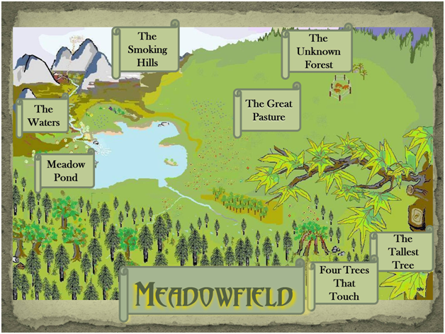
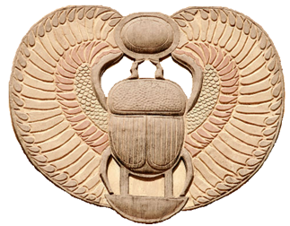
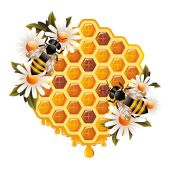
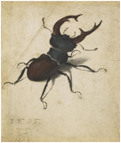

Cockroach of Meadowfield
Book Two
The Great Cicada Ball
By Bradford P. Ward
Meadow Pond Publishing
To Alison, who provided me with subtle, but always effective, motivation.
Copyright © 2015 by Bradford P. Ward
All rights reserved. This book or any portion thereof may not be reproduced or used in any manner whatsoever without the express written permission of the publisher except for the brief quotations in a book review. The characters and situations are products of the author's imagination. Any resemblance to actual events or persons, living or dead, is entirely coincidental.
Cover design by Bradford P. Ward.
Edited by Alison Kemp and Diane Ward
Parents and educators, please visit www.bradfordpward.com
for lesson plans, teaching tools and information about the biology in this series.
Printed in the United States of America.
First Printing, 2015
Meadow Pond Publishing
Tampa
“In the sun she warmed her wings
And listened to the cicadas sing.”
from Dragonfly
by Ziggy Marley

“Come take your hats, and away let us haste to the Butterfly’s Ball and the Grasshopper Feast:
The trumpeter, Gadfly, has summon’d the crew, and the revels are now only waiting for you.”
from The Butterfly’s Ball and the Grasshopper’s Feast
William Roscoe, Esq.
Contents

Chapter 3: Plans and Preparations
Chapter 6: Sorrow and the Stag
Chapter 13: The Cell of the Forgotten
Chapter 14: ‘Let the Games Begin’

Chapter 21: The Worst Fright Dream

Crystal cubes were tumbling down from the Smoking Hills, landing in The Waters and bobbing downstream. All around the floating cubes, Scaly Water Demons rose up from the depths and snapped at the surface. Then, inexplicably, the Demons dove back under the water only to wash up on the shoreline as harmless sticks.
The cubes drifted below the overhanging branches of Acorn Weevil’s nut tree. Out of nowhere, riding on top of one of the cubes, Book Louse appeared. He was struggling to keep his balance while shouting out a warning about something or other. Then he disappeared. The crystal cubes drifted onward; into the swirling spillway that emptied into Meadow Pond’s quiet waters.
They sped across the pond to the far shore and, one by one, they entered the opening of a very large silvery cylinder firmly implanted at the edge of the pond. Dancing about on the top of the cylinder, directing it all, was Silverfish. She beamed with excitement while she pointed and waved to each cube.
There was a loud and startling sound. Then everything stopped.
Something had crashed down from the upper surface of the cylinder. It nearly landed on Silverfish, who was curled up sleeping on the cold cylinder floor. It jarred her from her sleep, abruptly ending her dream. She awoke with a frightening start. It took her several moments to figure out where she was. The first thing she noticed was the sky, now oddly visible through the top of her cylinder. Scattered all around her were jagged pieces of reddish-brownish mess that had apparently fallen from what was now a gaping hole above her.
“What the cricket kickin’? What is becoming of my home?” she gasped with a terrible sense of dread. “It’s crumbling down all around me. It used to be so beautiful. Shiny and warm. And now it’s just a rotting, reddish-brownish mess that’s getting worse with each passing suntime.” A piece of the cylinder wall collapsed to the outside just as Silverfish leaned against it. “It’s all falling apart. My precious silvery cylinder. What am I to do? I’ll never find another cylinder like this. I’ll never be so fortunate to have one appear out of nowhere again. Not a second time. Not in my lifetime.”
Silverfish remembered seeing all the silvery cylinders in the Loomer home, lined up in orderly rows in the area Book Louse called the cabinet. What if I went back to the Loomer home to retrieve just one of those cylinders, brought it back to Meadowfield and made it my new home? But she dismissed this possibility as quickly as she thought of it. If the sparkle dust in the Loomer home didn’t get her, the book-binding glue would.
“If only I planned ahead and towed one of those cylinders back from the Smoking Hills,” she bemoaned. “It could have floated on the Waters, right behind the boat, just like in my dream.”
She knew this was just wishful thinking. During her time in the Loomer home, she was in no condition to plan ahead for anything. The book-binding glue she consumed in the attic every suntime was responsible for that. She was, only now, overcoming the effects of the glue—and not a moment too soon. She was going to need a sound body and a clear mind to figure out how and where she was going to live—before her cylinder fell apart completely.
Since his return from the dreaded Smoking Hills, Cockroach’s situation was not much better. Like Silverfish, he was fortunate to bring back ample amounts of tidbits from the Loomer home. And it was a good thing he did, because the terrible storm had devastated his stink pile and all the area around it. He knew his home would never be the same.
“I don’t know what you’re complaining about, Cockroach,” Silverfish remarked. “You always slept on the ground anyway. It’s still here. Throw a couple of leaves over you. What’s the problem? I, on the other hand, am seeing my beautiful silvery cylinder quickly turn to rot and disappear into the dirt!”
Anytime Silverfish complained, Cockroach gave his standard, indifferent answer. “Aw, suck on a fruit rind and forget about it.” This time he added, “There’s no reason you should be any less miserable than me.”
Meanwhile, Stinkbug was feeling restless too. After returning from the Smoking Hills, Stinkbug had gone back to her home in the forest where the four trees grew at four corners and bent toward each other until their treetops touched. Her only neighbor, Scarab the Dung, had moved far away. Stinkbug had no idea if she would ever see the curious beetle again. Cockroach and Silverfish lived four suntimes away. At that distance, visits would be few and far between. After a good amount of thought, Stinkbug decided she would be happiest if she were considerably closer to her quarrelsome companions and traveling partners, Cockroach and Silverfish. She decided it was time to move.
Having packed up a few of her juiciest stems and a fine pair of red berries, she set off to find a new home. She took to the air on clattering wings and headed toward the homes of Silverfish and Cockroach. Being a rather poor flyer, she had to rest along the way. She made frequent stops, each time checking out the area to see if it felt like home.
After two suntimes of flying over streambeds, rock piles and heavy forest, she came upon a pleasant clearing where a narrow rivulet of water flowed over lush, green, grassy ground. At one corner of the clearing, growing along a rocky outcrop, Stinkbug spotted an inviting stand of purple berries. Without hesitation, she flew down toward the berry patch. Performing one of her usual ungraceful entries, Stinkbug crashed into the berry bushes; her body ending up in a twisted heap. After she straightened herself up, organized her legs, and tucked her wings back under her shell, she inspected the bounty of berries surrounding her. There were berries dangling down from every branch; ripe, luscious and ready for picking. She selected one of the fatter fruits and sunk her needle-nose mouthpart deep into its flesh. It was tart and juicy, just as she hoped it would be. After tasting several more berries, she lifted her juice-stained face long enough to look out across the clearing. As she surveyed her surroundings, she nodded her head with approval. “This certainly looks promising,” she said to herself. “Very promising. It may take some time, but I think I can get used to calling this place—home.”
Once settled in, she wasted no time calling on Cockroach and Silverfish. She was most anxious to tell them she had moved less than a suntime away; close enough for frequent visits. As might be expected, Cockroach was not particularly excited about the news. Silverfish seemed genuinely pleased. “Stinkbug, welcome to the good side of the forest.” Then, with a sad stare, she looked at her poor silvery cylinder, now neither silver nor cylindrical. “Well, it used to be good.”
“Silverfish, I am so sorry about your home, but let’s think about happier things. Are you getting excited about the Grand Ball? Not many more suntimes. It will probably go faster than we think and the festivities will be upon us in no time at all!”
“I probably won’t even go,” Cockroach grumbled.
“Don’t be silly, Cockroach. I know you’ve never been fond of company, but this is different. This is a once in a lifetime, in fact several lifetimes, event. Every bug-fellow who is any bug-fellow will be there. You can’t miss this,” Stinkbug insisted.
“Unfortunately, you’re not going to miss it>,” said a voice from the branches overhead.
All three bug-fellows twisted their heads and looked upward, wondering who or what was speaking to them. “Who is up there?” Silverfish asked as she continued to inspect the branches above them.
The leaves rustled a bit and a buzzing sound could be heard. Then, swooping down from the branches, yellow wings flashing, the bee known as Worker 1200 appeared. She circled overhead for a moment before landing upon the mossy rock next to Silverfish’s crumbling cylinder. “Let me assure you,” she began without hesitation. “I came here... but not by my own choice. The Queen sent me as her messenger. I wouldn’t be here otherwise. The Queen wants—” Worker 1200 stopped for a moment when she realized her tarsals were coated with a sticky, green slime from the mossy rock. She grimaced while she scraped it off. “That’s disgusting. How can you live in this filth?” she asked as she flew to a low hanging branch. “Let’s get this over with, before I step in some other trash you have out here. As I was starting to say, the Queen wants to be certain all three of you received your invitation for the Ball. You did receive them—didn’t you?”
“Oh yes. We certainly did,” Stinkbug said with excitement. Her mind flashed back to the suntime when they first discovered the invitations, made from butterfly scales and scarab shells, hanging from Silverfish’s cylinder. “I have mine safely tucked away at my new home.”
Worker 1200 continued. “I have orders from the Queen. She demands each of you appear before her in the hive’s royal chamber. Even you,” and she glared at Cockroach, a pest who had always repulsed her. “In six suntimes, you are to come before her. Arrive when the suntime is at its brightest. Do not be late! Be prepared to present yourselves with the utmost dignity and grace—if that’s even possible for the three of you.”
“The Queen? She wants to see us?” asked Stinkbug with disbelief. She allowed a trace of vapor to slip unexpectedly from her perfumery. “Whatever for? Why does she want to see us?”
“Some last moment changes,” explained Worker 1200. “She will explain, but it has to do with the three of you being added to the festival’s entertainment schedule.”
“Entertainment? I can’t sing!” said Stinkbug. “I can barely whistle. And I’ve never seen Silverfish or Cockroach dance at all!” she laughed.
“No, it’s not that kind of entertainment. As I said, she will explain. Just be at the hive on time. Do not keep the Queen waiting. So now that I’ve reluctantly completed this unpleasant task… goodbye.” With that, the bee flew away. She vanished into the forest as quickly as she had arrived.
After two suntimes of travel, the three bug-fellows were less than a suntime away from the Queen’s hive. They were on time. They stopped for a moment in the dappled shade of the forest to allow Stinkbug time to kick off the mud that had caked itself to her tarsals. She certainly wanted to look her best in the Queen’s presence.
“I just want to say one thing,” began Silverfish in unsolicited conversation. “I don’t plan to be any pest’s entertainment without getting something in return. As I have often said—my services are not for free.”
“You can’t be serious,” remarked Stinkbug.
“No, I see the scaly scoundrel’s point,” Cockroach quickly interjected. “The best time to take advantage of a situation is every time you can. That’s how I get along.”
“You two are positively the most selfish pests I have ever—”
“No, I would say it is more—opportunistic,” Silverfish interrupted.
“Selfish and opportunistic! They are both apt descriptions!” Stinkbug was now raising her voice. “You know, seldom have I tried to tell you what to do. Rarely argued or demanded anything. But this? You would have the temerity to make demands of the Queen? Have you simply lost your minds?”
“Temeri-what-ty? What does that mean?” asked Silverfish. “Where did you learn such a word?”
“Never mind! It just came out of nowhere. Maybe I heard it from Book Louse or something. You’re trying to change the subject. Just understand I will not be a part of this. I will not be embarrassed by this behavior. We were incredibly fortunate and honored to be invited to this event. And now, we’ve even been given a personal invitation from the Queen. She actually wants us to be a part of the ceremonies? Every bug-fellow in the land would jump at this honor—without selfish demands!” She ended her outburst with a blast of crimson vapor.
Before the dispute could be settled, however, several bees swooped in and encircled the group. Half of them took positions on the ground, while the other half hovered just above them. “This way!” the lead bee demanded. “The Queen is expecting you.” Without pause, the bees began driving the three bug-fellows across the forest floor; nudging them along whenever one or more of them slowed down for even a moment.
“I’m not sure I like this treatment,” Cockroach whispered to Silverfish as he was nudged again.
“Nor do I, but I’m not going to argue with stingers on every side of me. Are you?”
“I expect not,” Cockroach replied.
The bees continued to push the bug-fellows deeper and deeper into the forest until they reached a stand of dead trees. It was here the lead bee flew ahead. She made several flights around the largest of the dead trees. After completing her circling flight, she flew back to the bug-fellows and calmly announced, “We are here. It’s the largest tree in front of us. Our hive is inside. Keep moving.”
With the bees still poking and prodding them on, the bug-fellows continued heading toward the trees. They stumbled over the entanglement of heavy roots at the base of the largest of the trees until they reached a small hole tucked away in the creases of the tree’s tattered bark. All the bees except the lead bee drew back and hovered around the opening. “This way,” the lead bee demanded. “Into this hole you go.”
Reluctantly, the bug-fellows followed the bee through the hole in the bark. It led to a dark, narrow passageway that reeked with the smell of rotten wood.
“I’m not going in there,” Cockroach announced. His mind was quickly changed when he felt the lead bee’s stinger pressing against his back. “However, on second thought—”
The group headed up inside the decaying core of the tree. Their antennae began to detect a sweet, flowery scent wafting down from the upper end of the passageway. As they climbed higher, the sound of countless numbers of bees grew louder and louder.
Eventually the bug-fellows reached the end of the passageway. It opened into a bright, spacious chamber. Beams of light poured through a hole in the side of the tree, filling the area with a golden glow. Bees were everywhere, buzzing loudly, hard at work; taking no interest in the three pests who had just entered the chamber. On every wall, cells of honeycomb oozed with golden honey; much of it overflowing, dripping into puddles on the chamber floor. Naturally, Cockroach couldn’t resist plunging his head and half his body into one of the great pools of sweet liquid. He came up gasping for air, licking at the honey dripping from his face and antennae.
“Cockroach! Manners please. Control yourself for once!” Stinkbug insisted.
“That will never happen,” Silverfish remarked.
“Tasty, but a little bitter.” Cockroach declared. “Certainly not as sweet as my own crystal cubes.”
The lead bee turned to the bug-fellows and shouted her instructions over the sound of the hive. “Follow me—toward the back of the chamber. We will pass around that honeycomb and I will lead you to the royal chamber of the Queen. But first, let me give you a few instructions and the proper protocol to follow in the Queen’s presence. To begin with, never ask the Queen any questions. The only thing you should do is answer her. Address her as Your Highness. Stare straight at her at all times—like she is the most beautiful thing you have ever witnessed. Above all, laugh at her jokes—even if they are not funny. And just between you and me, most of them aren’t. Whatever you do, don’t upset the Queen.”
Stinkbug turned to the others. “In that case, the two of you better just keep your mouths shut.”
“And you better keep your gassy bottom buttoned tight too,” said Cockroach.
As the group worked their way deeper into the hive, they came to a corner of the honeycomb-lined wall where several bees stood guard. The lead bee hesitated, mumbled something to the guard bees and then turned to the bug-fellows. “All right, this is it. Right around this corner. You can step inside now. And let me remind you—don’t do anything dumb. Go on. The Queen is ready to receive you.”
With nervous anticipation, the bug-fellows rounded the corner and cautiously stepped into the Queen’s chamber. The air inside glistened with the golden glow of perfectly placed honeycombs lining the chamber walls. Stacks of pollen were carefully arranged in neat piles along the edge of the chamber. The sweet smell of honey and wildflower nectar swept through the air on the beating wings of countless numbers of bees gathered together on the sides of the hive.
Bees were everywhere, rushing about in a frenzy of activity that, at first, appeared to be utter confusion. But it didn’t take long to realize each bee was involved in a specific job with a programmed purpose. Some were building new comb cells. Some were polishing the honeycomb until it glistened. One group of bees crowded around nurse cells where they tended wiggling bee larvae grubs. A steady stream of bees, arriving from outside the hive, continuously brushed past the bug-fellows. They were delivering fresh supplies of pollen to another group of bees who promptly molded the pollen with their mouth juices, rolled the mixture into balls and pressed it into comb cells.
“Ahhh, welcome my boorish friends. Step this way and let me get a good look at you.”
The three bug-fellows didn’t know where the voice was coming from. It took some time before they saw the Queen and realized it was she who had addressed them. She was surrounded by a host of worker bees, preening and pampering her while she quietly piped a pair of notes to summon the workers to her side. She looked remarkably like the rest of the bees, just a little darker and slightly larger.
“More royal jelly,” the Queen commanded. “Be quick about it. I have eggs to lay.” Immediately, several workers crowded beside her. They began oozing a thick liquid from their heads which the Queen lapped up with great enthusiasm. “So as I understand it, the three of you have just returned from quite an adventure,” the Queen began, her face dripping with the royal jelly. “Isn’t that so?” The bug-fellows didn’t answer. The entire scene left them too stunned to speak. “All right where was I? I believe I was just mentioning your adventure.” She stopped to lap up more royal jelly from a worker bee’s head. “I’ve been told your travels took you well into the Smoking Hills. In fact, face to face with the fabled Loo–ooomers?” Stinkbug could feel her bottom swell with vapor at the mention of the word. She struggled to hold it in. “Now I don’t want all the details. I love surprises and will wait to hear your full story at the festivities. I do love surprises,” and she began to giggle. “Surprises like, for instance, if one of these bee’s brains were to pop out because I lapped the royal jelly off their miserable heads too enthusiastically.” Her giggling turned into a full throated chuckle.
Stinkbug nudged Cockroach and Silverfish and they laughed together nervously. The lead bee was right, thought Stinkbug. Her jokes aren’t funny.
“The Great Cicada Emergence Grand Ball has been hosted by our hive for as far back as our dead ancestor records will take us,” the Queen went on. “Seldom have we had mere pests, like yourselves, available to entertain our guests. So here is the plan for the three of you. On the final suntime of the festivities, on the suntime of the Great Cicada’s long anticipated emergence, you will have your moment. A grand space will be prepared for you in front of the throngs of bug-fellows and you will tell us your tale. You will tell Meadowfield all about your adventures in the Smoking Hills. Leave nothing out. It will be an incredible opening act before the arrival of the Great Cicada. It will be… memorable!” She stopped as her body heaved and rolled. “Another egg. How many is that?”
“That would be one thousand sixty-eight, Your Highness,” replied one of the worker bees beside her.
“Ahhh, just nine hundred thirty-two more to go—for this suntime,” remarked the Queen with satisfaction. “Now if you will, my little pests, leave my chamber before one of my workers gets ornery enough to pound a stinger through one of your heads and tosses all three of you out on the garbage heap. You know how bees can be. Bees will be bees,” and she began to laugh uncontrollably. The three bug-fellows looked at each other and forced themselves to laugh along with her—even though her little joke left them shaken and scared to death.
Worker 1200 awoke to a damp, drizzly suntime. The dreary conditions just added to her worrisome mood. She couldn’t help thinking, would she and her hive ever be ready to host the Great Ball? Would they ever get all the preparations completed in time? She started her suntime doing the same thing she had done for as many suntimes as she could remember—going through the Queen’s list of chores and deciding which ones she would do next. The list never seemed to grow any shorter. Whenever she thought she had finally reached the end of the list, the Queen would come up with a whole new set of jobs for her. Her latest chore was to oversee the preparation of the new entertainment area for those three annoying pests, Cockroach, Silverfish and Stinkbug. The Queen was determined to include them in the entertainment schedule. Worker 1200 tried to warn her that inviting the pests was not a good idea. They were too uncivilized, too rude and too dim-witted to be trusted. But trying to reason with the Queen only resulted in angry threats; not the least of which was having her head removed. Now it seemed the Queen was punishing her insubordination by giving her more and more jobs to do. I should have kept my mouth shut, Worker 1200 thought. But I can’t shake this dreadful feeling that something is going to go wrong and those three pests are somehow going to be in the middle of it.
Worker 1200 tried to put it all out of her mind as she set about completing her tasks for the suntime. The first thing she did was fly down to the festival site to check on the grasshoppers and crickets who were supposed to be trimming the grass in the new entertainment area.
“You’re doing a fine job,” remarked Worker 1200 as she arrived at the festival grounds and circled over the trimming team. “The Queen will be pleased.”
The grasshoppers and crickets failed to acknowledge the worker bee. They just kept chewing and trimming the grass. One of them finally looked up long enough to mumble a word of thanks before he spat out a wad of tarry spit, wiped his face and continued working. Not the most congenial lot, Worker 1200 thought. However, they are hard workers. Satisfied with the trimming team’s progress, Worker 1200 took shelter within the branches of a tree, out of the drizzling wet-sky. From there she could stop to admire the rest of the activity going on around her.
In one area of the festival grounds, butterflies practiced their aerial dance moves. Over at another corner, a team of millipedes shredded leaves to feed one of the many plots of toadstools which, when fully grown, would be used for seating throughout the venue. Fireflies worked on the overhead lightning while the Ladybird Beetle sisters argued over arrangements in the refreshment area. By the Grand Tree, where the Great Cicada would emerge, termites were building a wood dust wall to separate the crowd from the Cicada’s expected exit point. For Worker 1200, everything appeared to be going as planned. Every bug-fellow was cooperating and things were safe and secure.
Security was always an issue and Worker 1200’s old friend, Praying Mantis, as well as several bombardier beetles, were in charge of crowd control. Praying Mantis promised to keep an eye on the unpredictable bombardiers. Bombardier beetles were hard to trust. Simply being near them was more than just a little scary. They could blast a pest with a burning acidic spray that made Stinkbug’s vapors seem like honeydew.
It wasn’t just the bombardier beetles that made Worker 1200’s antennae twitch. There were bully wasps, earwigs, and the possibility of an assassin bug showing up too. And, of course, there were the ants. Worker 1200 really disliked ants. She didn’t want them to be invited at all. But after the Queen’s reaction to her last suggestion, she decided it was best not to say a word.
Ants were stubborn, brash, know-it-alls who thought they were better than everyone else. They usually kept to themselves—unless Waterboatmen races were scheduled. Then, ants came out of everywhere, just as they were expected to do for the races planned during the Great Cicada Ball. They’d crowd Meadow Pond’s shoreline, pushing and shoving, placing aphid honeydew bets, acting rude and obnoxious and making a general nuisance of themselves. And it wouldn’t stop there. Ground Beetle fights had been scheduled too. Ants were expected to turn out in huge numbers for that. If wagers and bets were involved, ants would be there.
With the mix of bug-fellows of every size, type and temperament, there was always a chance of conflict. But despite it all, there remained the understanding that for the four suntimes of festivities, natural hostilities between rival groups of pests would be put aside—no matter how hard that might be for some. Of course, a few groups still had to be kept separated—lady bird beetles and aphids, as well as dragonflies and mosquitoes. But for the most part, it was an event where everyone was expected to get along—and the hope was that everyone would do just that.
Worker 1200 took a long, deep sigh of relief. It was good to see so much work and progress at the festival site. There was still one more venue to inspect before she headed out to the pasture for her usual nectar collecting. After making one more flight over the festival grounds, she took off in the direction of Meadow Pond to check on the progress of the Waterboatman races.
When the worker bee reached the pond, she saw Old Yellow Fat, the grasshopper, hard at work just as she expected. He was busy marking off the championship course for the festival races. Old Yellow Fat was a bug-fellow Worker 1200 genuinely liked. He was a jovial sort who rarely had a bad word about anyone and was fiercely devoted to running fair and honest races. “Everything going as planned?” Worker 1200 called out to the grasshopper.
“Perfect,” he replied. “We’re going to have a great suntime of races at the pond. We have the very best racers scheduled and I expect record crowds. The crickets have researched the conditions and assured me the festival suntimes will be bright and delightful. I’m just marking off the final turn of the course right now. So what about you, my friend? Working as usual? Don’t work too hard. You don’t want to miss these races. I’ll have a special spot with an exceptional view saved just for you.”
“That is most kind, and to return your favor, I’ll bring you some of our finest honey. With all the races you’ll be calling, you’ll need an extra boost of energy,” laughed the bee. “By the way, although I am sure you haven’t forgotten, the Queen likes to view the races from a high vantage point. Make sure the Queen’s royal seating is far removed from the splash zone—if you know what I mean.”
“Oh yes, I know exactly what you mean. I’m sure we both remember the Warming Times Races when her viewing area was too close to the pond. One of the racers sprayed her with water at the turn. Remember how angry she got over that one?” smiled Yellow Fat. “Rest assured I will not make that mistake a second time.”
“No, and neither will that racer. Whirligig Beetle I think it was. He was lucky to have escaped imprisonment after that blunder,” Worker 1200 remarked. Then under her breath she added, “And luckier still not to lose his head.”
“I plan to place the royal seating far above the crowds. She will be pleased. She will stay dry and we won’t have to suffer with her anger.”
“Well Mr. Fat, I would love to talk further, but unfortunately my duties are piling up. They aren’t going to get done on their own,” the worker bee replied not wishing to get involved in an extended conversation about her ill-tempered Queen. “Glad to see you have everything under control. I’ll be off now to collect my nectar and pollen.”
Before Worker 1200 could spread her wings and fly away from the pond, she was stopped by a bee flying toward her. “Hold on Worker 1200,” the messenger bee cried out as she landed down beside Worker 1200. “I have an order from the Queen. An urgent task she expects you to carry out without delay.”
An urgent task. Why does this not surprise me? Worker 1200 thought to herself. “All right, what does she want from me now?”
“It has to do with one more invitation. One more guest she wishes to include.”
“Oh, and who might that be?”
“A beetle,” the messenger replied. “A beetle who calls herself Scarab—Scarab the Dung.”
It was common for Cockroach to take walks in the woods during the darkness of suntime’s end. He did his best foraging in dim light and long shadows. Bright light simply made his eyes ache. His senses came alive in the dark. His antennae could pick up every scent and sound around him as he scooted and squirmed through the leaf litter. With darkness, Cockroach was truly in his element—with one exception—the rare occasions when his walks in the dark were conducted in his sleep. This was one of those rare occasions.
On this suntime’s end, Cockroach had been walking in his sleep for a very long time. He had wandered deep into the forest; into mysterious territory far beyond his normal travels. When he awoke, it was dark all around him. He felt groggy and confused. He actually thought he was still sleeping; dreaming about being lost in the woods. It wasn’t long before he realized it wasn’t a dream. He really was lost. He wasn’t near his stink pile, couldn’t see Silverfish’s cylinder, saw no traces of the glowworms’ paths, and was nowhere near any of his favorite foraging areas. He was definitely in parts unknown.
“Crawling crickets,” he gasped. “Where in the name of the dead ancestors am I? I shouldn’t have eaten that moldy tidbit. It upset my stomach and kept me up all suntime. I finally fall asleep and I end up here. And from what I can tell—here is nowhere.”
He tried to pick up his own scent trail, but there wasn’t one to follow. Bug-fellows don’t leave a scent trail when they are asleep. Cockroach had nothing to follow, no signs to interpret and no way of knowing which way was home. He was simply alone; surrounded by a maze of shadows that stretched across a soggy forest floor, one dark tree after another.
Cockroach panicked. He started spinning in circles, desperately trying to find something, anything that looked familiar. The trees seemed to close in around him. Imaginary sounds called out from the gloom, leaving him trembling with fear. He felt the urgent need to find some place to hide.
He squeezed into the security of a rocky crevice and remained cloaked in its darkness as if somehow the cold rock walls would calm his tattered nerves. Peering out from between the rocks, Cockroach studied the blue-white light of the suntime’s end orb in the sky. Its broken beams flickered in and out through the shadows of the branches, while casting an eerie green glow on the mist rising up from the hillocks. Everything was strangely still and quiet. Only the creak of branches, the rustle of leaves and the far away croaking of a solitary Sticky Tongue broke the silence.
What is wrong with me? thought Cockroach. It’s not like I’ve never been in the woods before. But it seems different here. Then, answering himself, as he was sometimes known to do, “Different because you’re lost!” Still muttering to himself he said, “I can’t just stay here. I’ve got to find my way home. If it’s not one direction, it will be another. I can do this. After all, I survived Loomers, sparkle dust and Scaly Water Demons. I should be able to find my way around in the woods.”
After several more personal conversations, Cockroach finally talked himself into venturing out from the rocky crevice and onto the forest floor. Cockroach scurried off in the first chosen direction. He made certain to leave a scent trail all along the way. He crept in and out of the shadows, working his way among the fern and fungal clumps growing up from the damp ground. He felt his way around the base of massive tree trunks and down into the soggy spaces between their shallow roots. Everywhere, yellow eyes peered out from each nook and cranny. They seemed to be following his every move. A heavy odor of decay hung in the air, sweetened only by the occasional scent of a suntime’s end flower in bloom.
It wasn’t long before Cockroach picked up another odor along the forest floor. It was the familiar smell of his own scent trail he had just laid down. He was back where he began. He had done nothing more than wander about in one large circle. “I can’t get out of here. I have no idea where to go. What am I to do? It’s just a matter of time before some horrible Beak Beast, Sticky Tongue or some other nameless creature lurking in these terrible woods grabs me and turns me into their late suntime snack. Or maybe I’ll sink in the muck pits and decay with everything else out here. Or I’ll keep crawling in circles until I wear holes in all my tarsals and end up squirming around on my belly like a ground grub.” Staring into the gloom of the trees, Cockroach moaned, “Truly, what am I to do?” He closed his eyes in despair and buried his head in his belly.
When he looked up again, everything was still. A beautiful yellow-green glow slowly filled the air around him. Sparkling showers of lime green particles were falling like fine flakes of soft cold, warm and magical. “I’m dead,” he announced. “This is definitely what dead looks like. I’m as dead as a stump.”
“No, my beautiful one, you are not dead,” said a chorus of voices speaking together in a soft whisper. “You are full of life—beautiful, wondrous life.”
Appearing as if by magic, a gathering of magnificent moths, the likes of which Cockroach had never seen, fluttered out from the darkened woods. They flew in unison, gracefully and effortlessly. The radiant green on their wings seemed to light the air around them and each one left a golden trail that hung in the air momentarily before falling to the earth in cascading beads of color. They were exceptionally large moths with heavy bodies of soft white fur and tiny pink legs. Their hind wings were adorned with a single yellow eyespot and a curving tail that rippled behind them as they flew. When they spoke, they spoke with one voice, soft and serene. “You are beautiful, Cockroach, and you are full of miraculous life.”
Cockroach was spellbound. Never had he seen such beauty, much less ever appreciated it. And certainly, no creature had ever called him—beautiful. “Who are you?” Cockroach stammered. “Who in the name of Meadowfield visits me with such extraordinary splendor on this horrible suntime’s end?”
“We are the Luna Moths,” they announced all together. “Followers of light, guardians of the forest spirit, bearers of brief lives.”
“Humm, I don’t know what any of that means,” Cockroach replied abruptly. “Besides all that, I just want to know one thing. Can you get me out of these impossible woods?”
The moths flew out of formation, each one taking their own circling path before spiraling down and hovering, one behind the other, just above Cockroach. “We are Luna Moths, messengers of meaning, instruments of intuition, pundits of perception—”
“Can we get beyond the introductions?” asked Cockroach under his breath, but the moths continued their discourse.
“We Luna Moths have precious little time in this world. Even now, our lives are slipping away. We fly for only seven suntimes; just seven suntimes to enjoy the splendor of our surroundings, bring beauty to those around us and share our spirit senses. Our gift is our giving, our power is our prophecy and insight is our instinct.” The glow of the orb in the sky glistened off their green wings as they continued their discourse. “Cockroach, we Luna Moths possess the gift of second sight—the knowledge of events to come. To see what is yet to be. This gift—what we see in our visions—we share with you.” The moths became nearly motionless; barely moving their wings to stay aloft. Their collective voices grew serious as they solemnly recited together,
“Through the greenery,
For a moment, life rises.
Stolen on the wind.”
“Luna Moths, certainly you are things of beauty, but whatever it is you are trying to say… this jibber-jabber… I have no idea what you’re talking about. Just answer me this—are you going to get me out of this forest, or what? That’s all I want to know.”
“Of course we can settle your immediate situation—and we will, beautiful one. But understand, what you should fear is your future—not this forest. The future is unfolding as we speak. Yours is headed on a hazardous course—a dangerous direction. We can surely lead you from this forest, but we cannot lead you from your future. Soon, you will find yourself entangled in troubling times. Do not run. Face the danger. Only then will you have any hope of finding a path leading toward promise and peace. Come, follow us as we light the way, but always remember our words. Hold on to our thoughts, lest they too are—Stolen on the Wind” Then, as quickly as they appeared, the moths were gone—vanished into the darkness of the woods.
“Wait, where did you go?” Cockroach demanded. “Where did you go moths? I thought you were leading me out of here,” Cockroach was becoming increasingly angry. “You spent all that time talking about who knows what. Spirits, future, second sight or whatever you called it. Wasting my time, and then you just leave me here! You stinking pests. You no good… What manner of beast are you? I might as well have spent my time walking in more circles instead of listening to you.”
Cockroach suddenly stopped his angry rant. The moths were gone indeed. But hanging in the air, just above the ground, was a shimmering golden trail that weaved in and out among the trees, tracing a path through the darkness.
“Oh,” whispered Cockroach, finally ending his unwarranted insults long enough to notice the glowing path the Lunas left behind. He should have felt guilty for being so rude to the moths. He knew he was feeling something out of the ordinary, but he couldn’t possibly recognize it as guilt. Guilt had no role in Cockroach’s narrow range of emotions. The feeling left him dazed and dumbfounded. Dragging his bewildered body forward, he headed out along the Luna’s path. As he did, he began to repeat the Luna’s words, still wondering just what they meant.
“Through the greenery,” he began as he started to follow the path out of the woods.
“For a moment, life rises…
Stolen on the wind.”
Following a downward slope and fanning out from Meadowfield’s wooded hillside, the Great Pasture stretched far across the landscape. Its lush, green grasses covered the gentle hillside until they disappeared into the shadows of the Smoking Hills. At another border, where the mysterious Unknown Forest stood, the pasture grasses withered and died among the rocks and rubble at the edge of the forest. Nestled in the meadow lowlands that bordered the remaining side of the Great Pasture was the sparkling blue water of Meadow Pond—the farthest spot that woodland pests usually traveled. Only bees were known to fly beyond the pond on a regular basis. It was a trip they completed every suntime when collecting nectar during the Warming Times.
For the worker bees of the Queen’s hive, it was the end of another nectar collecting trip out on the Great Pasture. They were headed back from the fields with their pollen sacs stuffed and their honey bellies filled with nectar. Worker 1200, however, was flying in the opposite direction—toward the outermost regions of the Great Pasture—in the direction of the Unknown Forest.
Flying above the pasture, Worker 1200 couldn’t help but admire the beauty spread out below her. The pasture was radiant. Everything was in full bloom with clusters of wildflowers reaching up from the swaying pasture grasses, showing off their colors of yellows, reds and blues. The patterns on their petals sparkled with vivid streaks of white and violet light, forming pathways for pollen collectors; guiding them into the hollow of each flower, toward the sweet pools of nectar lying there.
The pasture in bloom had always been one of Worker 1200’s favorite sights. But despite its beauty, Worker 1200 was well aware of the dangers that lurked there—Beak Beasts, dragonflies and bully wasps. And even though Praying Mantis insisted his brothers and sisters didn’t live nearby, Worker 1200 was always worried the mantids might be hiding somewhere in the pasture grasses. She was constantly on the lookout for them, especially since Praying Mantis told her how much his siblings craved the flavor of fresh bee bodies. Worker 1200 made sure her stinger stayed sharp, just in case she needed to use it out on the pasture.
It was getting late and Worker 1200 had to deliver the final Grand Ball invitation before suntime’s end. The invitation, a layer of butterfly scales and scarab shell stamped with the Queen’s wax seal, hung from her back legs. It was heavy and getting heavier the farther she flew. She was headed beyond the pasture to the dry, rocky ground near the edge of the Unknown Forest. She never entered this region before. Why would she? The desolate place didn’t have a single flower. However, Scarab the Dung’s home was somewhere in this area—and the odd beetle was the last invited guest.
Worker 1200 flew past a large group of bees who were headed back toward the hive. Their legs were packed with pollen. “Keep up the good work,” Worker 1200 called out to them.
“Where are you headed?” asked one of the workers.
“To the far corner. Queen’s orders,” answered Worker 1200.
“Well, be careful. Keep your eyes sharp. We think Robber Fly is up that way and may be setting up an ambush. Keep clear of rocks and fallen trees. He’ll strike from there.”
“Robber Fly,” whispered Worker 1200. Just the name made her cringe with fear. Robber Fly was every pest’s worst fright dream—except he was no dream. With enormous eyes set on the sides of his head, long hairy legs and slim body, he was a killer who could snatch unfortunate bug-fellows in flight, stab them with his sharp mouth point and drain the juices from their bodies in no time at all. He was a monster, and Worker 1200 was feeling extremely nervous flying anywhere close to where the monster might be hiding. She began to fly much more slowly and cautiously. Every sound and movement, every rustle around her—a blowing leaf, a darting damselfly, the sudden chirp of a cricket—all made her tiny heart skip.
Worker 1200 could see the outline of the towering trees rising up ahead of her at the edge of the Unknown Forest. She had reached the end of the pasture. The familiar grasses and flowers were now behind her. She knew she was in dangerous territory. The land below her was barren and lifeless. It was strewn with rubble, rotted tree stumps, and a few twisted trees with gnarled, bare branches that reached out over the rocky ground. It was eerily quiet. Although she knew she had to follow her Queen’s orders, Worker 1200 felt she was making a big mistake venturing into these perilous parts.
“I don’t like this place,” Worker 1200 whispered to herself. “Too many ambush spots. Too still. And I’m all alone out here.”
Having said this, Worker 1200 thought she saw a grasshopper on the ground below her. She spiraled down to get a closer look. Indeed, it was a grasshopper, but all that was left of it was the dried out shell. The unfortunate pest had been drained of all its fluid and cast aside—the obvious work of Robber Fly.
The sight of the dead grasshopper made Worker 1200’s heart race. Her belly pumped harder than ever as she drew every bit of air she could through the holes that lined the side of her abdomen. Her wings beat furiously. She wanted to get out of the area and get to her destination as fast as she could. She knew something was coming. The tingle in her antennae and the sensation in her stinger told her danger was upon her.
He came up out of nowhere; wings slashing through the air and his horrible hairy legs dangling below him—ready to grab his victim. The monster let out a terrible shriek as it flew by. His legs brushed against Worker 1200’s wings. She could see his cold green eyes, bulging from the sides of his face. Between the eyes, sticking out, taking aim, the hideous mouth point was ready to run through her body. He circled above her and prepared to make a second pass.
“Breathe your last, you foolish fly,” Robber Fly howled in a high-pitched shriek.
Robber Fly came again, whipping his wings until they whistled in the air. He lowered his head and slammed into Worker 1200 with enough power to knock her out of the sky. Then he shrieked and hovered above her as Worker 1200 struggled to catch her breath and stay aloft.
“Sometimes I like to play with my food,” taunted the horrible creature.
He came back again. As he flew past, he reached out with one of his hairy legs and grabbed the helpless bee by a wing, dragged her through the air and then tossed her toward the ground as he shrieked and screamed some more. Worker 1200 struck the ground, landing hard on her side. She slowly opened her dazed eyes. Lying beside her on the ground, with its eyes dried into its sunken face, was the withered body of a bully wasp—sucked dry and baking in the heat. Worker 1200 quickly looked away from the hapless wasp and rolled over to her back to see Robber Fly hovering above her, once again preparing to attack.
“Enough play time, fly. Now it’s time you joined the others,” Robber Fly grimaced. “Goodbye. I can taste your cold juices already!”
In an instant, Robber Fly was on Worker 1200, pinning her to the ground. He pulled back his head slightly. His mouth point slowly emerged from the sunken space between his monstrous eyes. In a final shriek he thrust his head down and sank his point toward Worker 1200’s heart.
Then something amazing happened. Robber Fly pulled back from Worker 1200, shaking his head violently. He began shrieking and screeching more than ever. Worker 1200 looked down at her chest. There was no wound, no fatal puncture from the mouth point. She was stunned and confused as Robber Fly continued to shriek and scream, still shaking his head.
Then she realized. The invitation. Somehow it had gotten between her and Robber Fly just as he was driving his point into her chest. Now it appeared stuck on the monster’s face and he was thrashing his head about trying to shake it loose.
“Ska–reeeeeah! On my killing point! Get it off! Skreee! Ska–reeeah! Get it off!”
Worker 1200 knew this was her moment to escape. There would be no other chance. She picked herself off the ground, as quickly as her battered body would allow, and took off in a dizzied flight as far and as fast as her sore wings would take her. Robber Fly was still shrieking with anger as Worker 1200 sped away above the barren landscape; every beat of her wings adding critical distance between her and her tormentor.
Once she was far enough away to know she was safe, she said to herself in a quivering voice, “By the way, Robber Fly, don’t get too fond of that invitation. You aren’t invited.” Then on she flew, giggling to herself, thankful she could still muster the slightest of smiles.
The boat, sputtering along on their last bit of energy, barely made it back to the Loomer home. So reliable during the escape many suntimes ago, Ashley’s Tony Toy Company of Tampa boat was now bobbing listlessly in the water; its battery dead. Grand Daddy Long-Legs secured the boat to a branch near the shoreline using a piece of string already tied to the bow of the boat. He stood solemnly at the rail as Book Louse crawled toward him, over the branch and along the anchor string.
“Look at them all, commander. It’s a sorrowful sight,” said Book Louse as he looked back toward the shore. “So many refugees. And so many, I dare say, who never made it.” Climbing back into the boat, Book Louse released a heavy sigh from the pit of his tiny stomach. He had just been on shore, desperately trying to help and comfort the sparkle dust survivors.
The scene along the shoreline was horrific. Crowded around in various states of misery were those bug-fellows who had managed to escape the Loomer home. Some were weeping uncontrollably, others were too sick to cry, a few were spinning about desperately trying to rub any remaining sparkle dust from their shells. There were beetles of all kinds, flies, some crickets, a few meal moths and many, many ants and termites.
“I wish I knew what to do to help them. I wish I knew what to do for us,” Book Louse sighed. “But there is nothing I can do.” He repositioned himself along the rail, turned to Grand Daddy Long-Legs and said, “They already have a name for the terrible event. They’re calling it the Great Sparkle Dusting. The Great Sparkle Dusting, indeed. Historical, it is. Songs will be written about it. Pest nymphs will tell their nymphs and they will tell their nymphs after that. It will fill the tales of the dead ancestors for many suntimes to come. Oh, I can scarcely bear to watch it all.”
“Hummm,” groaned Grand Daddy Long-Legs looking more thoughtful than he was ever accustomed to look. “Come on now soldier, this is no time to go soft on us. We need to rally the troops. We are beaten, but never defeated!”
Book Louse sighed. “I suppose you are right commander. I suppose you are right.”
It seemed certain the Loomer home would be forever abandoned; so complete was the devastation and so lasting were the effects of the sparkle dust. The Loomers had delivered the ultimate blow against the pests who had called the place their home for so many suntimes. Somehow they would have to find new homes, new foods and begin a new life somewhere else. But for now, all were feeling the after effects of the tragedy and they were simply trying to survive.
“Never defeated,” Grand Daddy Long-Legs repeated. “Never defeated.”
§ § § § § §
Stinkbug had spent most of her suntime tidying up around the shrub that had become her new woodland home. She was feeling very anxious about her upcoming speech at the Grand Ball and was trying to stay as busy as possible to keep it off her mind. As she straightened up around the shrub, she stopped for a moment to admire the medal Grand Daddy Long-Legs awarded her upon their return from the Loomer home. She never wore it. She thought it would be far too boastful to wear it around her neck all the time. Instead, she hung it from a branch on the shrub where she could see it each suntime’s end before she went to sleep. Next she picked up her shiny invitation to the Great Cicada Emergence Ball. She started to hang it next to the medal, but decided maybe she would rather not see it every suntime. She was trying so hard not to think about the speech and seeing the invitation only brought on a new wave of anxiety. Her nerves began tightening up all over again.
“What have I gotten myself into?” she thought.
She had been so excited about going to the Ball, but the worry of this speech was spoiling it all. She had never given a speech to anyone, let alone every bug-fellow in Meadowfield. She knew the crowd would be huge. She kept imagining herself in front of the crowd. But all she could imagine was being on that stage in a total state of panic. The more she kept thinking about it, the more the ‘what ifs’ invaded her mind like a nervous swarm of locusts.
“What if I get up in front of the crowd and can’t speak?” she agonized. “Or worse than that, what if I do speak, and it comes out in that squeaky, whistle voice I sometimes get and every pest laughs at me? Or... what if I completely forget what to say? Or I fall over and embarrass myself… or no one believes the story… or what if—” Stinkbug suddenly gasped as clouds of vapor poured from her bottom. At that instant, the worst what if of all came to her mind. “Oh no! No! Mustn’t think about that! What if… what if I get so nervous I can’t keep my bottom buttoned? What if I can’t keep it tight enough to hold my gassy blast in and I… I spend my whole perfumery over the entire crowd? Oh no! That would be… that would be… oh!… I just don’t know if I can do this speech at all!”
Stinkbug had worked herself into a frenzy. She could feel her heart pounding. Her body started shaking uncontrollably. Just as she thought she might completely come apart, a rather fortunate distraction took her mind away long enough for her to regain her composure.
“Yo, neighbor,” a husky voice called out from somewhere behind Stinkbug.
Stinkbug wheeled around to see a massive dark-shelled bug-fellow lumbering out from the shadows of a rotten log, just cricket leaps away at the edge of the clearing. At first, the creature looked too big to even be a bug-fellow. But once it was completely out of the shadows, it was clear it was indeed a pest of unusual size and appearance.
“What? Who goes there?” Stinkbug asked, startled by this sudden arrival.
Standing in the clearing, the pest announced, “I’m Stag Beetle—and a fighter by my trade.”
Stinkbug said nothing. She had never seen anything like this bug-fellow. Finally, she managed to stammer, “Who… who are you?”
“Ya didn’t hears me, or were ya too shocked by my good looks? I said I was Stag Beetle.”
Stag Beetle’s appearance would alarm any bug-fellow. He was at least three times Stinkbug’s size, which was unusual enough, but the most obvious and disturbing feature was the pair of massive pinching jaws, stretching out from the front of his head. They were half the beetle’s body length! To keep the pincers from dragging on the ground, the bug-fellow had to keep his legs stiff and tall, making him appear even bigger. Beady eyes were set at the base of each curving jaw and club-like antennae protruded straight out from the sides of his head.
“Hummph. A face only my Mama could love. That’s whatcha thinking? Ain’t ya?”
“No. No. I wasn’t thinking that at all,” Stinkbug quickly replied, certainly not wanting to offend, even though this Stag Beetle bug-fellow was clearly not handsome.
“Noth’n new. I’m used to it. I didn’t get this ugly in one suntime ya know.”
“No, I didn’t mean… it’s just, well I mean those pincers and all.” Stinkbug lowered her voice almost to a whisper. “You aren’t planning on crushing me with those things, are you?”
“Crush you?” Stag Beetle chuckled. “Trust me, I ain’t plannin’ to hurt ya. I’m in trainin’ now anyway.”
“Oh? Training? That’s nice,” Stinkbug said with much relief. “Training for what?”
“The fights of course! I coulda been a contender!” Stag Beetle raised his pair of grotesque jaws and slammed them on the ground. “A contender I say! I ain’t washed up yet!”
Stinkbug stumbled back a little. “Wha… What fights? What fights are you in?” she managed to ask in a quivering voice.
“I’m fightin’ at the Queen’s big shindig. Got Ground Beetle in the first, Hercules Beetle in the second. I’m gonna knock ‘em all—outta the ring! Give dem ants somethin’ to cheer about!” Stag Beetle moved uncomfortably close to Stinkbug. He tilted his head so only one of his beady eyes stared down at her. “Ya are plannin’ on be’n there, ain’t ya?” he whispered. “Maybe ya might wanna cheer me on.”
“Well... yes of course… I suppose,” Stinkbug stammered as she backed away from Stag Beetle. “I mean... I am going to be there. I have my invitation from the Queen.
“Hey. Perfect. Maybe I’ll see ya there.”
“Oh, you probably will.” Stinkbug thought for a moment and then proudly added, “In fact, I will be presenting a speech there.” But then she caught herself and remembered how anxious she was about it all. “Well, I hope I will be.”
“A speech?” Stag Beetle interrupted. “What kinda speech?”
“Oh, just a speech. Nothing really.”
“A speech ‘bout what?”
“Oh well, you know. Just about things. Just things in general.”
“Hummph. Sounds boring. A speech about things.”
“Well... I mean, it’s about some of my travels—adventures if you like.”
“What kinda adventures?”
“Oh just what I did with some companions—a little run-in we had with… ahh… with… ahh.”
“Spit it out. Run-in with what? How ya gonna give a speech stutterin’ and stammerin’ like dat?”
“Well that’s just it. I don’t know if I can give this speech at all!” Stinkbug quickly replied. “I am not a speaker. And, quite frankly, the thought of it all has just turned me into a bundle of nerves. I don’t know how I will ever be able to give a speech in front of practically every pest in Meadowfield!”
“It’s simple. Just picture all dem pests in the crowd wid’ out their shells on,” replied Stag Beetle matter-of-factly.
“What? How is that supposed to help?”
“I don’t know. My Mama, rest her soul, gave me that advice—just before my first fight. Come to think of it, it didn’t help me neith’a.” Stag Beetle stopped to think for a moment before going on. “So I’ll tells ya what. Umm… I don’t think I caught ya name.”
“Oh? Well it’s Stinkbug. I’m Stinkbug.”
“Stinkbug huh? I’ll just call ya Stinka.”
“Well actually, if you don’t mind, I’d prefer to be called—”
“So Stinka,” Stag Beetle interrupted. “Here’s the deal. You help me with my trainin’ and I’ll help you with your speechin’. We neighbors gotta stick together, ya knows. So whataya think? How’s that sound, Stinka? We’ll start next suntime. Meet ya right here at first light. We’re a team now. Floatin’ wid the butterflies and stingin’ wid the bees. Ain’t nobody gonna stop us now!” And with that, Stag Beetle marched off holding his jaws triumphantly in the air.
“Wait! Where are you going? Why are you leaving? We need to talk about this. I mean, I really don’t know anything about—”
Stag Beetle ignored Stinkbug. “Yup, ain’t nobody gonna stop me. I ain’t braggin’. I’m backin’ it up.” Then he turned, opened his back shell, spread out his wings and took off into the woods.
Stinkbug never got a chance to explain her total inexperience training a fighter. She didn’t know the first thing about it. And how was Stag Beetle going to help her with her speech? The way he talked and bungled the language, she couldn’t imagine how he could be of any help. The partnership was simply a ridiculous idea. She decided she would wait for him at first light and then tell him she was not interested in his plans. But as pushy as he seemed to be, she wasn’t too sure how that would go either. The entire encounter only seemed to add to poor Stinkbug’s anxiety. The Great Cicada Ball was only suntimes away and she still had no idea how to prepare for her speech. Now, she suddenly found herself mixed up with this Stag Beetle character, a complete stranger. She couldn’t help but wonder aloud, “Maybe I should have stayed in my old home and left well enough alone. Maybe moving here was a really big mistake.”
“Ugh, another piece of reddish-brownish mess in my food! I could have choked or had my stomach ripped apart!” Silverfish exclaimed as she spit out a piece of fruit rind and a piece of the reddish-brownish mess it contained. “This will not do. Not only is my home falling down around me, it’s ending up in my tidbits too.” Another crumbling piece of the cylinder fell into a pile of crystal cubes. “That’s it! It’s got to be done. I’ve got to get my tidbits out of this cursed cylinder. But I can’t possibly do it by myself. There are too many tidbits and they’re too heavy for me to move!”
When another piece of the cylinder fell into a pile of her favorite red berries, Silverfish decided she couldn’t wait any longer. She had to move out. She started by rolling her smaller berries out of the cylinder. Then she moved out her leaf mold and scribble skins. She stacked everything under the edge of the mossy rock. The bigger tidbits, like fruit rinds, large berries and her precious Loomer crystal cubes were far too heavy to move. She had no idea how she would get them out. Grand Daddy Long-Legs helped unload most of the tidbits from the boat, but he wasn’t around to help. She and Cockroach had worked together to drag the tidbits up from the shore. But Silverfish wasn’t about to ask for his help again; besides, she hadn’t seen him for several suntimes and really had no idea where he was.
Silverfish was struggling to pull another tidbit from the back of her cylinder when she heard a sharp cracking sound above her. “What’s happening?” she said looking up. In a shower of reddish-brownish mess, a huge section of the cylinder broke free and came crashing down. Silverfish had no time to get out of its way and the crumbling chunk of cylinder landed right on top of her. It knocked the wind out of her. At first, she thought she had been crushed. She found herself squeezed between the chunk of cylinder on top of her and a pile of purple berries, oozing with juice, below her. She was drenched with berry juice. She immediately began counting legs and antennae to make sure all her parts were still attached. Then she began wiggling and squirming, trying to get out from under the slab of cylinder pressing down on her.
“Uggghh!” she groaned. “This may be difficult.” She pulled and squirmed and yanked until she was completely exhausted, but she wasn’t going anywhere. “I believe I am thoroughly stuck! Now what do I do? I’m in a fine mess and there’s no one around to help me. This is just great. I never should have moved back into this cylinder, especially as rotted out as it is now! Stinking cylinder!”
As suntime’s end approached, Silverfish could do nothing more than stare into the darkness of the forest. She wanted to stay alert in case some pest happened to scurry by, but she was too tired from the ordeal and soon dozed off. When she awoke, she tried once more to wiggle out from under the slab of cylinder, but it was no use.
“Well, I won’t run out of food,” she sighed. “I have enough berries under me to last more suntimes than I can possibly count.”
She called out for help many times, hoping even Cockroach might hear her, but her calls were never answered. The forest seemed emptier than ever. On the third suntime’s end, Silverfish noticed a faint glow coming in through the sides of the crumbled cylinder wall. It was the light of the two glowworms who lived nearby. They had stopped at the entrance to the cylinder and were peering quizzically inside.
“Glowworms!” Silverfish exclaimed. “Am I glad to see you! I am in a fine mess, as you can see. I am stuck! I am lucky to be alive. I was nearly flattened and I can’t bear to eat one more purple berry! You have to get me out of here! Right now!”
The glowworms slithered over and around the reddish-brownish mess. They stopped for a moment, crept right up to Silverfish’s face, stared at her in disbelief, then turned away and slithered about some more. It was obvious they had no idea what to do.
“What are you doing? Can’t you see I am stuck?” Silverfish said impatiently. “Are you just going to crawl around or are you going to get me out of here?” There was no answer from the glowworms since glowworms don’t know how to speak. After spending a little more time wiggling about, they scurried off to find help.
The first bug-fellow the glowworms looked for was Cockroach. But they couldn’t find him anywhere. Little did they know, Cockroach was sleepwalking in the depths of the forest where the Luna Moths lived. The glowworms came back to the cylinder one last time to check on Silverfish and then they headed off into the forest toward the home of Stinkbug. Glowworms were among the slowest pests in all of Meadowfield, and even though Stinkbug had moved much closer, it still took several suntimes for the glowworms to reach Stinkbug’s new home.
When they finally found Stinkbug, she was in the middle of a training session with Stag Beetle. She was counting out the number of times he was able to lift a heavy branch with his massive pincers—up and down, up and down. Stag Beetle was straining so hard, he was turning purple. He grunted and groaned with every lift while Stinkbug, acting rather disinterested in the whole process, kept count. When Stinkbug caught sight of the glowworms, she stopped counting. Stag Beetle dropped the branch with a heavy thud.
“Hey Stinka. Whaddaya doin’? You lost my count!”
Surprised to see the glowworms so far from their home, Stinkbug quickly turned her attention away from Stag Beetle. “Glowworms, whatever are the two of you doing here?” she cried out with astonishment. Not only was she surprised, but she was more than happy to talk to someone, anyone other than the demanding Stag Beetle—even if they couldn’t speak.
The glowworms began to scurry back and forth as quickly as their stubby legs would carry them. They crawled up to Stinkbug and then headed back toward the woods and then repeated it all over again.
“D’ ya know these little grubs, Stinka? Why don’ ya get rid of dem, will ya? We got work to do.”
Stinkbug ignored Stag Beetle and kept her attention on the frantic pair of glowworms. “What is it? What are you trying to tell me?” she asked. The glowworms continued scurrying back and forth. “You want me to come with you? Is that it? Something is happening back in the forest. Is that it? I know you live near Silverfish. Is it Cockroach or Silverfish? Are they in trouble?” The glowworms grew very excited when Stinkbug asked these last questions. They began running around in a tight circle, bobbing their heads up and down, flashing their light, looking at Stinkbug as if to say, Come on! Come on! What are you waiting for? Stinkbug looked over to Stag Beetle. “I believe they need me for something, Stag Beetle. I think they want me to follow them. My traveling partners may need me.”
“What about my trainin’? I still need to work my legs, ya know. Ya can’t just leave!”
“I’m afraid it will have to wait,” Stinkbug replied softly.
“Wait? Whatta ya mean, wait? We gotta deal ya know. What kinda trainer are ya, anyway?”
“Probably not a very good one, Stag Beetle—but I never claimed to be.” She considered reminding him he hadn’t even begun to help her with her speech, but she decided not to aggravate him any further. “This could be important. I’m going to have to go. These glowworms look pretty serious.”
“How far’s dis place dez grubs wanta take ya, Stinka?”
“I suspect they want me to go to the homes of Silverfish and Cockroach—and they’re less than a suntime from here.”
“Ok. New plan. You fly, I’ll run,” Stag Beetle declared. “Get dem legs of mine burnin’. I’ll get a workout outta dis, one way or anotha.”
“You mean you are going too?” Stinkbug sighed. She had hoped to get away from Stag Beetle and all his demands for a while, but that apparently wasn’t going to happen. “Well, all right—I suppose,” Stinkbug sighed again. “But you’ll need to keep up with me. I think my help is needed right away. These glowworms act like there’s not much time to waste.”
“Keep up? Bah. You kiddin’ me? I’m fightin’ in a few suntimes. I can keep up!”
The region where Scarab the Dung presumably lived was as remote and barren as any place Worker 1200 could have imagined. The ground was dried, cracked and strewn with rocks. The parched earth supported very few trees. Those that were still standing either had no leaves or their leaves were chewed apart and riddled with holes. The only green area in the entire region was a field surrounded by a curious row of stumps. Every stump was connected to the one beside it with heavy web-like threads. Roaming about inside the circle of stumps were several groups of Four-Footed Fly Swatters; their heads lowered as they chewed on the grass, legs slightly apart and their enormous shoulders square to the ground. They slapped their tails from one side of their body to the other, brushing away the flies nipping at their skin, all the while, making the strangest moaning sounds, as if they were in terrible pain.
This certainly is not the kind of place I’d want to call home, Worker 1200 thought. She continued to fly slowly over the area, surveying any likely spots where Scarab the Dung might be. “Actually, I don’t see any place out here where a bug-fellow would want to live. I really don’t know where to look. I wish I could drop the invitation off somewhere, head home and consider my job done. Of course, Robber Fly has the invitation now,” the worker bee smiled. “But I’m not complaining about that!”
Worker 1200 flew toward the circle of stumps. She thought she would seek out some of the flies hovering over the Four-Footed Swatters and ask them if they had any idea where she might locate Scarab the Dung. Never having talked to these kinds of flies before, she didn’t know what to expect, but her time was getting short and she needed a quick answer before heading back to the hive and putting this miserable task behind her.
The backs of the Four-Footed Fly Swatters looked safe enough to land on. She picked one out, flew down and landed on its dark, heavy shoulder; making certain to keep herself at a comfortable distance from the brushy end of the constantly swinging tail. A fat, green-bellied fly, looking a little groggy after being smacked silly by a Fly Swatter’s tail, managed to land safely right beside Worker 1200.
“I say there fly,” Worker 1200 began addressing the bug-fellow, “excuse me if I address you improperly, as I am not certain if you are a he or a she—I am quite unfamiliar with your kind. I am wondering if you might tell me where I could find the one who calls herself Scarab the Dung.”
The fly looked at Worker 1200 rather suspiciously before saying, “Don’t know. I eat dung. That’s the only dung I know.”
“Dung? You eat—”
“Yeah that stuff on the ground down there. You know the stuff that comes out of the backend of—”
“Yes, yes. I know where it comes from,” grimaced Worker 1200 not wanting to hear any more. “And you eat that? Why that’s positively revolting.”
“Don’t knock it till you try it.”
“Ewww. Well, thank you for your time. I’ll be going now before I gag.” And Worker 1200 flew away feeling sick with the thought of being anywhere near the decaying piles of disgusting dung—let alone being near a bug-fellow who practiced the habit of eating it!
Needing a spot to rest and settle her queasy stomach, she landed in the limited shade of a leafless tree. As she leaned back against the tree to relax, a dreadful odor turned her stomach all over again. She sat up, looked around and discovered she was surrounded by piles of obnoxious dung balls. “Aughhh, disgusting!” she groaned as she crawled out from under the tree. “This place gets more nauseating each time I turn around. And—once again—I get no chance to rest,” she sighed. “Oh well, I don’t suppose I have time to rest anyway. I am sure, by now, the Queen’s wondering where I am.”
She resigned herself to continue her search for Scarab, but was distracted by a voice calling out from the branches above her. “You seem to be awfully far from home, bee. You’re not going to find any flowers out here, you know. Just these leaves I've torn to smithereens. You’re in Gypsy land now.” Worker 1200 tried to see where the voice was coming from. “I’m right behind you, bee. Hanging next to you.”
When Worker 1200 turned around, she came face to face with another unfamiliar bug-fellow. It was a caterpillar of sorts, but not one she had seen before. It was large, covered with exceptionally long fuzz, with blue bumps running down both sides of its body, followed by a greater number of red bumps down to its tail. It dangled from the branches of the tree on a nearly invisible line, similar to a Web-Spinner thread.
“And who might you be?” asked Worker 1200 studying the caterpillar suspiciously.
“I am Gypsy Moth—well eventually I’ll be a moth, that is. Right now, as you can see, I am enjoying my life as a charmingly attractive caterpillar. One of many from my clan. Our legions arrived from beyond the Great Water many, many suntimes ago. Uninvited guests—exotic—I suppose you could call us. We have been here in Meadowfield ever since. We have been constantly pursued and persecuted. Despised because of what you see up there.”
“You mean those shredded leaves up in the branches? You’re the one who’s torn up all the trees around here?”
“We really can’t help ourselves. It’s just what we do.” Gypsy Moth Caterpillar lowered herself to the ground and continued. “So we keep on the move. Guess you can say, we eat ourselves out of house and home. We’re out here now, trying to keep far away from the enemy.”
“Enemy? What enemy?”
“The Loomers, of course. They have tried everything to get rid of us. They have covered us with sparkle dust and released wasps that lay eggs in our skins. They have even made potions that make us dislike each other. But we are Gypsies and we are a clever lot. And so, through it all, we continue to make the necessary changes to survive—no matter what the Loomers try to throw at us.”
“Seeing what you have done here, I certainly hope you aren’t planning on moving into our area of the forest,” Worker 1200 stated. “We like our trees just as they are.”
“I’m sure we will keep that in mind, but we move where the food is. But never mind about that. Let me ask you, what are you doing here? Why aren’t you in the forest you speak of so fondly? Or at least out in the pasture—frolicking in the flowers.”
“I am looking for Scarab the Dung,” Worker 1200 announced. “I have business with her. Would you know where I might find her? ”
“Isn’t that a coincidence?” Gypsy Moth Caterpillar declared. “You have come to the right place. I happen to be Scarab the Dung’s personal assistant,” she stated with pride.
Worker 1200 was very excited to hear this. “That’s certainly welcomed news for me. It is urgent I talk with her and then get back to my hive. Show me where to find her. Take me there.”
“That’s impossible.”
“What do you mean impossible? You just said you were her personal assistant.”
“I am indeed—and as such, I arrange all her appointments. Fortunately for you, her next available appointment is just three suntimes away.”
“Three suntimes! I don’t have three suntimes! I don’t even have one!”
“My dear bee, most unannounced visitors who wish to see Scarab the Dung wait a good deal longer than three suntimes. You happened to catch her while her schedule is relatively light. You should be happy.”
“That’s not going to do. I can’t wait that long. You’ll have to deliver my message for me.”
“Oh no. I couldn’t possibly do that. I only arrange the schedule. I never give her messages. Bad Karma she always says. I wouldn’t dare approach Scarab the Dung on someone else’s behalf.”
“Then tell me where she is and I will talk to her. I risked my life getting here and I’m not about to—”
“No, I could never do that either. She would dismiss me on the spot if I allowed you to see her unannounced. You must wait like every other bug-fellow who wants a piece of her time. Everything she does is carefully planned and it is Ra who ultimately decides her availability.”
“Ra? Who? Who is Ra? I thought you did the schedule.”
“Yes, but it is determined by Ra. You see, Ra brings us our suntime. Ra rolls in suntime’s light and then rolls the light away in the dark, over and over, just as he has done, forever and always—even before there were any dead ancestors.” Gypsy Moth Caterpillar paused for a moment as Worker 1200 looked more and more bewildered. “Three suntimes. Three short suntimes and Scarab the Dung will be ready to see you. Not a moment before. Until then, enjoy our little piece of paradise out here in Gypsy land. Achh devlesa—that’s Gypsy talk for—goodbye,” she said with a grin. Then using her thin thread, the caterpillar hoisted herself up into the tree and went back to nibbling away at the few remaining leaves hanging there.
When the glowworms reached Stinkbug’s new home, Cockroach was just returning from the depths of the forest. The Lunas’ trail led him, as promised, out of the forest and right to his stink pile. His mind was still swirling from his encounter with the Luna Moths. He felt dizzy and his head was in a fog. It was like he was still dreaming.
“I don’t feel like myself,” he complained. “And I don’t like it. Those moths were so full of warnings. All their talk about the future. It just makes me think too much and that makes my head hurt. Besides, I don’t believe any of it. I just want to get back to my old self and stop worrying about all this. A sweet chunk of crystal cube and some fruit rind should clear my head. Maybe later I’ll give old Silverfish a hard time to get me back into the mood I’m used to.”
Early the next suntime, after a good restful sleep, Cockroach woke up, pulled out a piece of scribble skin from his stink pile and began nibbling away. The sounds of his own nibbling made the faint voice coming from the direction of Silverfish’s cylinder almost impossible to hear. Cockroach stopped chewing and listened. At first he thought it was a Beak Beast squawking somewhere in the distance, so he ignored it and went back to munching his tidbit, but the calling continued. It was a mournful call that certainly seemed closer than he first thought.
“What is that? It’s annoying. Be quiet!” he called out. “Trying to eat here in peace, you know.”
The calling only grew louder and Cockroach reluctantly decided to investigate. He headed away from his stink pile and followed the sound. As he approached Silverfish’s cylinder, he could hear his own name being called in a most pitiful way. “Cockroooooach! Heeeelp! Cockroooooach!”
“Silverfish, is that you?”
“Yessssss. It is meeeeee.”
When Cockroach reached the crumpled cylinder, he looked inside and saw nothing but a pile of reddish-brownish rubble. “You in there, Silverfish?” he asked.
“Of course I am,” Silverfish groaned. “You heard me calling. I’m right here in front of you—under this stinking cylinder mess that fell on me.”
“Ahhh, yes. Now I see you down there. I can see your smiling face and bent antennae,” Cockroach giggled. “Enjoying the suntime, are you? You know, you really should get out more.” Cockroach could feel his old self coming back.
“That’s not funny, Cockroach!”
“Maybe not to you, but you’re not looking at yourself right now.”
“Listen Cockroach, I have been trapped here for at least four suntimes and I am not in a mood to deal with your smart remarks.”
“Perhaps, but I really don’t think you have much of a choice. You seem to be a captive audience right now.” Cockroach rolled over with laughter. “Get it? Captive audience.” He was feeling better all the time and was now thoroughly enjoying himself.
“Cockroach, I’ll keep this simple.” Silverfish took a very deep breath and shouted, “Get me out of here! Right now!”
“And just how do you expect me to do that, Silverfish? I can’t lift that chunk of cylinder off your back. How strong do you think I am?”
“Aren’t you even going to try?”
“I’ll try, Silverfish, but it will cost you. It will cost you whether I am successful or not.”
“What do you mean it will cost me? You are nothing but a scoundrel. You are lower than slime mold—taking advantage of me in my condition!”
“Oh come on, Silverfish. I seem to recall during the Great Cold, I was in a similar condition—with my antennae frozen in the ice. Remember that? You enjoyed watching me squirm. And... you only agreed to help me at a cost. So I will return the favor. Or you can stay there.”
Silverfish sighed deeply. “Very well. What is your price? How about my cylinder? You can have my cylinder. I know you have always admired it.”
Cockroach scoffed at this. “Why would I want your rotted out cylinder? No, I was thinking of something more like—your crystal cubes.”
“I might have known. How many?”
“All of them,” remarked Cockroach.
“Cockroach, have you lost your mind? I will never give you all my crystal cubes. I’d rather die here in a sticky pool of purple berries.”
Cockroach thought for a moment. “All right, give me six.” Six was the biggest number he knew. “Six crystal cubes and I will try to lift this off you. But remember, it’s six—just for trying.”
“But if you fail, Cockroach, you’ve got to go find help. You have to find some pest who can free me—before you get my crystal cubes.”
“Yeah, okay.” And Cockroach crawled over the rubble, crouched down and positioned the back of his shell under the reddish-brownish mess. “Hummph!” he groaned as he tried to raise his body up underneath the slab of cylinder. “Not moving. Sorry. You’re stuck. Now, where are those crystal cubes?”
“That’s it?” cried Silverfish. “That’s all you’re going to do?”
“It’s not moving, Silverfish. Not even a little.”
“Then get help. That was the agreement, Cockroach. Go get help.”
Just at that very moment, Stinkbug and Stag Beetle arrived on the scene. Stinkbug came crashing down from the sky, tumbling and rolling across the ground in her usual manner, while Stag Beetle came bursting out of the woods, huffing and puffing and gasping for air. “Good one there, Stinka,” he panted. “That was a good one. Feelin’ the burn now.”
Stag Beetle’s gruesome appearance, combined with the way he charged out of the forest, frightened Cockroach so much he immediately dove into the cylinder and buried himself under fruit rinds and crushed purple berries. Silverfish was just as shocked, but could only manage to plunge her head down into the pool of crushed purple berries.
“Silverfish! What in the name of the dead ancestors have you done to yourself?” exclaimed Stinkbug when she caught sight of the hapless pest.
As soon as Cockroach heard Stinkbug’s familiar voice, his head suddenly popped out of hiding as he proclaimed, “There you go, Silverfish. I brought help. You owe me six crystal cubes!”
“Are you all right?” Stinkbug gasped as she crouched down beside Silverfish and stared into her juice stained face.
“No. I‘m not all right. I’ve been stuck here four suntimes. And Cockroach here has been no help at all!”
“I’ve been worth six crystal cubes,” Cockroach replied. “I tried freeing you and I brought help.”
“You didn’t bring anyone, Cockroach!” Silverfish remarked. “Stinkbug came here on her own.”
“Well, actually the glowworms brought me here,” said Stinkbug. “They brought me and Stag Beetle.”
“Stag Beetle? Is that the ugly pest’s name?” whispered Silverfish as she watched Stag Beetle stretching his sore legs. “Where’d you find him?”
“Long story. I can tell you about it later. Right now we’ve got to get you out of here.” Stinkbug made an attempt to lift the slab of cylinder, but it wasn’t about to budge. She looked over at Stag Beetle, who was still rubbing the cramps out of his legs. “Stag Beetle. You ready for your next training session?” she called. “A little upper back work, perhaps?”
“Hey, Stinka. Ya workin’ me hard. I like dat. I may make a trainer outta ya yet.” He raised his massive head and rolled it from side to side as he spoke. “Whatta ya got in mind? More branch lifts?”
“No, no. See if you can lift this weight off my companion. None of us can move it, but I think maybe you can.”
“Nuttin’ to it. I’ve lifted boulders bigga’ den dat.”
Stag Beetle lumbered over beside the block of reddish-brownish mess and positioned himself in front of it. He planted his tarsals firmly underneath his body. Then he opened his enormous pincers and gripped down on the cylinder slab. With one mighty heave, the slab began to move as tiny pieces of the reddish-brownish mess crumpled around the edges. Stag Beetle adjusted his grip again and then rolled back his head, straightened his back and with a scraping and creaking sound that echoed off the crumbling sides of the cylinder, the entire slab levered high in the air. Stinkbug immediately reached below it and pulled Silverfish free, just before Stag Beetle gave out a bellowing groan and dropped the slab. It crashed down in a shower of reddish mess.
“Whoa,” remarked Cockroach.
“Stag Beetle, that was impressive,” said Stinkbug in amazement. “I’m not even sure I knew you were that—”
“What? Strong? Whaddaya think? I is lyin’? I told ya I is strong enough to whoop anybody. I’ll show youse all who da real compet’tor in the fights is. Gonna line em up and knock ‘em all out. Two atta time if I needs to.”
“What fight is he talking about?” asked Cockroach.
“At the Grand Ball. Stag Beetle here is a fighter,” said Stinkbug. “He’s fighting for the championship at the festivities. And I… I’ve been his trainer,” she added, letting her voice trail away.
“You? You are training him?” Cockroach chuckled. “What do you know about fighting? Only thing I’ve ever seen come out of you is that nasty gas of yours.”
“Well, I’m learning a thing or two,” Stinkbug said as if to convince herself. “Isn’t that right, Stag Beetle?” she asked, hoping to get his confirmation.
“Yeah. She ain’t bad. Bit of a slow learner. But she’s gettin’ dere.”
“I would definitely bet my crystal cubes on you, Stag Beetle,” remarked Silverfish.
“Speaking of which,” Cockroach broke in. “You still owe me six crystal cubes. Maybe Stag Beetle here can help carry them up to my stink pile.”
“Give him two, Stag Beetle,” said the exhausted Silverfish. “Just give him two to get him out of here. Take your two crystal cubes, Cockroach—and leave me alone.”
Cockroach didn’t argue and wasted no time directing Stag Beetle to his stink pile. When Stag Beetle returned to the cylinder, he helped move the rest of Silverfish’s tidbits to the mossy rock as part of another training session. After that, Stag Beetle wasted little time making demands again, insisting Stinkbug lead him on another run back to her home in the clearing.
“Let’s go Stinka. Time’s a wastin’. I’m gonna teach Ground Beetle and the rest of dem what it’s like to mess wit’ me. Dere all too ugly to be a champ anyways. Da champ should be pretty. Like me.”
Worker 1200 was very bored. For nearly two suntimes she had been waiting to see Scarab the Dung. She had been sitting around in the most barren region in all of Meadowfield. The scenery was desolate. It was hot. There was no shade. The air was stale and any breeze that managed to reach Worker 1200 reeked with dung. There were no bug-fellows to talk with and help pass the time. The green-bellied flies, with their dung-covered faces, were too disgusting to go near and Gypsy Moth Caterpillar spent her entire time up in the trees stripping leaves. Other than the occasional gnat that flew by, Worker 1200 was basically alone.
As unpleasant as her situation had become, what worried her more than anything was what the Queen might be thinking. Surely the Queen must have missed her by now. Did she think she was dead or lost? Or did the Queen think she was a deserter; a common fugitive now with a bounty on her head? How would she ever explain her absence when she finally did return? Would the Queen even believe her? Maybe she would think she was lying and would throw her out on the garbage heap.
On the third suntime, Worker 1200 looked for Gypsy Moth Caterpillar. It was time for the appointment with Scarab the Dung. She was not about to let the caterpillar forget it or change the schedule. She found Gypsy Moth crawling about on another stripped tree, her mouth stuffed with leaves.
“Ready for your meeting?” the caterpillar asked looking up from the leaf she was devouring.
“Yes, I certainly am.”
“Very well, follow me. We’ll see if Scarab the Dung is ready to receive you.”
The caterpillar threw a web of silk into the air. It caught a gentle breeze and lifted her from the tree limb and she took off, soaring over the baked ground. Worker 1200 took flight and followed behind her. The caterpillar tugged on her silk line just enough to drift over the field of Fly Swatters. Then she slowly lowered herself to the ground in front of a small opening at the base of a rotten log. Worker 1200 landed beside her.
“This is it?” asked Worker 1200 in disbelief as she inspected the hole in the ground. “This hole is where the fabled Dung Beetle lives? A hole in the ground?”
Gypsy Moth Caterpillar snapped back, “It’s far more than just a hole! Go in. See for yourself. What are you waiting for?”
Worker 1200 was not too eager to crawl into the ground. It wasn’t something honeybees ever did.
“Scarab the Dung won’t wait forever. Hopefully for you, she will be in a receptive mood. Maybe even willing to answer more than one question, but I wouldn’t press it. Let her do the talking. Question nothing. She has great knowledge and power. You are fortunate to have this opportunity. May the spirits of the dead ancestors be with you.”
“By the Queen’s throne,” gasped Worker 1200 to herself. She looked at the opening in the ground, glanced over at Gypsy Moth, took an exceptionally deep breath, and then ducked her head down and entered the darkness of the burrow.
The passageway was narrow, dark and cold. The smell of dung was so overwhelming Worker 1200 could scarcely breathe. She wanted nothing more than to turn around, fly back to the hive and take her chances with the Queen. But she forced herself to continue on. She felt her way through the dark twists and turns, leading her deeper and deeper into the ground. She could see a faint, green glow in the passageway ahead of her. It became brighter as she worked her way down the burrow. The air began to fill with a sweet-smelling vapor that reminded her of the fragrant purple grasses out on the Great Pasture. It was a welcomed relief from the choking smell of fresh dung, but it made her miss her flowering fields more than ever.
As the passageway widened, Worker 1200 entered a large chamber with rounded walls, shadowy corners and a misty, green glow. Plumes of yellow vapor drifted across the chamber floor, curled around rows of dung balls, climbed up the chamber walls and then sunk back toward the floor. Scribbled into the dirt walls were odd figures, shapes, and designs. Some looked like Beak Beasts. Others were shaped like eyeballs. Many looked like beetles. There were some scribbles that looked like creatures walking on four legs, while others had just two legs with long bodies and heads with curved beaks. In the eerie green shadows within the darker recesses of the chamber, barely visible in the flickering light, two long bones stood. Positioned as if standing guard, each bone was mounted with the grisly remains of a Beak Beast head. Orange stones, lodged in the eyeholes, burned with a penetrating glow. To the terrified worker bee, the eyes seemed to stare straight into her heart.
Unwilling to stay around to discover what other oddities the chamber contained, Worker 1200 decided to make her escape. She was about to scramble back up the passageway to the outside air, when a quiet, commanding voice stopped her. “Lowly mortal.” There was a lengthy pause. “Why do you enter my chamber?”
Worker 1200 turned and peered into the darkness of the chamber, trying to find where the voice was coming from. “I’m sorry?” whispered Worker 1200 in a quivering voice. “Who… who is there?”
Something was moving in the misty shadows below the Beak Beast heads. At first it was difficult to tell what it was, but as it moved out of the darkness, the top of a shell could be seen glistening in the faint light. Moving toward the center of the chamber, stepping out of the darkness, a bug-fellow approached. It was a beetle of rather ordinary appearance; stout in structure with a high rounded shell and a flattened head held just above the ground in front of her. At the upper end of her head was a pair of thin, crescent shaped eyes. Bright orange antennae poked out from under the lower part of her head. The most noticeable feature was the beetle’s reflective, green shell. With every turn of the beetle’s body, the shell seemed to take on a new color. It glistened like a Great Cold sky at suntime’s end—when sky colors dance with dazzling patterns of blue-green light.
“I am Scarab the Dung, the wise and wondrous,” the beetle stated matter-of-factly. “You are Worker 1200, coming from the forested areas with a request from your leader.”
“I… I don’t know… what to say,” stammered Worker 1200. How does she know this? she thought.
“Say nothing!” Scarab demanded. “Your leader wishes I attend a celebratory function. A celebration for a pest you worship more than you should.”
Is she saying that the Great Cicada is unimportant? Worker 1200 thought. Is that possible?
“I have greater duties to a more divine leader—Ra. Thus, I will not be attending your jubilant occasion, and neither should you,” declared Scarab the Dung as she turned away from the conversation.
What does she mean, I shouldn’t go? Why that’s simply... Don’t ask any questions, the worker bee warned herself. Do what the Gypsy Moth said. Let her do the talking.
“I am surprised the Gypsy didn’t tell you this already. She knew I would decline your invitation. I suspect she was up to her old tricks and was taking advantage of you. Finding enjoyment by making you wait. Seeing how long she could try your patience.” As difficult as it was to see in the darkness, Worker 1200 thought she detected a slight smirk on Scarab’s face. “The Gypsy likes nothing better than to become an irritant under one’s shell.”
“What?” Worker 1200 blurted out in anger and then held her breath.
“Silence. Follow me,” replied Scarab. She led Worker 1200 to a flat slab of stone resting between the Beak Beast bones. She drew several shiny objects from a seed pod. “Pieces of scarab shell from the dead ancestors,” she explained. “Ra speaks to me—through them. They never lose their luster.”
The scarab shells fell from her open tarsals and scattered across the stone slab. The stone began to glow. The pieces of shell quivered a moment then started fluttering and dancing across the stone’s surface. Scarab reached for a second seed pod and drew out a tarsal full of herbs, which she sprinkled across the stone. Instantly, the herbs burst into flames. The embers from the herbal powder gave off a sweet, spicy odor like nothing Worker 1200 had ever smelled before. The dung beetle rocked from side to side while the scarab shells moved across the stone. She closed her eyes and began to whisper in words Worker 1200 didn’t understand. She repeated a verse, over and over.
“Touch at Ra. Touch at Ra.
Ra will send us off today.
Leave the night, O’ Light of day
Warm the earth on which we lay.
Touch at Ra. Touch at Ra
Roll across the sky this way
Leave the night, O’ Light of day
Sacred sails will guide our way.&rdquo
And then it was over. The stone cooled, the vapors faded away and the scarab shells stopped dancing. Scarab the Dung studied the pattern of scarab shell pieces on the stone slab for a very long time before she finally leaned back and whispered, “It is as I said. The pattern does not lie. It is all here.”
“What’s all here?” Worker 1200 quietly whispered.
“Silence! Ask no questions,” the beetle demanded. She paused several moments and began again. “The event your Queen has planned must not take place. The one you worship needs protection—not celebration. Some of the pests you know will be thrown into danger. The Lunas have given their warning. My commitment to Ra—the rolling of the orb of light—is a great responsibility. Your responsibility is informing your Queen. She must abandon these festivities—now.”
Scarab the Dung slipped back into the shadows. When she reemerged she was turned around and was pushing a broad slab of shiny scarab shell across the chamber floor with her back legs. “Take this,” she said as she faced the worker bee. “Hold it to your body. Robber Fly will bother you no more.” Then she turned and quietly disappeared back into the darkness of the chamber. “Now leave me.”
In the early darkness of suntime’s end, a somber crowd of bug-fellows lined both banks of The Waters, crying and comforting each other in the shadow of the Loomer home. They gathered about to view the procession of leaves floating silently downstream. Tucked within the folds of each leaf’s cupped edges was an unfortunate victim of The Great Sparkle Dusting. The number of victims stretched from one shore to the other and as far down The Waters as the mourners in the crowd could see. Silently positioned on the back of each leaf, riding with the bug-fellow bodies, was a single firefly, each one providing a flickering light to guide the unfortunate souls on their final journey.
“I failed them,” lamented Book Louse as he viewed the solemn procession from the rail of the boat still anchored along the shore. “I failed them all.”
“You are being far too hard on yourself, matey,” remarked Grand Daddy Long-Legs. “How could you have prevented such a tragedy? It was war—and war is never kind.”
“I should have done more to warn every bug-fellow. I knew the extent of the sparkle dust supply. I saw the stockpiles with my own eyes. I knew the dreadful Loomer intentions and I failed to warn everyone.” Book Louse sighed deeply as Grand Daddy Long-Legs looked on. “Never will I let something like this happen again. That is my vow.”
“You did what you could. That is all you can expect of yourself,” Grand Daddy Long-Legs remarked as he continued to try to reassure Book Louse.
Book Louse remained silent for some time as the final victims passed by. He remained at the rail, long after the crowds on the shore had dispersed. Deep in thought, he crawled in silence to the front of the boat and gazed out over The Waters.
“We have to go,” he finally whispered.
“What’s that matey?” asked Grand Daddy Long-Legs. “You have to speak up. You know my ears aren’t what they used to be.”
“I said, we have to go,” Book Louse repeated, this time turning to face the old commander, “back to Meadowfield. There is nothing here for us now. We have to go back to Meadowfield. We can make a home there. We already know bug-fellows there—Ms. Pentatomidae, Brother Blattidae, Sister Saccharina.” He turned away and grew silent again. Looking toward the Loomer home, he quietly spoke. “We need to go. It will help us forget this place.”
§ § § § § §
Old Yellow Fat had nearly completed the Waterboatman race course. He was exceptionally proud of his work. He could envision Water Strider, Water Scorpion, Whirligig and all the other racers sliding around the tricky twists and turns, spraying walls of foam as they fought each other off to gain the most favorable position. He could see the crowd, cheering madly as the Queen looked on with approval. It would be historic and he would be its grand designer.
Worker 1200, still wearing her shield of scarab shell, arrived at the pond and found Yellow Fat working high above the shoreline in the Queen’s royal seating area. “Mr. Fat!” the bee called up to him. “How goes it?”
“Hello there, my friend. Good to see you again. In answer to your question, it couldn’t be going any better. I’m just putting some finishing touches on the Queen’s seating area.”
“Fine. Fine,” Worker 1200 remarked, “and I know you’re busy, but could you spare a few moments to talk?”
“Seems like we are talking now, friend.”
“Yes, well this is a little more than… ah… casual conversation, I guess you could say. If you don’t mind.”
“Sounds serious. I’ll be right down.” Old Yellow Fat followed a downward path from the royal seating in a series of carefully measured hops.
ldquo;Thank you Mr. Fat,” said Worker 1200 when the grasshopper reached her. “I do have something serious to talk to you about. It’s something that could directly affect you and your plans here; in fact, all of our plans. I wanted you to know about it—tell you the situation—before I approach my Queen with this information.”
“What is it then? Tell me. You look more serious than you usually do—except for that beetle shell you are wearing.”
“Oh, I forgot I still had this on,” and the bee removed the scarab shell and set it down beside her. Then she began to tell Old Yellow Fat all about her disturbing meeting with Scarab the Dung. She explained how long she had to wait for the appointment and the time wasted as a result. She told him all about the mysterious chamber and all the strange scribbles on the walls. She told him how surprising it was that Scarab the Dung already knew her name, before she ever introduced herself. But even more shocking was how Scarab already knew about Robber Fly, the invitation and the celebration, without her ever mentioning it. And most importantly, she told him about the stone slab, the pieces of scarab shell and Scarab’s warning.
“Scarab the Dung said the celebration had to be canceled,” Worker 1200 explained. “She said it was too dangerous. She said I had to tell the Queen to cancel the Great Cicada Ball. ‘Tell your Queen to abandon the festivities now.’ Those were her very words.”
“And this is what you intend to do? You’re going to bring all this information before the Queen and ask her to cancel her celebration?” asked Yellow Fat.
“I don’t think I have a choice. What else can I do? What if Scarab’s warning is true? What if the celebration continues and something terrible happens? What if all of the guests are all in danger—and I’ve told no one but you?”
“I don’t envy your position, friend. But to give this message to the Queen? Are you sure that is wise? Is it even safe? I don’t think your news will be well received.”
“Yes. I know, but—”
“I have heard much about Scarab the Dung,” Yellow Fat began. “Never met her, mind you, but I have heard the tales. I’ve heard many say, she is the wisest bug-fellow in all of Meadowfield. I’ve heard she can talk to Beak Beasts. I’ve been told she wanders around in the forest speaking with the dead ancestors. Her ability to foretell the future is certainly well known throughout Meadowfield.”
“I know. That is why I have to take this warning so seriously.”
“Yes, I’m certain you do,” the grasshopper agreed.
“I wanted you to know the situation, old friend. I needed to tell you. If I don’t show up again—if I am not in attendance for the races—if I come up missing— I think you know what I mean. I just wanted you to know.”
“May the dead ancestors be with you, Worker 1200. I can always host races. We can have races any time. There is no lack of interest. I will be perfectly fine with whatever is decided. There’s no need to worry about me at all. I only hope we all are safe—especially you.”
“Thank you. You are indeed a friend. You will still save that seat for me, won’t you?” Worker 1200 asked optimistically.
“It will be here,” smiled Yellow Fat. “You can count on that.”
Worker 1200 said goodbye, took to the air, hovered a moment, and waved to Yellow Fat—one more time. She dipped her wing, spun around and headed off toward her woodland hive. She flew with nervous anticipation, uncertain of what to expect once she arrived and stood before her Queen; wondering and worrying about how the Queen would react to her news.
Stinkbug awoke from a most uneasy rest. All suntime’s end she tossed and turned. She even emptied her perfumery several times while she worried over what she would tell Stag Beetle later that suntime. With less than five suntimes before the big event, she had yet to begin working on her speech. Stag Beetle was certainly not holding up his side of the bargain. He hadn’t offered a bit of his time to help her prepare for the nervous moment when she would speak in front of all of Meadowfield. It wasn’t fair. So Stinkbug decided it was time to tell him she wasn’t going to be his trainer any longer. If he wasn’t planning to help her, the least he could do was give her time to get ready for her talk. It was only fair. But why was she having such a hard time deciding how to break this news to him?
First of all, he is terribly demanding, she thought to herself. And I don’t know how he is going to take it if I tell him. He will probably be angry and do something unpleasant, perhaps. Stinkbug began thinking out loud, talking to herself, trying to figure out exactly what she was going to do. “Maybe I can pretend I am sick. Or maybe I could tell him I hurt my back when I tried to lift that piece of cylinder off Silverfish and now I can barely move. That would make sense. I woke up and I couldn’t move. I could tell him that.” Stinkbug was trying to talk herself into this story, even though she knew she didn’t like to lie and wasn’t very good at it. “I’ll sprawl out here like I am in terrible pain, and I’ll wait for him to show up for his next annoying training session. He’ll be here soon, that’s for certain. He already said he wanted to get an early start for more power lifting.”
Stinkbug grabbed one of her tart purple berries and nervously sucked it dry. She didn’t want to be eating when Stag Beetle arrived. It wouldn’t look too convincing if she was enjoying a meal when she was supposed to be in terrible pain. “So that’s my plan. That’s what I am going to do. I’ll go down to the little rivulet, soak this wad of leaves in the cool water, and I’ll soak my pretend sore back with it.”
Stinkbug quickly made her way to the little stream and soaked the leaf wad in the trickling, icy water. Then she scurried back to her rest area and put the cool wad of wet leaves on her back. She had just settled into her deception when she heard Stag Beetle tromping through the woods. He was always loud and obnoxious when he burst into the clearing—usually singing some sort of ridiculous song with his painfully gruff voice.
“Watch me as I punch n’ swing
Throw a nutt’r from da ring
Ain’t no doubt ‘bout what I do
Better run, I’s afta you!
“Where ya’at, Stinka?” he shouted as he crossed the clearing. “Les’ get goin’. Just a coup’ala suntimes b’fore the first fight, ya know.”
“Ohhh, over here,” Stinkbug moaned.
Stag Beetle found Stinkbug lying flat on her back with the cold wad of leaves tucked under her body. “Whatcha doin’? How come ya ain’t ready?” he asked.
“Ohhhh,” Stinkbug moaned again. “Ohhhh, my poor back.”
“Whaddaya mean? What’s wrong with your back? Get up, Stinka. We got no time for this.”
“No. No. I can’t move. Ohhh, my back hurts so much.” Stinkbug looked closely at Stag Beetle’s reaction to see if he seemed to believe her act. “Ohhhh. I can’t help you train today. Too much pain.”
“Whatcha talkin’ ‘bout. Ya look ridiculous, Stinka.”
“I do?” Stinkbug said to herself, almost loud enough for Stag Beetle to hear her. Is my acting so bad he thinks I look ridiculous? she thought. “Ohhhh. So much pain.”
“Your back’s fine, Stinka. Get up.”
“Oh no. I can’t move. I must have hurt myself at Silverfish’s home when I tried to lift that piece of her cylinder. Ohhh… it hurts.”
“Whatcha mean? Ya hardly even tried to lift it. If I lay ‘round with all my aches ‘n pains, I’d never move again. Ya need ta suck it up. Come on. We got trainin’ to do!”
“No. I can’t. You can work out alone this suntime. Take a long run—maybe up to the cylinder and back,” Stinkbug suggested. “And then we’ll see how I feel next suntime.” Perfect, she thought. If I can get rid of him, maybe I’ll be alone long enough to finally plan my speech.
Stag Beetle did not respond. He looked hard and long at Stinkbug, studying her situation suspiciously. “Ya may need ta stretch,” he finally said. “Get the kinks outta ya. Relax. I think I know how ta fix ya.”
Without warning, Stag Beetle grabbed Stinkbug by her midsection and hoisted her up over his head with his huge pincers. Stinkbug let out a screech in her highest and shrillest whistle-like voice. Her perfumery erupted in a massive cloud of gas that should have stopped any pest in their tracks—but not Stag Beetle. He ignored it. He turned Stinkbug upside down and shook her. Then he thrashed her back and forth while Stinkbug kicked her legs in every direction and continued to shriek in horror. Then, after giving her one sharp twist, he set her down gently on the ground and stepped back to inspect her condition. Stinkbug struggled to her feet and staggered about, her dizzy head spinning.
“That loosen ya? Looks like your movin’ okay now. Or do I need ta do it again?”
“You’re crazy, Stag Beetle. You are out of control!” Stinkbug exclaimed still trying to clear the dizziness out of her head.
“Ya walkin’ ain’t ya? Back’s better, right? So come on. We got work ta do.”
Stinkbug took a long, deep breath. “No. No, no, no… NO!” she shouted.
“Whatcha mean—no?” Stag Beetle remarked.
Stinkbug was at the breaking point and decided no matter how Stag Beetle responded to her refusal, it couldn’t be any worse than what he had just done to her. “I mean NO, Stag Beetle. Do you know you haven’t given me a moment to myself since I moved here? Not one! All you want is whatever you want whenever you want it! You are suffocating!” Am I being too hard on him? “I know how much this championship means to you, but—”
“So ya back was fine. You was fakin’.”
“That’s not what’s important here.”
“How ya expect me to trust ya in the ring when you, my trainer, lies to me?”
“Ok, so I lied. And I’m not very good at it. I’m as bad at lying as I am at training. But I didn’t know what else to do. I just need to get away from you so I can finally have some time to prepare and practice for my speech.”
“Speech? What speech?”
“Are you serious, Stag Beetle? My speech! The one I have to give at the Ball! The one you are supposed to be helping me with!”
“Oh. That one. I kinda forgot about it. I got problems, ya know, ‘member’n’ things sometimes, with all da shots I’ve takin’ in the ol’ noggin. We got time for that later, after you count out some of my dead lifts.”
“No, Stag Beetle. The speech first,” Stinkbug insisted.
“Ok, Stinka. Start talkin’ then. I’m listenin’.”
“But I don’t have a speech yet!”
“Then what’s the point? Not gonna talk—might as well help me. Least I know what needs to be done. I got a championship to win!”
Stinkbug was exasperated. She let out a great sigh and proceeded out to the middle of the clearing where Stag Beetle usually practiced his lifts. She turned and faced him. “Come on. Let’s get it over with. I’ll work on the speech this suntime’s end, I guess. I probably won’t be able to sleep anyway.”
“Now were talkin’ Stinka,” smiled Stag Beetle as he rushed over and picked up the biggest limb from his pile of exercise branches. “Start countin’.”
Worker 1200 arrived back at the hive as the suntime was coming to a close. It wasn’t long before she heard the disturbing rumors. The Queen was very upset about the length of her absence. She even had a search party organized to find her. Worker 1200 wasn’t sure exactly what that meant. Was the Queen worried about her safety or did she consider her a deserter?
She decided to lay low, work around the hive for a while and wait until the next suntime to face the Queen. With first light, she notified the hive that she needed to speak with the Queen as soon as possible.
She was busy repairing some melted honeycomb when one of the Queen’s attendants approached her. “Worker 1200?” the attendant began. “The Queen demands your presence—immediately.”
“Oh yes, thank you,” said Worker 1200. “And how is the Queen feeling this suntime?”
“Judge for yourself,” the attendant replied. “I don’t speak for the Queen.” Then the attendant looked around to make sure no other bee was listening and whispered, “But I have seen her in better moods. I wouldn’t do anything to upset her right now.”
“I’ll keep that in mind,” said Worker 1200 with dismay. Great, she thought. And now I have to tell her to cancel the celebration. This is not good. For a moment, she thought about leaving the hive and never coming back. But before she could begin to act on that thought, a group of the Queen’s attendants had surrounded her. Without a word, they started to usher her toward the Queen’s chamber. She was going to face her Queen—whether she wanted to or not.
“Your Highness!” announced one of the Queen’s attendants as they stood at the entrance to the royal chamber. “Worker 1200, arriving back at the royal hive as you commanded. She wishes to address you, my Queen. She requests a word, if you would be so kind as to receive her.”
“Send her in,” answered the Queen.
The Queen was seated at the back of the brood chamber in her usual royal position, surrounded by her personal attendants who were focused on preening, feeding and smothering her in royal jelly. She never bothered to look up when Worker 1200 entered the chamber. Worker 1200 moved slowly toward the Queen. As she approached, the worker bee looked around the chamber, glancing nervously at the activity around her. Worker bees filled the chamber; more than she ever remembered seeing in her previous few visits. The suntimes were getting hotter and extra help was probably needed to maintain and repair the soft honeycombs. She saw a few areas on the chamber floor where chunks of honeycomb had already melted and fallen away. In the melted wax puddles, white, bee grubs twisted helplessly in what had once been their nursery cells. Young workers were already moving into these areas, wasting little time repairing the damage and restoring the bee grubs back into newly formed cells.
“Worker 1200!” the Queen shouted, startling the nervous bee and quickly turning the worker bee’s attention away from the goings-on around her. “You have some explaining to do. Just where have you been? I sent you out four suntimes ago and haven’t seen you since! I was ready to have you hunted down and thrown to the maggots!”
I guess that answers the question of whether or not she missed me, Worker 1200 thought to herself. “Your Majesty,” she began to address the Queen. “Please pardon my delay. Allow me to explain, if it pleases you.” She knew her voice was cracking and she could feel her body shaking. So far things are not going well at all, she thought.
“Speak! I am anxious to hear your excuses and the maggots in the garbage heap are hungry!”
“My Queen, my loyalty to you has never wavered. I have worked tirelessly to complete every task you have honored me with. I was following your directive the entire time I was gone and never once considered doing otherwise.” Worker 1200 paused for a moment, trying to gain a sense of how the Queen was accepting her story so far.
“Keep speaking!” the Queen snapped.
“As I was saying, Your Highness, I was sent to the far corner of the kingdom and that alone took a great deal of time. I was fortunate enough to survive a horrible encounter with Robber Fly along the way, saved only by the invitation you were so kind to allow me to attempt to deliver. Upon reaching the destination, I was further detained by a time constraint placed upon me, quite unnecessarily I found out later, by a meddlesome pest, Gypsy Moth Caterpillar, and so my meeting with Scarab the Dung was delayed even further.” Worker 1200 took a deep breath. She seemed to think she was presenting her case rather well at this point. But the next part, the one about the celebration cancellation—that was going to be more of a challenge.
“Go on!” the Queen demanded.
“I met with Scarab the Dung in her chamber. She was all she was rumored to be,” Worker 1200 continued. “Unfortunately, she declined the invitation to partake in your celebration, my Queen.”
“Declined!” The Queen suddenly pushed away one of the preening workers and sent her tumbling to the floor. “And what were her reasons?” She leaned forward and repeated, “Reasons! What were her reasons?”
Worker 1200 took an exceptionally long breath. She could feel her stinger go limp and her wings began to quiver uncontrollably. “My Queen, your supreme majesty, I witnessed Scarab the Dung reading her signs in the pieces of scarab shell and she said… well, she said I must return to the hive and tell you to cancel the festivities. To abandon it. Those were her words.”
“What?” screamed the Queen. The entire chamber stopped working and every eye was on the Queen. “Cancel? Cancel? You would dare come before me with this request? You would dare enter my chamber and dishonor me like this!” The Queen came off her seated position and was now fully in Worker 1200’s face. “You. Nothing more than an expendable common worker! You would ask me to cancel a royal event that has been celebrated as far back as… Get her out of here! Just get her out of here immediately!”
“But my Queen, allow me to explain,” cried Worker 1200 as a group of workers moved toward her. “It was a warning. She said it would be far too dangerous. Something would happen, she warned. Something terrible.”
“Get her out of my sight,” the Queen continued to shout. “Take her to the Cell of the Forgotten! Let her rot there until I decide the best way to spread her flesh out to the maggots! Strike her name from our records. She is never to be spoken of again!”
Worker 1200 continued to plead as she was dragged away by a husky pair of older workers, out of the chamber and down a narrow passageway which she never knew existed. The passage was damp and rotten. As they moved deeper into its recesses, she could hear the voices of prisoners calling out and taunting her. She was directed to a tiny, dark hole and tossed inside. Her captives slammed a heavy slab of rotted, fungus-filled wood over the hole and then there was silence. The cell was completely dark, damp and musty, with only enough room to turn around in. Alone in the darkness, Worker 1200 wrapped her legs around her shivering body and began to cry. She cried longer and harder than she had ever cried before.
§ § § § § §
Outside in the warmth and light, the final touches were being added to the stage on which Cockroach, Silverfish and Stinkbug would be entertaining the crowd. They would tell their highly anticipated story on the fourth and final suntime of the Grand Ball, moments before the Great Cicada Emergence. In four more suntimes, sitting at her royal seat high above Meadow Pond, the Queen would announce the start of the Grand Ball and the first Waterboatmen Race would begin immediately thereafter.
From there, most of the crowd would make their way to the festival grounds for the opening events. Stag Beetle would make his debut in the ring, fireflies would perform their first light show and grasshoppers and crickets would play their raspy songs while the butterflies danced. The nectar and honey would flow and there would be foods of every type and every taste. All across Meadowfield the excitement was building.
Praying Mantis, still keeping a watchful eye on his team of unpredictable bombardier beetles, was completing one of his final security sweeps of the entire venue. He was taking time to chat with all the workers, traders and entertainers; reassuring all of them they would be well protected in case anyone in the crowd were to get a little too festive. As he made his rounds, he realized his friend, Worker 1200 was still missing after what seemed to be several suntimes. He assumed she was completing another of the Queen’s errands and would be back before the Ball began. She certainly would not miss the opening events. Little did he know, Worker 1200 was not going to be there that suntime—perhaps not for any suntime to come.
For the two suntimes after the imprisonment of Worker 1200, the sky had turned angry with long periods of wet sky, sky flashes and threatening sky booms. The bug-fellows were all doing their best to stay warm and dry. Silverfish remained under the edge of the mossy rock. She longed for the shelter of her old silvery cylinder and remembered how comfortable she used to feel inside it. Cockroach huddled on the highest point of his stink pile, well above the soggy ground. Stinkbug was frightened by the sky booms and hid within the safety of her shrub, while Stag Beetle stood in the clearing, out in the pounding wet sky, yelling and demanding that Stinkbug resume their training session. Just so she wouldn’t have to deal with Stag Beetle’s constant harassment, Stinkbug finally agreed to participate—as long as she could conduct the training session from the protection of her shrub.
At the festival site, the workers were spending most of their time either repairing or trying to prevent the damages caused by the wet sky. Some of the barters were fighting against the wind to keep the reed covers over their stands; others raced about trying to keep their goods dry, covering their food pods, seeking higher ground. Deep puddles were becoming a problem, especially for the smaller bug-fellows who had to be careful not to fall in one and drown. To alleviate the problem, a team of burrowing beetles started digging trenches to help drain the festival grounds. One of the deepest puddles was forming behind the wall around the Grand Tree. The termites were watching the wall very closely, hoping it wouldn’t collapse and flood the entire venue.
At Meadow Pond, Old Yellow Fat braved the wind and wet sky to climb up to the Queen’s viewing area where he placed an additional cover of reeds over her royal seat. From the viewing area, he could look down on the pond and see how far the water had risen. Some of the shoreline was already underwater. He was hoping there would be enough dry land to accommodate the huge number of spectators that were expected to show up for the races.
Finally, to everyone’s delight, with two suntimes before the opening of the Ball, the angry wet sky had become nothing more than a steady drizzle with patches of blue now filling the sky above Meadowfield. Although wet and muddy, the festival grounds had survived and everything seemed ready for the throngs of bug-fellows set to descend on the area.
On that second suntime’s first light, Stag Beetle, who had just wandered into the clearing around Stinkbug’s home, announced, “Ok Stinka, I always rest right before my first fight. No more trainin’. How’s da speech goin’ anyways?”
“How do you think?” Stinkbug said with obvious annoyance. “It’s not going well—not going well at all.”
“Work it out, and then ya can try it on me. I’ll let ya know if it’s any good.”
“Yeah. Thanks a lot,” Stinkbug said sarcastically.
“I’ll be restn’ in da woods, if ya needs me. I’ll meet ya here next light and we’ll leave togetha for da fight. I’m ready ta rumble!”
Stinkbug rolled her eyes. She was feeling a little sorry for herself and she wondered again exactly what it was she did to deserve ever getting involved with such an offensive beetle.
§ § § § § §
“Arise beetles, before the time doth pass.” Praying Mantis was using his huge crooked arm to stir the bombardier beetles from their sleep. “Behold, the suntime for which thou hast longed is now upon thee.” He stood back a safe distance just in case the beetles rose from their sleep a little too enthusiastically and blasted him with their deadly fumes. “Lo, the Grand Ball! It hath cometh!”
The three bombardiers rolled to their legs, shook their heads and straightened their antennae. “All right boss. We hear you,” one of them said rather gruffly.
“We needst not be late, lest ye shall failest to keepest thy covenant to safeguard Meadow Pond,” Praying Mantis instructed. “Mighty shall be the multitudes entering the gates and abundant will be their encampments.”
“Boss, can you talk normally so we can understand you?” replied one of the bombardiers. “You know, without all the fancy words.”
“Ah well yes, I suppose,” Praying Mantis answered, feeling surprised he was not making himself understood. He cocked his wedge-shaped head to the side, thought for a moment and said, “There’s going to be a huge crowd for the races down at the pond and it could get a little difficult to manage.” He paused for a moment seeking the beetles’ approval. “Is that better?”
“Yeah. Now you’re making sense,” a second beetle responded.
“The crowd will be filled with ants!” the mantid continued. “You know how they’re always spoiling for a fight. So we need to get down there to secure the area before they all show up.”
“Gotcha Boss. Gotcha covered.”
“Just remember, keep thy fumes to thyselves. They are only to be used as an absolute last resort,” warned Praying Mantis. “I don’t expect thou shalt needeth to use them at all.”
§ § § § § §
By the time the Queen and her attendants arrived and took their place in the royal seating to watch the Waterboatman races, the crowd of bug-fellows along Meadow Pond had reached a record size. The pests in the crowd were packed together like aphid eggs. The lack of space was starting to create more than one irritating moment among the bug-fellows in the crowd. As might be expected, the ants were behaving in their typical rude manner, pushing and shoving their way through the crowd, fighting their way toward the edge of the shore for a better view. One scuffle broke out between some ants and a small group of centipedes. It might have gotten ugly had not Praying Mantis and his bombardier beetles reached the scene. Just the threat of the bombardiers’ fumes ended the altercation before any tarsals were thrown.
Walking sticks, the only bug-fellows skinny enough to squeeze through the crowd, offered honey nectar and sweet flower stems to those who wished to barter for them. Ants tossed honey dew-filled aphids back and forth; squeezing the sweet liquid from aphids’ hind ends; keeping some of it to eat and saving some to bet on the races. Grasshoppers and crickets took the opportunity to show off their strumming skills, while lady bird beetles and leafhoppers danced above them on overhanging plumes of flowering grasses.
Old Yellow Fat was in his usual spot on the gnarled stick that twisted up above the surface of the pond. He was lining up the first team of anxious Waterboatmen racers. The racers, each wearing determined looks, pawed at the water, just waiting for the Queen to give the signal to start. It wasn’t long before the racers got their wish. The Queen stood from her seat as the crowd went hush. The eyes of every bug-fellow in the crowd fell upon her.
“Bug-fellows of Meadowfield, honorary guests and commoners,” began the announcement from one of the attendants. “I present to you, her royal Highness—ruler of the realm, majesty of the monarchy, sovereign of the streams, fields and sky. Stand and bow before the supreme leader of Meadowfield, her royal Highness—the Queen Bee!”
Immediately after the announcement, each of the Queen’s attendants started a chorus of very loud buzzing sounds. They were still buzzing when they reached over the front of the royal seating to unfurl a decorative layer of brilliant gold and blue flowers, threaded together by silkworms as a gift to the Queen. As the threaded layer rolled open and draped down over the edge of the viewing area, a flurry of monarch, yellow sulphur and swallowtail butterflies, which had been tucked inside the layer’s final folds, came flying out. The butterflies circled above the cheering crowd before coming to rest on the royal seating area’s reed cover. Working in perfect unison, they fluttered their wings in a dazzling display of color before taking flight once again. They circled above the Queen and then, one by one, landed gently down beside her. The crowd bowed, then cheered wildly until the Queen was ready to speak.
“This is my suntime,” she began, standing tall, leaning back and raising her front legs toward the sky. “I’ve been gracious enough to allow you lowly creatures to share it with me. The Great Cicada Emergence Ball is about to begin. As my subjects, I permit you to join me—and I order you to have a good time.” On cue, all the attendants, and a few in the crowd who recognized the ‘joke’, began to chuckle and laugh, much to the Queen’s delight. After the last of the snickers and giggles, the Queen continued. “You lowly pests gathered before me have much to thank me for. Not only did I lower myself to mingle with such common creatures as yourselves and grace you with my presence, but you have been given the incredible fortune to be alive while I am your Queen.” The attendants compelled the crowd to start a round of chirps and whistles. Satisfied with the crowd’s response, the Queen announced, “And now, before I have to waste any more of my time speaking to you—let the games begin.” She looked down at Whirligig, Backswimmer, Diving Beetle and the rest of the racers at the starting line. She took a deep breath and gave the command,
“Bug-fellows…
Start your swimming!”
Worker 1200 had exhausted herself from crying. She had collapsed in a crumpled heap in the darkness of her cramped cell. The only sound she heard came from what she thought may be a solitary maggot, gnawing on the rot around her. In the continual darkness it was impossible to tell how much time had passed. It was also impossible to know if it was light and bright outside, or dark and dreary.
The worker bee granted a momentary thought to the Grand Ball, wondering if the event she had spent so much time and energy on, may have already begun. For so many suntimes she had worked tirelessly servicing the Queen’s every demand. But where did it get her? She was doomed. She would never see the light of suntime again. She wondered how many suntimes she had left. How long could a bee’s energy last without the sweet taste of honey?
§ § § § § §
At Meadow Pond, the first round of Waterboatmen Races was over and the crowd was starting to leave the shore. Many were counting their winnings, while others, notably the ants, were grumbling about foul play. They were complaining about Water Strider. He wasn’t expected to be a contender, but somehow he finished in third place making him eligible to race again next suntime. There wasn’t an ant in the crowd that bet on Water Strider to finish anywhere but dead last.
When the last spectator was gone, Old Yellow Fat started to work his way around the pond, cleaning up and preparing for the next suntime of races. Although the races went as planned and were full of thrilling surprises—most notably the unpredictable finish of Water Strider—Yellow Fat was not thinking about any of that. His mind was on something else. He was very worried about Worker 1200. She never showed up for the races. The special seat the old grasshopper saved for her remained empty. Something was wrong. “Maybe she was working at the festival site and couldn’t get away. I’m sure she was busy as usual,” he said to himself.
Once he finished his chores around the pond, Yellow Fat quickly headed for the festival grounds. He hoped he would find Worker 1200 there, safe and sound. A pair of bombardier beetles, standing at each side of the festival entrance, inspected his invitation, grumbled something under their breath and then waved him through.
Inside the gates, swarms of bug-fellows were gathered from one end of the festival grounds to the other. They were packed around the bartering stands, waiting in lines for food and drink, flocking around the entertainment venues or simply wandering about. It was difficult for Old Yellow Fat to work his way through the masses of bug-fellows. He was bumped and pushed from every direction and had to struggle just to keep his old legs from collapsing underneath him.
He heard grumbling coming from behind him. A pest that was following him seemed very annoyed by the numbers of bug-fellows in the crowd and was quite vocal about it all. Old Yellow Fat turned around to see who it was.
“What are you looking at? You got a problem or something?” It was Cockroach, just arriving from the forest. “I’m following you because you’re the fattest one here and you make a wide path. I never wanted to be here in the first place and now I know why. So if you don’t like me following you, that’s just too bad—because I already am.”
Old Yellow Fat turned away, ignoring the ornery cockroach. He never met him before and wasn’t the least bit disappointed about that. He considered asking the roach if he had seen Worker 1200, but wasn’t sure the pest would even know who he was talking about. Besides, he had little interest in starting a conversation with such an unruly creature. Surely he could find another bug-fellow in the crowd who would be considerably more hospitable.
“Cockroach, you made it,” said Stinkbug as she and Stag Beetle came up through the crowd. “Can you believe how many bug-fellows are here? I’m surprised we even found you.”
“Well you did,” grumbled Cockroach.
“Stag Beetle and I are heading over to the ring. He’s going to be fighting soon. Do you want to join us? Silverfish is already over there.”
“What I’d like to do is leave. I hate this.”
“Hummph,” scoffed Stag Beetle. “Ya ain’t gonna hate watchin’ me toss’n a bunch of beetles outta da ring! Now are ya?”
“Come on Cockroach. Enjoy yourself for once,” Stinkbug pleaded. “You won’t believe all the food and drink here. I mean, you may even want to give up your crystal cubes for some of the delicacies they’re serving! Come on. Quit being such a grouch!”
Cockroach moaned and muttered something under his breath. Reluctantly, he followed Stinkbug and Stag Beetle through the crowd. His mood changed a little when they reached a stand serving a sweet combination of fruit rind with a purple berry glaze and a side of some sort of stale crumb that washed down nicely with a fresh honey nectar sauce poured from a chilled nutshell. Cockroach gobbled it down, without taking a breath.
“What do you think, Cockroach?” Stinkbug grinned before plunging her mouth point into a fine, sweet berry. “Did that little tidbit put you in a better mood?” She swept her face with the back of a tarsal, wiping the juice from her mouth before saying, “Grab another fruit rind and let’s head to the ring. It’s just ahead.”
Stag Beetle lead the group through the crowd. As they approached the ring they passed a food stand serving the rotten remains of a Leaping Long Horn, crawling with an unsavory collection of blow flies, burying beetles and flesh flies. They were quite a disgusting lot. Stinkbug felt her stomach heave as she hurried past. Cockroach felt his antennae twirl. When he stopped in front of the remains, appearing to show a sudden interest in the dead Long Horn, Stinkbug quickly yanked him away. “Oh no, Cockroach, don’t even think about it,” she warned. “You are not tasting that! Not in front of me!”
By the time the bug-fellows reached the ring, there already was a huge crowd of ants, bully wasps, flies and crickets; all of them anxious to find a spot close to the action. The crowd parted to allow Stag Beetle through. As he and Stinkbug headed to the corner of the ring, some in the crowd cheered and called out Stag Beetle’s name; a few even tried to reach out to touch his pincers. Turning to Stag Beetle, Stinkbug announced, “I’ve got to tell you, Stag Beetle, I’m starting to feel a little excited about this fight right now—and I never thought I’d say that.” Stag Beetle didn’t respond. He had his game face on now, silent and serious as he approached the ring.
Silverfish was saving a place near the back of the crowd. Cockroach joined her there. Stinkbug, being an official trainer, was given a spot right beside Stag Beetle’s corner of the ring. Stag Beetle climbed into the ring and took his place in his corner. The crowd noise disappeared in his mind. Immediately he focused his attention on his opponent at the opposite corner of the ring—the black-shelled Ground Beetle. Stag Beetle stared him down with his most menacing grin.
Stinkbug was not at all certain what she should do or say at this point. She only knew her heart was pounding so hard it felt like it might explode out of the top of her abdomen at any moment. She watched the opponent’s trainer, who was rubbing Ground Beetle’s back and barking out some kind of commands. She wondered if that was what she should be doing.
“It’s show time!” shouted a blister beetle from the center of the ring. “This will be a four round bout—where anything and everything goes. In this corner, from the fields of the near pasture, weighing in at something or other, but who really cares—Grrrr-round Beetle!” This was followed by a chorus of cheers and groans from the crowd. “And in this corner, coming out from under some rotten log in the forest, a one time champion—but that was a very long time ago—still ugly enough to drop a Long Horn dead in its tracks—Staaaa-ag Beetle!”
Stag Beetle rose up on his back legs and pumped his pincers in the air while the crowd roared with approval. Stinkbug looked out upon the wildly enthusiastic crowd; all makes and manners of pests, pushing and shoving each other, trying to get as close to the ring as possible. A chill of excitement ran down her back. “This is really more than I expected,” she whispered.
When the blister beetle announced the contest to begin, Stag Beetle moved to the center of the ring and began to slowly circle around Ground Beetle. Caught up in the moment, Stinkbug found herself hopping up and down, shouting out words of encouragement. She knew her perfumery was pouring out. She didn’t even care.
Stag Beetle, who was noticeably larger than his opponent, charged Ground Beetle from behind, gripping him mid-body in his monstrous pincers. Ground Beetle was able to spin away to free himself before mounting a weak counterattack. Stag Beetle easily fended off the beetle’s attack and then skillfully gripped him by the head. This time he had no intention of letting go. He raised the beetle above his head, stood up on his back legs as high as he could and paraded across the ring, grinning to the crowd as they stood and cheered him on. Still clutching the hapless beetle above his head, he marched effortlessly to the edge of the ring and tossed Ground Beetle into the crowd. It was over in breath-taking fashion.
Stinkbug was simply amazed. “Who could stop him?” she said to herself. “He wasn’t just bragging. He really is good. Incredible, in fact.”
After Ground Beetle cleared the cobwebs out of his head, he staggered around for a few moments then made his way to the ring to offer Stag Beetle his congratulations. As Stag Beetle left the ring, Stinkbug rushed to meet him. With wild excitement, she wrapped her legs around his enormous body while her perfumery released continual celebratory puffs of vapor. “You were incredible!” she shouted. “I am amazed! When is the next fight? I can hardly wait to see you do that again! Unbelievable!”
“Whaddya think? I was gonna let that punk ruin my suntime. They’s fightin’ the champion now. Ain’t nobody gonna stop me! Nobody!”
Silverfish and Cockroach joined the celebration and their merriment continued well into the suntimes end. The four pests romped about together, up and down the festival site. They stuffed themselves silly on food and drink, cheered on the dancing butterflies, and poked fun at the Roly-Poly racers. Even Cockroach appeared to be enjoying himself, much to everyone’s surprise.
But there was one in the crowd who was not enjoying himself. Old Yellow Fat had been searching everywhere for his friend, Worker 1200. He was no longer just a little concerned—he was now deeply worried. He feared the worst for the worker bee. He had been asking everyone, even other bees, if they had seen her. Most of the pests he talked to either did not know her or had not seen her. “Worker 1200. Worker 200. Worker 2000,” one of the walking sticks replied. “Those bees look the same to me.”
Yellow Fat remembered how Worker 1200 had spoken fondly of Praying Mantis, so he sought out the bug-fellow to see if he had any news of Worker 1200’s whereabouts. It didn’t take long to spot Praying Mantis in the crowd. The mantid was keeping a watchful eye on a roaming katydid who was marching about strumming a shrill song while a festive crowd of bug-fellows danced behind her.
“Praying Mantis, I am Yellow Fat,” the old grasshopper introduced himself. “You may have seen me running the Waterboatmen Races.”
Praying Mantis turned his head stiffly in Yellow Fat’s direction. “A pleasure to meetest thee. I am just keeping an eye on this group of merrymakers lest their rejoicing gets out of control. How may I help thee?”
“I understand you are the chief of security for the Great Cicada Ball and you, like myself, are a friend of the bee known as Worker 1200. I have not seen her at the festivities and thought if anyone may have seen her, it would be you.”
“Nay, my good sir,” Praying Mantis replied. “I hath not seenest Worker 1200. Lo, many suntimes hath passed since my eyes doth gaze upon her.”
“So that’s a no, right?” asked Yellow Fat a bit dumbfounded by Praying Mantis’s speech.
“Yes. It is a no.”
“She should be here. I am very worried something dreadful may have happened to her.” Then Yellow Fat moved closer to Praying Mantis and began to whisper. “I must tell you, Mantis. As chief of security you need to know what the worker bee told me—the very last time I saw her.”
Yellow Fat told Praying Mantis all about Worker 1200’s account of Scarab the Dung’s warning. He also told Praying Mantis that Worker 1200 intended to go to the Queen to warn her. He feared the Queen may have reacted unkindly. He was worried the worker bee was in grave danger now. Yellow Fat studied Praying Mantis closely, trying to get a sense of the mantid’s reaction to the news. It was hard to tell if he was concerned at all since he continued to maintain a completely expressionless look. Praying Mantis insisted he would keep his staff on high alert for the kind of danger Scarab predicted. He also assured Yellow Fat the worker bee would be found. “We shall keep looking, grasshopper. Ye must worry not. So shall we findeth her.”
Yellow Fat thanked Praying Mantis but as he walked away, he felt a great sense of sadness. It was a heavy burden for Yellow Fat; one he couldn’t possibly ignore. If the Queen had done something dreadful to Worker 1200, whatever may have happened, he had to know. Worker 1200 would expect it of him. She would want to know he had done all he could do to help her.
It was at that moment, when Yellow Fat felt something sharp poking him in the back, just behind his head. “Don’t look around old pest and don’t say a word,” said a voice coming from behind the grasshopper. Yellow Fat felt something clinging to his back. “Just move—slowly—over there behind that tree.”
Yellow Fat did as he was told. Once he reached the shadows of the tree, a bug-fellow crawled down from his back and confronted him. It was a vile looking Scout Bee with bent antennae, tattered wings and just one eye. There was a hole cut out of the bee’s head where the other eye should have been. The Scout placed its stinger just under Old Yellow Fat’s head and whispered, “You’ve been snooping around, haven’t you? Asking a lot of questions. Getting in the Queen’s business. She doesn’t like pests getting in her business.” The Scout Bee pressed down a little harder with its stinger. “Keep it up, old pest, and you’ll find this traitor bee you are so concerned about. And when you do, you’ll be lying beside her—rotting together on the garbage heap.”
“Aye, the sea air makes my back hair stiff and tall,” remarked Grand Daddy Long-Legs from the pilot house of Ashley’s Tony Toy Company of Tampa boat. “Makes me feel alive!”
“Good thing you feel that way, Commander. Calculating the velocity of our vessel and the volume of water passing beneath us, we are going nowhere fast. We could be on The Waters for more suntimes than we may wish for,” replied Book Louse. “Our downstream current is moving very little and we have no power on board. So I expect it will be—like a slow boat to—oh now, what was that expression? I read it on a piece of text I was nibbling on quite a while ago. A slow boat to—oh it doesn’t matter—it’s just going to be a long time.”
Book Louse looked back from the rail of the boat to catch the final glimpse of the Loomer home as it slipped behind the trees. Then he turned his attention to the stream ahead. He took a position at the front of the boat where he could give directions to Grand Daddy Long-Legs while the old commander steered the boat along the shoreline. They had packed the boat with whatever provisions they could salvage from the Loomer home. It wasn’t much, just a few tender scribble skins from some of Ashley’s sweet scented books and a small pile of decaying wood for Grand Daddy Long-Legs to nibble on. Book Louse wanted to leave a note for Ashley to explain why she would probably never see her boat again and apologize for taking pages from her books, but he had no idea how to put any scribbles down on paper. Then again, he wasn’t sure the Loomer even knew he existed. Most likely, he was too tiny for her to notice him, even when he was running past her on the pages. Sometimes he wondered if anyone ever noticed him. Sometimes it was just as well they didn’t. He wasn’t always in the mood to be noticed anyway.
Grand Daddy Long-Legs was one of the few bug-fellows back at the Loomer home who always noticed him. Poor old Commander, he thought to himself. He must have been quite a soldier many suntimes ago. Now the old bug-fellow could scarcely find his way around the boat. But he was still a loyal pest and good company and Book Louse was happy to have the Commander beside him as they headed off to find a new home and a new life in Meadowfield.
Their first suntime of travel was almost over and it seemed like they had made very little progress. The Smoking Hills, rising up behind them, seemed to be no farther away than when they started. Signs of Loomer activity, like the black stumps connected by shiny Web-Spinner-like threads, were still stretched out over the hills along the shore.
“Commander. I feel we should keep floating on through the suntime’s end,” Book Louse suggested. “No sense tying up to the shore.”
“Aye, soldier. We’ll never get there if we stop.”
“So you’ll be able to stay awake?” asked Book Louse. “I’d help you steer, but of course I can’t reach the wheel.”
“No worry, soldier. Why, I remember when I was leading the charge up Willow Water Hill I had to stay awake for five suntimes. Or was it the Battle of Black Boulders when I did that? Or maybe it was—”
“It doesn’t matter, Commander,” Book Louse interrupted. “I believe you can do it. Anyway, I’ll be sure to wake you if it looks like you’re steering us off course.”
By first light of the following suntime, the two bug-fellows saw no more signs of Loomer activity. The shoreline was thick with trees and the stream was narrowing and moving faster. There were many Beak Beasts flying overhead and Book Louse was keeping a close watch on them in case there was an aerial assault, though he wasn’t entirely sure what he would do if they were attacked. The shadows of Scaly Water Demons, continually passing below the surface of the stream, made him more than just a little nervous. Book Louse believed a few of those creatures were big enough to tip over the boat, if they had a mind to.
As the suntime drew to a close, darkness fell across The Waters very quickly. The orb in the sky provided little light as it was nothing more than a silver sliver hanging just above the Smoking Hills. Book Louse strained his tiny eyes to see through the gloom. He was particularly concerned by the dark shadows that had begun to appear over the boat. If they were branches, like he suspected, he feared they might be navigating too close to the shoreline. He called out to the Commander to make a sharp starboard turn, but then realized Grand Daddy Long-Legs may have forgotten what starboard meant. When he heard the loud rustle of leaves and the snapping of branches, his fears were justified. The boat suddenly lurched forward. A great wave of water came barreling over the front rail. Book Louse was caught in the swirling water and would have been swept overboard if he hadn’t grabbed the rail at the last possible moment.
“Grand Daddy Long-Legs! Are you still awake?” he choked after the wave of water washed across the deck and over the side of the boat. “I think we hit the shore!”
“No, Matey. We didn’t hit the shore,” the Commander shouted. “Something hit us! Man the battlestations, soldier. We’re under attack!”
“Is it a Water Demon?” gasped Book Louse as he paddled through the water puddles on the deck.
“No. Attacked from above. The enemy’s already on board,” Grand Daddy Long-Legs shouted. “Big round thing. It landed on board. It’s up there in the front!”
It was too dark for either of the bug-fellows to tell what had come to rest at the front of the boat. It didn’t seem to be moving. If it was a Beak Beast, it would be making a terrible ruckus by now. Maybe it was a lump of Beak Beast backend stuff. It could have landed right on the deck. They had both seen more than one Beak Beast drop that kind of stuff from the sky before. That would be unpleasant, but clearly not a danger.
“Uhhgghh.”
“It groans,” whispered Book Louse.
“Uhhgghh! We think we broke something,” came a voice from what certainly couldn’t be backend stuff. Schnort! No, we seem to be in one piece,” the voice continued. “Just didn’t plan for my nut to fall! Snort! We didn’t plan on landing here did we? No we did not. But doesn’t here look familiar? Yes! Yes! We think it is very familiar to us. Very familiar indeed.”
“Wait!” shouted Book Louse. “I know that voice! I know that rambling conversational tone! Cousin Curculio, is that you?”
“Schnort! Well, yes… we think so.” Out of the darkness stumbled the odd, little Acorn Weevil, covered in acorn dust from the tips of her six hairy tarsals to the end of her crooked snout. She stood beside her acorn at the front of the boat, staring in disbelief, her black bulging eyes bigger than ever. “This certainly is not part of our plan. You’re right, it isn’t…schnort! Bug-napped twice in one lifetime? What are the chances?”
“My old friend, I’d be happy to calculate the odds if you’d like,” smiled Book Louse. “But I’d rather spend the time enjoying our reunion!”
“Schnort! Pale Belly, the last time we saw you and the Leggy One over there, you were heading back to the Loomer home. Yes we do remember. Going the opposite way they were. Pale Belly and Leggy One.”
“We are refugees now, Cousin Curculio,” said Book Louse. “Many of our brothers in arms are gone. Victims of the Great Sparkle Dusting.”
“The battle was lost,” commented Grand Daddy Long-Legs. “Battle lost, but never the war. The Siege of Still Water taught me that when I was just coming up in the ranks,” Grand Daddy Long-Legs said with pride. “Or was it Crooked Claw where I learned that lesson?”
“We are headed to Meadowfield,” announced Book Louse. “We plan to meet Ms. Pentatomidae and the others and begin a new life there. Looks like you are joining us, Cousin Curculio.”
“It’s a plan, Pale Belly. And you know how we like plans. Oh yes, schnort! We love plans. You are so right about that.”
“So you will join us?”
“We think we already have. Schnort! When we’re bug-napped we do as we’re told.”
“Good, then it’s settled,” declared Book Louse, feeling very excited. He turned to Grand Daddy Long-Legs and said with glee, “Commander, break out your favorite sea chantey. Sing it loud. Rock the sides of the shore! Shiver me timbers, if you’d like. We’ve got a river to run!”
It was the second suntime of the Grand Cicada Emergence Ball. First on the schedule was the fight between Stag Beetle and a wily old beetle from the edge of the unknown forest who went by the name of E. Hercules. Stag Beetle fought him once, many suntimes ago when they were both considerably younger. That fight resulted in a draw, although both Stag Beetle and E. Hercules claimed victory. Now both fighters were coming into the ring with something to prove and a score to settle.
The fight was one of the most highly anticipated events of the festival. All the venues closed before the fight and every bug-fellow invited to the Ball was now swarming around the ring to get a glimpse of the fighters. The Queen had arrived in typical style and was in her royal seat, surrounded by her attendants high above the crowd. Praying Mantis and his bombardier beetles were making their presence felt, trying to remain as visible as possible. The chief of security knew if there was ever a time the crowds might get out of control, this would be it.
Aphids were tossed in every direction, from one ant to another as honey dew bets were exchanged. Bully wasps, determined to have a better view, plowed their way to the front of the ring, pushing and shoving lesser bug-fellows aside. Grasshopper tar spit was plastered everywhere, including the back of the head of any bug-fellow who may have been caught in the line of fire of an oncoming spitball.
For Silverfish and Cockroach the chaos of the crowd was simply too much. They stood so low to the ground it was hard to see anything. Cockroach nearly got into a fight with a bully wasp who shoved into him one too many times. Silverfish wisely pulled Cockroach away and the two bug-fellows moved back to the outer, less congested edges of the crowd.
“Cockroach! Are you crazy?” exclaimed Silverfish. “You want to go after a bully wasp?”
“I hate crowds! They make me crazy!” Cockroach declared.
“Well, getting crazy is going to get us killed!”
“And no-oooow… the feature fight!” boomed the voice from the ring as the crowd cheered. “The rumble and the tumble! Meadowfield’s meanest! In this corner from some unknown end of the forest—although he himself is certainly not unknown—the mighty E. Hercules!”
“Can you see anything?” asked Silverfish.
“Of course not!” snapped Cockroach.
“I really wanted to see what this E. Hercules Beetle looked like,” Silverfish replied.
What Silverfish and Cockroach missed seeing was a beetle of enormous size, even bigger than Stag Beetle. His shell was a shiny gray-green with dark spots scattered about. Curving down from the top of his head was an incredible horn that met a similar horn curving up from his nose. Strutting across the ring, he stopped to raise his hard front wings slightly, making his massive size look even bigger.
“And in this corner!” The voice boomed out again. “Rotten as the log he lives under. Still big… still bad… and still uggggg-ly—Stag Beeeeee-tle!”
There seemed to be an equal number of cheers and boos when Stag Beetle was announced, not unlike the response for E. Hercules. Stinkbug settled into Stag Beetle’s corner, but she couldn’t keep her eyes off the huge beetle on the other side of ring. She finally had to say what she was feeling.
“Stag Beetle, he is so gigantic!” she warned. “Aren’t you a bit worried? I know I am. Just look at him!”
“Humph! Tha bigga dey are, da harda dey fall.”
“I hope you’re right.”
“Ain’t no need ta hope,” replied Stag Beetle.
And the fight was on. Stag Beetle didn’t simply cross the ring, he lowered his head and charged out of his corner. Stag Beetle reached E. Hercules almost before the beetle had a chance to leave his corner. In a sudden move, Stag Beetle lunged for the back legs of E. Hercules and grabbed both legs in his pincers. In one violent twist of his head, and with a sudden gasp from the crowd, Stag Beetle wrenched the beetle’s legs, nearly snapping them in two. E. Hercules was flung to his back. He laid there, wiggling his legs in the air, before getting up and hobbling toward his corner. But Stag Beetle was on him again. He reached over his gray-green shell and locked onto his head, lifted him backwards and in one motion, tossed him from the ring. The fight was over faster than Ground Beetle’s swift defeat the suntime before.
The crowd was shouting in anger. They had expected more of a fight. Many of the ants were yelling, “Fix! Fix! Cheat!” They began throwing aphids into the ring in disgust, while grasshopper spit flew in every direction.
“What are they angry about?” asked Stinkbug when Stag Beetle reached his corner.
“Well, half of dem are poor losers. Serves ‘em right. ‘Spect they ain’t gonna bet on any ’ol pest now, are they? I says I’s the champion—and I means it!”
There was so much fighting and unruly behavior the bombardier beetles had to rush into position and threaten the crowd with their weaponry. Praying Mantis spread his wings to look as fearsome as possible. Finally, after some tense moments, the ants, grasshoppers and the rest of the crowd slowly began to move away.
“Well done, Mantis,” the Queen called down from her seating. “But next time, see to it that the bombardiers blast those disgusting pests. Teach these underlings a lesson they won’t forget. They’ll think twice before they practice this uncivil behavior again. Besides, we don’t want the bombardiers to lose interest, now—do we?” and the Queen chuckled along with her attendants. Praying Mantis did not laugh. He simply turned away. “Oh, so you don’t find my little joke amusing?” the Queen said coolly.
“Your Highness,” Mantis began. “If thou wilt pardon me, I have work to do.” Then Praying Mantis walked away.
The Queen scowled as she quietly turned to address one of her attendants. “Let’s keep an eye on him. I don’t care for his attitude.”
Late in the suntime, Stag Beetle had another fight. It was another quick victory. This time he defeated Tiger Beetle who lived in the reeds around Meadow Pond. With the fighting over for the suntime, the festival crowd was thinning out. Everyone was heading to Meadow Pond for a new round of Waterboatman races. Praying Mantis sent the bombardiers down to the races while he stayed behind to secure the festival area. He was making a final sweep of the festival grounds when a young bee approached him.
“Mantis, sir?” the little bee whispered.
“Oh. I didn’t thinkest anyone was still here,” said Praying Mantis, a bit surprised by the presence of the stray bug-fellow. “Thou shouldest be with the others—at the races. Not here.”
“I’m sorry, but I need to speak with you—in private.”
“Very well. It appears we are quite alone right now.”
“Please, if you don’t mind, sir, when I tell you what I have to say, you must promise you will tell no one where you heard it. No one must know I talked to you. If it should get back to the Queen—”
“Tell me what thou will. You have my sacred silence.”
The little bee looked about nervously before she began. “You are the chief of security and as such, it was you I wanted to speak with. It involves a bee from my hive—Worker 1200. I was present in the Queen’s chamber when I witnessed what I am about to tell you.”
The little bee began to tell Praying Mantis all about the fateful meeting between the Queen and Worker 1200. She told him how angry the Queen had become after Worker 1200 described Scarab the Dung’s warning. Finally, she told Mantis the Queen was so furious she ordered Worker 1200 to be imprisoned—forever—in the dreadful Cell of the Forgotten.
“Worker 1200 brought me up as a grub,” she explained. “She gave me my first taste of bee milk. I do not wish to see her suffer. Please, can you help her?”
“Thou hast come to the right pest. I am also a friend and admirer of this bee.”
“Then you will help?”
“Plans will need to be made,” replied Praying Mantis. “It will be a most dangerous mission and I may needest thy help finding this Cell of the Forgotten, as you call it.” Mantis hesitated for a moment and then continued. “I shall go at first light. I shall savest this bee. I promise. Go now. Thou shouldest not be seen with me any longer.”
All the while, hidden within the shadows and observing the conversation, Scout, the one-eyed bee, watched. And as she did, a sickening smile slowly spread across her face.
It was the third suntime of the Grand Cicada Emergence Ball.
“What are you in here for?” spoke a raspy voice from out of the darkness.
Worker 1200 opened her eyes as if she could see something, but it was just as dark as when her eyes were shut. She tried to stretch her legs and wings, but could only straighten them the slightest bit, so cramped was her quarters. Her stomach was beginning to ache from emptiness and her tiny lungs were becoming weak from lack of fresh air.
“You are still alive, aren’t you?” It was a raspy sounding voice from somewhere nearby. “I heard them drag you in here. You aren’t dead yet, are you?”
“Who… who is it?” Worker 1200 finally asked. She wasn’t sure she still had a voice and was a little surprised she could talk.
“Well I’m glad to know—” and there was weak buzzing sound. “I’m glad to know that you are still with us.”
“I’m still alive,” Worker 1200 answered. “Although just barely—but who is there? Where are you?”
“I’m probably right next to you. Locked up in similar luxurious accommodations. They threw me in here many suntimes before you.”
“We’re going to die here, aren’t we?”
“I think that’s the plan. I know the new Queen put me in here to die.” The pitiful buzzing continued. “Why are you in here?”
“I’m here because I brought the Queen bad news. That’s my only crime,” Worker 1200 remarked.
“Bad news? What kind of bad news?”
So after formally introducing herself, Worker 1200 began to tell her neighboring prisoner everything—including how hard she worked to prepare for the Great Cicada Ball, her meeting with Scarab, and the warning to the Queen that resulted in being thrown into the Cell of the Forgotten. She left nothing out of her story.
“That’s quite a story,” her neighbor replied. “So this terrible event—the one that is to put everyone in danger at the festival—you have no idea what it will be? Scarab the Dung never provided that detail?”
“No, she did not. Only something about the one you worship needs protection, not celebration. That was exactly what she said. I still don’t know what she meant.” Worker 1200 let out a deep sigh and said, “Really, at this point it doesn’t matter anyway. As far as I’m concerned, what could be more terrible than being here?” Worker 1200 tried again to stretch her stiff aching legs. “So that’s my story. What’s yours? Why’d the Queen throw you in here? Take your time telling me. I have nothing better to do than listen.”
“My story?” The neighbor let out a tired buzzing sigh. “Well, the Queen had good reason to throw me into the Cell of the Forgotten. Believe me, she really wanted to forget me. You see, I was a rival. In fact—I was her greatest rival. I guess I still am. That’s why I’m still here.”
“Rival? What kind of rival?” asked Worker 1200.
“The Queen only has one rival in the hive,” the neighbor said matter-of-factly. “There’s only one challenger to her throne.”
Worker 1200 thought for a moment and said, “And that would be—?
“Well, another Queen of course.”
“Another Queen? You mean to tell me—you are a Queen?” Worker 1200 exclaimed in utter disbelief.
“Yes, that’s what I’m telling you.”
“Leaping leafhoppers! Cricket kickin’ katydids! Pardon my language—a Queen?”
“It happens to be true. You see, I was the Queen of this hive at one time—with a very loyal following I might add. Not like the Queen now. She rules by threat and fear. She took up the royal jelly as a mere grub and emerged as a Queen while I was the ruler. So someone had to go. My intentions were to leave, but not without swarming off and taking most of the bees with me. When she discovered my plan, things did not go too well for me. So I was given two choices. Die—or get thrown in here and die,” the Queen buzzed weakly. “Maybe a sudden death would have been the better choice.”
“I can’t believe this,” Worker 1200 exclaimed in astonishment. “Why have I never heard of this?”
“You probably weren’t born yet. Most of the bees in the hive don’t know I exist.”
“This is unbelievable. It makes me hate the Queen even more.”
“Hate is a strong word, worker bee. But then again, there is a lot there to hate.”
“We’ve got to get you out of here! This is not the way a Queen should be—”
“Don’t worry,” the Queen interrupted. “I’ve accepted my fate a long time ago. You may as well do the same. I don’t believe you or I will be going anywhere, worker bee. At least you get to die in the presence of royalty—right? Who could ask for anything more?”
§ § § § § §
At the Great Cicada Ball, the Roly-Poly races were staged to entertain the nymphs and grubs and other young pests—but for some reason Cockroach was spellbound by the races. The little roly-poly pests started from a small hill, balled up, and rolled to the bottom—over and over. Sometimes they would smash into each other and send one or more off the side of the hill and they would have to unroll themselves and climb back to the top for a second run.
“I can’t imagine why you want to stay here and watch this,” Silverfish grumbled. “Just watching these dumb little pests roll up and down? It’s boring! Guess you just want to hang out with grubs and larvae. You know, you’re the only full-grown pest watching this! You’re not even listening to me, are you?” Silverfish said, smacking Cockroach across the head with her tarsal to get his attention and get him out of the trance he seemed to be in.
“Wha… what? Why’d you hit me?” Cockroach stammered. He rubbed his eyes and shook his head. “Yeah. Ok. Hard to stop watching them. Come on let’s get out of here.”
“Yeah, that’s what I’ve been saying,” Silverfish said studying Cockroach with a most quizzical look. “We wanted an early start this suntime and all you’ve been doing is staying around here watching something that barely keeps nymphs interested!”
They moved on to watch the dancing butterflies for a while. When they both grew bored of that, they decided it was time to eat. They stopped at the first tidbit stand they came upon. Cockroach looked over the choices carefully and then picked out some fungus-filled berry skins to nibble on. Silverfish munched away on a dusty stack of scribble skin on a bed of fungal berries, topped with a sticky paste not unlike the book-binding glue she enjoyed so much in the Loomer attic. As they sat eating, the Queen came into the area with her attendants and immediately sat down, right beside Cockroach and Silverfish—much to the bug-fellows’ surprise and discomfort.
“Ahhh, my little story-tellers,” she began. “Next suntime is the big moment, you know. Better not get too bloated on these disgusting tidbits you are shoving into your pitiful faces.” Cockroach stopped for a moment to look at what he was eating. What’s so disgusting, he thought. I thought this tasted pretty good. The Queen squeezed some royal jelly from one of her attendant’s heads and smeared it across her mouth. “You keep stuffing yourselves and you might get too bloated to speak,” she continued. “Of course, that would be most unfortunate. I am so looking forward to listening to your tales.” She leaned forward and actually spit on Silverfish’s scribble skin. Cockroach wanted to giggle, but he wasn’t sure how wise that would be. Silverfish sat in stunned disbelief. “Your tales better be good. I’ve invested heavily in your story time.” She turned and spit a second time—this time on Cockroach’s meal. “I certainly hope you’ll be ready. Tell your other stinking, green-bellied friend the same. If your stories don’t entertain me—well you’ll have more than my spit to contend with.” She waved to her attendants with the back of a tarsal and said, “Come. Take me to Meadow Pond. The next races are about to begin. Let’s leave these two common pests to enjoy their repulsive meal together. Perhaps at the end of the festival, we’ll let them lick up all the trash that’s been left behind. Wouldn’t you two pests enjoy that?”
The Queen smiled and spit once more on their food. Then she turned and headed off with her preening and pampering attendants at her side. Cockroach and Silverfish didn’t know what to think or say. They just sat in silence, staring down at their tidbits.
Finally Cockroach said, “I don’t know about you, but I’m going to eat it anyway.”
As the Queen moved across the festival grounds, she was approached by the fiendish, one-eyed Scout Bee. The two of them moved off together, away from the crowd and away from the listening ears of those who might find interest in their conversation.
“What have you to report, Scout?” the Queen demanded.
“The Mantis, your Highness. I have been following him as you requested.”
“And? What did you find out, Scout?”
“I saw him talking to a young bee from the hive here on the festival grounds when everyone was gone. It seemed suspicious to me.”
“So what were they discussing, Scout?”
“I don’t know. I…I’m not sure. I really wasn’t close enough to hear.”
“Not close enough to hear, you say?” the Queen remarked impatiently.
“No, your Highness. I wasn’t close enough, but—”
“And you call yourself a Scout? In addition to one eye, do you also have but one ear?”
“I am sorry your Highness. It will not happen a second—”
“Yes. You are right!” the Queen interrupted. “Because if you fail a second time, I’ll take out your other eye. Now get out of my sight and don’t come back until you find out why this Mantis is talking with a member of the hive. I want to know his intentions, and you better find out soon!”
The Queen and her attendants flew off in the direction of Meadow Pond, leaving the Scout Bee wondering how she would get the information the Queen demanded. The Scout was not willing to confront a bug-fellow like Praying Mantis. He wasn’t like Old Yellow Fat—old and slow and easily intimidated. Praying Mantis, no matter how kind he seemed, could still rip her apart if he chose to do so. She decided the little bee from the hive—the young bee she first saw with Mantis—was the one she needed to find. “It will be no problem getting that little bee to tell me all I need to know,” she whispered. “One look into my grisly face and down into my empty eyehole and that little pest will be singing like a Beak Beast.
Praying Mantis and his bombardiers were scanning the crowd around Meadow Pond. It was the third and final suntime of the Waterboatmen Races. Three races would determine the champion. And in order to fit them in, a very early start had been scheduled; so early that when the crowd arrived, they seemed half asleep—not at all like the boisterous bands of bug-fellows that usually came to the races. Judging by the mood of the crowd, Praying Mantis was fairly certain there would be no disruptions or the kind of bad behavior that often followed these contests. At least that’s what he was hoping.
As soon as the Waterboatmen Races began, Praying Mantis would start his mission to save his friend Worker 1200. When the moment was right he would slip away from Meadow Pond and rush to the hive before the Queen realized he was missing. He didn’t want to involve any other bug-fellow—not even Yellow Fat. The little bee from the hive was the only one who knew about the plan. She was to meet him in the forest. From there, she would lead Mantis to a secret pathway in the hive that would take them to the Cell of the Forgotten. Praying Mantis knew it was a dangerous plan, with more reasons for failure than success, but after meditating throughout the suntime’s end, he was confident enough to carry it out and make every attempt to save his friend. He intended to be loyal to the end.
“Praying Mantis, are you ready for another big race?” asked Yellow Fat. But Mantis was lost in thought and so Yellow Fat repeated, “Mantis? Are you ready?
“Oh… I am sorry. I didn’t wish to ignore thee,” Mantis responded. “I was perhaps too deep in meditation. Now what did thou asketh of me?”
“Just asking if you are ready. Making small talk before I give you the Queen’s latest request,” Yellow Fat said.
“And what request may that be?” Mantis asked.
“She requests you sit with her in her royal viewing area,” said Yellow Fat. “She wants you as her special guest for the all the races. Sounds like she doesn’t want you out of her sight.” Yellow Fat’s expression grew very serious. He drew closer to Praying Mantis. He looked around nervously and then whispered, “Is there something you are not telling me?”
“No. No, Yellow Fat. You needest not be involved.”
“I’m involved already, Mantis. Worker 1200 is my friend too.” Yellow Fat looked deep into the great, green bug-fellow’s expressionless eyes. “You know where the bee is, don’t you?”
“I beseech thee, not here. We needest not speak of it here. Not now. The Queen hath far too many eyes and far too many ears.”
“Indeed she does. You are right,” agreed Yellow Fat. “Too many eyes—but there is one with only one eye. A one-eyed Scout. She is dangerous. She has already put her stinger to my throat. Whatever you are planning, be careful of that one.”
Mantis looked up toward the royal viewing area. The Queen was seated there, wearing a suspicious expression as she stared down through her cold eyes on Praying Mantis and Yellow Fat.
“I must take my leave,” replied Praying Mantis. “I am certain our Highness grows impatient for my company.”
§ § § § § §
Stinkbug had been scouting out Stag Beetle’s competition. She just finished watching a contest between Rove Beetle and Rhinoceros Beetle. Rhinoceros Beetle clearly was the stronger of the two and the eventual winner. He would be Stag Beetle’s next opponent. During the fight, Stinkbug studied his every move, looking for any potential weaknesses. She didn’t want to be overconfident, but she felt like she hadn’t seen one beetle—including Rhinoceros—who would have any chance at all in a match against Stag Beetle.
However, there was a disturbing rumor spreading about, and it was beginning to make Stinkbug feel very concerned. It was a rumor that had spread, rather rapidly, from a mere whisper to a major topic of conversation among all the festival attendees. Every time Stinkbug heard it, she grew just a little bit more anxious about the upcoming fights.
“Have you heard the rumors?” She finally asked Stag Beetle once she assumed every bug-fellow in Meadowfield knew about it.
“Rumas is what dey are. I heard dem. Heard dem kind of rumas all my life. Always somebody try’n to stir up da crowd.”
“They say this pest is unbeatable. They say he is not from these parts. They say he is the biggest bug-fellow ever. They say he will split your shell in two.”
“Dey say! Dey say! Dey say! Ya think I care ‘bout what dey say? Who is dey? If I listened to every ruma out dere, I’d spend mo’ time worryin’ den I spend fightin’.”
“He even has a name. Goliath they call him. Goliath Beetle. They say he was a prisoner, locked away in a Looo… Looo...” Stinkbug sighed and released a foul plume of vapor. She was still unable to say the word, Loomer. “Locked away in a clear square—until he somehow escaped. They say he was in some Loo… somewhere other Looo… some place where they could come to see him—like he was on display or something.”
“Rumas, I tell ya.”
“And now they say he’s coming here. An old earwig is his trainer. He discovered Goliath after the beetle escaped. The earwig found him wandering around, not far from the Smoking Hills, and now he’s bringing him here to fight you.” Stinkbug thought for a moment and then quietly added, “Stag Beetle, if this is true—if this Goliath is big enough to crack your shell—wouldn’t second place be better than… dead?”
Stag Beetle pounded his pincers on the ground. “Ya startin’ to make me sick, Stinka! Ya seen me fight. Dey can put a Beak Beast, Stinky Tongue and a hive fulla hornets wid me and I’d whip ‘em all! I ain’t afraid of nuttin’! Ya hears me? Nuttin’!”
Later that suntime, Stag Beetle took that confidence into the ring when he fought Rhinoceros Beetle. There was much at stake in this contest, as the winner would go on to fight in the championship match. Rhinoceros Beetle put up a surprisingly good fight. At one point, he managed to place his large horn under Stag Beetle’s belly and Rhino nearly tossed him from the ring. But in the end, Stag Beetle walked off with the victory again. He was now the center of attention everywhere he went. Every food stand wanted to give him their best meals. He was allowed to move to the front of every line. The Queen even stopped by to admire his pincers.
Stinkbug was getting some attention too—certainly not as much as Stag Beetle, but more than she ever thought would have been possible. There were bug-fellows offering her tidbits and some who wanted to know about her training techniques. There was even a young ant who begged for her tarsal print. After all, she was the trainer of the beetle who was now only one fight away from the championship.
“Think you’re pretty hot stuff, don’t you, Stinkbug,” Cockroach asked sarcastically.
“What? Hot stuff?” Stinkbug said with some surprise. “No. Why no. Certainly not. I don’t think that,” she insisted. “I mean… do I act like it?”
“Cockroach, you’re jealous,” remarked Silverfish. Then she turned to Stinkbug and suggested, “I think you are just enjoying the distraction, aren’t you Stinkbug? It helps keep your mind off the speech, doesn’t it?”
“The speech!” Stinkbug exclaimed. “The speech! Oh, no, I completely forgot!
“See, I told you she thinks she’s hot stuff’” Cockroach repeated. “She doesn’t even remember our speech.”
“It’s next suntime’s end, isn’t it?” Stinkbug said with panic in her voice and a cloud of vapor from her bottom.
“Yes, it is,” Silverfish confirmed.
“Just so you know, hot stuff,” Cockroach began, “The Queen stopped by and told us our tales better be good. That was just before she spit in our food.”
Stinkbug began pacing in nervous circles. “I have no time to get ready! Not with the championship fight and worrying about the next opponent. What am I to do?”
“Stop walking in circles for one thing. You’re making me dizzy,” complained Silverfish. “So how hard can it be? All we have to do is talk about what happened to us? Hey, if we need to make the story better… well you know… we can do that too.”
“What do you mean, Silverfish?” asked Stinkbug. “Make the story better?”
Silverfish avoided the question and replied, “Listen, Stinkbug. I don’t think you need to worry like this.”
“No, she should worry,” Cockroach grinned. “Fainting, falling, filling the place with stinking vapors. I can see her doing all that. She needs to worry.”
“Hey Stinka,” Stag Beetle called out. He was standing with a group of bug-fellows that had gathered around him. “I need ya. These pests here, dey wants to talk wid us. Dey need some information so dey can make some announcements ‘bout the championship. Get on over here.”
“And he was supposed to help me with my speech,” Stinkbug whispered before she headed off to join Stag Beetle.
Cockroach grumbled as he watched the group of bug-fellows interviewing Stinkbug and Stag Beetle. “So who’s the ugly beetle and his fabulous trainer with the swelled head fighting next?” His question was ripe with jealousy.
Silverfish answered, “I guess, if the rumors are true, it could be this Goliath Beetle they are all talking about—and he’s supposed to be huge.”
“If he’s the one Stag Beetle is fighting next,” remarked Cockroach, “Stinkbug best enjoy herself now—because she won’t be hot stuff for long.”
The little bee was waiting patiently in the spot in the forest where she was to meet Praying Mantis. She was passing the time playing stinger games and watching the wind. As time passed, she began to think Praying Mantis was just going to be a little late, but as more time passed she began to wonder if he was coming at all. What could have happened? she thought. He should be here by now.
Her thoughts were interrupted by a voice whispering from somewhere nearby—“What’s a young bee doing all alone in the forest?”
The voice startled the little bee and she bounded up and began looking about, trying to decide where the voice had come from. “Who goes there?” she asked. “Is that you, Praying Mantis?”
“Praying Mantis? Ahhhh, interesting,” the voice whispered. “So just why would you think, of all the pests that may pass this way, Praying Mantis would be the one to expect?”
The little bee realized her mistake. “I… I don’t know,” she said in a trembling voice. “Just a guess—I suppose.”
“I hate to disappoint you. As I think you’ll see—I am not Praying Mantis.” Stepping out from behind the trees and slowly approaching the little bee was the one-eyed Scout, grinning from one bent antennae to the other.
“Wha… what are you doing here?” the little bee stammered.
“Isn’t this a coincidence? I was about to ask you the same thing. What is a little worker doing out here alone? I mean you could be at the festival having fun, or playing with the other young bees in the hive. Or you could be doing what a worker should be doing—working! But you aren’t doing any of these things. How strange. How strange you are out here alone, waiting for—”
“What do you want from me?”
“So young. So innocent.” The Scout moved closer and circled around the little bee, inspecting her up and down with her one good eye. “You must have barely been a grub, just a few suntimes ago. What number have they given you?”
“Worker 13,” she answered, trying to puff up her thorax.
“Oh my, you are just a larva. I suppose no one taught you little larvae shouldn’t play alone in the woods? My, my, that’s too bad.” The Scout Bee put her face up against Worker 13 so the grisly eyehole was the only thing the little bee could see. “Now we are going to play a little game,” she continued. “You like games, don’t you? So here are the rules. I ask you a question and you give me the answer. Simple. Right?”
“I… I don’t think I... li-like your game,” Worker 13 stammered. “Can we play something else?”
“Oh, I think you’ll like this game just fine,” the Scout grimaced. “Besides, it’s the only game I know. Now here’s the first question. We’ll start with an easy one.” Scout drew out her stinger and wiggled it in Worker 13’s face. The little bee began to shake all over. She wanted to be brave, but knew her life was resting at the tip of that stinger.
The Scout Bee asked the first question. “So what are you and Praying Mantis planning—exactly? Perhaps it involves Worker 1200?”
She knows, Worker 13 thought to herself. She knows all about us. She had to think of a new story. “Praying Mantis promised he would show me how to play hide and seek,” she answered. “He said we could play here in the forest because there're so many good hiding places.” Worker 13 felt pleased she was able to come up with such a good answer and would be smiling inside, if she wasn’t so scared. “He’s an expert at the game, you know.”
“Oh I know,” the Scout answered sharply. “But you aren’t playing my game correctly. You’re not following the rules. That’s not the answer I wanted to hear.” The Scout placed her stinger at Worker 13’s throat. “That’s not the answer, because that’s not why you are here. Now let’s try this again. Answer my question or I’ll have your head on my stinger! What exactly are you and that brutish Mantis planning? What is the game the two of you are really playing? What game is it?”
Worker 13’s eyes grew wide. She spotted something, large and green, sneaking up behind the Scout and she quietly replied, “Leapfrog?”
At that very moment, bounding out of the woods, tongue wagging in the air, a Green-Skinned Sticky Tongue landed directly behind the Scout Bee. Before the dreadful bee even had a chance to turn, the Sticky Tongue had its tongue wrapped around her. In an instant, the Scout Bee disappeared into the creature’s enormous mouth. The Sticky Tongue’s great eyes rolled down in its head as it leaned forward and slapped at its face with its front legs.
Worker 13 didn’t hesitate for a moment. As soon as she saw the Stinky Tongue, she was off in the air, flying away as quickly as her young wings could take her. She flew as hard and fast as she could until she reached the safety of the hive. Once there, she collapsed across a slab of broken honeycomb, her abdomen throbbing in and out gasping for air and her little heart beating uncontrollably.
§ § § § § §
Every moment, sitting beside the Queen, made Praying Mantis feel more uncomfortable. He could scarcely concentrate on his security duties, let alone watch the outcome of what was becoming an incredible finish to the Waterboatman races. Water Strider, the darling of the event, was far behind, as Whirligig, Giant Water Bug and Backswimmer traded the lead back and forth. The crowd that had come to the event sleepy-eyed was now fully awake. Every pest was cheering and shouting like mad.
“What do you think, my large, green beast?” asked the Queen. “Nice view if you can get it, right? You weren’t really planning on doing anything else right now?” She smiled as she leaned into Praying Mantis’s face. “Were you?” The Queen leaned back. “So tell me. How well do you know Worker 1200?”
“And here comes… Water Scorpion!” shouted Yellow Fat from his gnarled branch. “He’s making his move. It’s still Whirligig by an antennae! Now it’s Baaaack…swimmer!”
“Excuse me, your Highness?” replied Praying Mantis.
“This is going to be close, my pests!” screamed Yellow Fat. “Watch the foam. We may have a champion soon!”
“I am speaking of Worker 1200,” the Queen continued to inquire. “Do you know her well?”
“We’ve met,” Praying Mantis answered, now feeling more uncomfortable than ever with the situation.
The Queen continued, “I just want to remind you—”
“Just Cricket leaps to the finish now!” Yellow Fat shouted. “It’s still Backswimmer holding the lead!”
“I wish to remind you, in no uncertain terms, that Worker 1200 is my responsibility. Any pest who thinks otherwise is practicing a very dangerous game. Do you know what I mean, Mantis?”
“I believeth I do.”
It’s Baaaaaack…Swimmer! He’s done it! What a finish!”
“What a finish indeed,” the Queen smiled as she sat back and enjoyed an extra large mouthful of royal jelly.
§ § § § § §
“Wait until they get a look at you, big buddy. Too bad you don’t understand a word I’m telling you, but by next suntime’s end, we’ll have the entire kingdom in our tarsals. All you have to do is walk out there and throw your weight around. Do you understand? Ahhhh, of course you don’t. I don’t know where you’re from, how you got here, or what all those weird words that come out of your mouth mean. But I do know you’ll keep following me as long as I still have this nasty-tasting Loomer food with me. Here, you want some more of it? Don’t eat too much. I don’t know what I’ll do with you if this food runs out. Big as you are, you might decide to eat me, but let me warn you—we earwigs taste terrible. You would be very sorry if you took a bite out of me.”
From a pair of curled leaves, which he had been dragging all the way down from the Smoking Hills, Earwig dug out some of the Loomer food. Cautiously, he stretched his leg forward with a glob of the food. He held it out for the monstrous beetle to accept—which it did without hesitation. Then Earwig settled back to admire his prized possession.
Goliath Beetle was truly a sight to behold. He was bigger than any bug-fellow Earwig had ever seen. His legs were black and as thick as tree branches and each one ended in a pair of sharp, curved claws. His stubby antennae slowly bobbed up and down from his thick armored head. Between his hard, black eyes stood a single horn which rose above his head until it split into two even sections at the end. The pale yellow color of his head matched the pattern of yellow and black that ran down his upper back, ending with a pair of black, massive hard-shelled wings that covered the lower half of his body.
“Yes, big buddy, come next suntime’s end when you walk out on that ring, you and I will be the stuff of legends. Every pest in the land will speak of us in the same breath as the dead ancestors. We will be legendary. You hear me? Legen-dary!”
“We’re not moving,” announced Book Louse, but the others were all asleep and didn’t hear him. From the side of the boat, Book Louse peered into the darkness. The boat had stopped drifting. Somehow it was stuck on The Waters. Book Louse moved to the front of the boat to investigate. Acorn Weevil was there, curled up sleeping with her snout dangling over the the side of the boat, snorting and snoring away. Without waking her, Book Louse crawled around the sleeping bug-fellow and climbed up on the rail where he could look down into the water below. The boat was resting sideways against a very large object, but it was too dark to tell what the object was. Realizing there was little he could do until the new suntime when he could see, Book Louse decided to get some much needed rest.
Early the next suntime, Book Louse woke everyone up and told them about the latest dilemma. All the bug-fellow’s lined up and looked down over the rail. As the shadows of suntime’s end faded away, it was plain to see why the boat was not moving. It was hopelessly lodged in the entanglement of branches from an old tree that had fallen from the shore. The boat was going nowhere.
“Schnort! What do we do now?” asked Acorn Weevil.
“We don’t use the boat anymore,” Book Louse declared. “We can’t possibly get out from these branches and around this tree. It would be hard even if we still had battery power on board. I’m afraid this is the end of the line for our noble vessel.”
“Schnort! So I repeat, what do we do? Snort. Yes what do we do?”
Book Louse looked down the length of the tree and toward the shore. “We go overland,” he said. “We get out and work our way across the tree to shore. Then we continue on land. By my coordinates, we should expect a two suntime journey by land to reach Meadow Pond.”
“Nothing like a good march to get a soldier’s blue blood bubbling,” said Grand Daddy Long-Legs. “Mind if I lead the way?”
§ § § § § §
The sky was clear and bright on the fourth and final suntime of the Great Cicada Emergence Ball. Bug-fellows were entering the festival grounds in droves; everyone eager to reserve the best spot to see what they had been waiting a lifetime to witness—the moment the Great Cicada emerged from his underground lair. Most pests lived and died knowing about the event only through the stories of the dead ancestors; never having a hope of being alive for the actual experience. For the pests entering the festival grounds this suntime, fortune had indeed shone down upon them. As luck would have it, with all the generations of bug-fellows that went before them and all the generations to follow, they were the ones who happened to be alive at this special moment.
On this eventful suntime, Scarab the Dung was rolling her first light ball of dung from the field of Four-Footed Fly Swatters—just as she had done every suntime. And, like every suntime, she chanted as she rolled the dung ball along a well-worn path leading in the direction of her burrow.
“Touch at Ra. Touch at Ra
Leave the night, O’ Light of day.
Roll the ball of light this way.”
She rolled the dung into her burrow and down to her chamber where she lined it up with her other dung balls against her chamber wall. She crawled on top of one of the dung balls and raised herself up on her back legs so she could reach the wall. Then, using her sharp front tarsal, she scribbled into the dirt of the chamber wall. She drews a shape; a round shape with radiating lines. Feeling satisfied with her work, Scarab the Dung dropped down from the ball of dung and crawled over to the stone slab—the same stone where she made her predictions for Worker 1200. With the orange glow from the Beak Beast eyehole stones flickering down around her, she picked up the pieces of scarab shell and placed them on the stone. The stone heated up and the pieces immediately began to dance and spin. “Speak if you wish, Ra, on this extraordinary day,” she whispered. Once the stone cooled and the scarab shell pieces came to rest, Scarab leaned over to study the arrangement of scarab shells. She began to chant:
“Their tales betray them through their words,
From light, dark slowly slips.
And stolen too, upon the wind,
The balance starts to tip.”
Scarab continued the chant as she scurried up the burrow to get another ball of dung. Gypsy Moth Caterpillar was busy stripping more leaves from the trees, when she spotted the Dung Beetle on the ground below her.
“May I query? What is the meaning of this latest chant?” the caterpillar asked as she unraveled one of her silken threads and slipped toward the ground, landing lightly and cautiously beside Scarab the Dung.
“The ancients have a saying,” Scarab answered. “The nut does not reveal the tree it contains. My visions are not always meant to be shared. I will tell you, however—Ra will send a sign—the dimming of his light. After that, the great change will come.”
“Dimming of his light? What change? What kind of change do you mean?”
Scarab did not answer. She kicked her back legs into her ball of dung and scurried away with her head pointed downward in the opposite direction. The only time she stopped was when she climbed on top of the ball to survey the area and adjust her direction. Then she was off again, rolling the ball toward her burrow as she sang and chanted to herself.
§ § § § § §
Stinkbug was wandering about on the stage. She thought it would ease her anxiety if she became familiar with the stage and its surroundings before she had to face the crowd. She was about to try a few lines from her speech, which was still nothing more than a few fragmented ideas, when Stag Beetle called out to her.
“Stinka, whatta ya doin’? Get down offa dere. We gotta a championship to win!”
“I was just hoping to settle my nerves somehow,” she answered quietly.
“Stinka, after I whoop up on da next punk, ya won’t need no nerves. Dis whole place’ll love us. We’re ‘bout to be famous, Stinka. We can have anythin’ we want. Just like that Backswimma pest who won the Watahboatman Races. You seen the crowds around him? That’s what we gonna have too. It ain’t gonna matta what ya do up on dis stage. You can look like a fool. Won’t matta. We gonna be big time and every pest is gonna know it.”
“Well, I hope you’re right.”
“Hope? Hope? Dere ya go with that hope stuff again. I told ya dere ain’t no hope ‘bout it. Only hope’s the other pest hopin’ he never got in da ring wit me. Now let’s go.”
Stag Beetle led Stinkbug toward the ring and through the boisterous crowd gathered there. Once they reached his corner, Stag Beetle climbed up on a fungal clump where Stinkbug helped him stretch his legs and back, followed by an inspection of his pincers to make sure they were tight and sharp. Cockroach and Silverfish, who were both determined to get a better view of the fight this time, arrived early and joined Stinkbug behind Stag Beetle’s corner of the ring.
“Are you ready, Stag Beetle?” asked Silverfish.
“I’s born ready.”
Silverfish turned to Stinkbug. “So you still don’t know who he’s fighting?”
“No. We think maybe E. Hercules again. The only fight he lost was to Stag Beetle.”
As Stinkbug continued to work on Stag Beetle, they heard a commotion from the crowd on the other side of the ring. The crowd parted to allow an earwig to strut out from among them. He was headed in Stag Beetle’s direction. Like all earwigs, he was messy and dirty. The repulsive smell, which earwigs were known to carry, was all around him.
“Wha’s dis pest want?” replied Stag Beetle as Earwig approached him.
“So this is the famous Stag Beetle, I presume,” Earwig stated as he reached the group of bug-fellows.
“You’re a good guesser. Too bad ya ain’t a good smellin’ guesser. Whatta ya want anyways?”
“I want to introduce you to your worse fright dream. That’s all.”
“What are you trying to say?” asked Silverfish, feeling offended by the intruder.
“I believe I was talking to Stag Beetle, scaly one,” replied Earwig. He turned back toward Stag Beetle. “I’ll give you a chance to save yourself and concede. Gracefully bow out of the fight, if you’d like.”
“Whatta ya talkin’ ‘bout?”
“Perhaps you’d like to see,” said Earwig and he dug into his folded leaf. Using his tail pincers, he pulled out a glob of the Loomer food. He held it up so the breeze could carry its odors.
On the other side of the ring the crowd was becoming extremely energetic. There were gasps and shouts. Then they broke out into a spontaneous chant as they hopped and danced about.
“Whas goin’ on. Whatta they sayin’ anyways?”
“Oh, you don’t understand them? They’re calling out the name of your next opponent, Stag Beetle,” Earwig smirked. “Goliath. They’re chanting—Goliath.”
Coming out from the woods and through the crowd, which parted without hesitation, emerged the enormous Goliath Beetle. His lumbering body nearly shook the ground as he approached. Earwig scurried over to him and gave him the glob of Loomer food which the beetle quickly consumed.
“Your worst fright dream,” Earwig called out to Stag Beetle. “Let me formally introduce you. This is Goliath Beetle—and he’s going to tear you in two.”
After her narrow escape from Scout Bee, Worker 13 was back in the safety of her hive. Her nerves settled, she turned her attention to thinking about what might have happened to Praying Mantis. Could something unexpected or unfortunate have happened to him? He seems like a very responsible bug-fellow. He doesn’t seem like the type of pest who just wouldn’t show up. It took Worker 13 some time to work up the nerve, but she decided to leave the comfort of her hive and make her way back to the festival grounds to see if she could find him. She felt a little safer knowing Scout Bee was somewhere inside the belly of a Green-Skinned Sticky Tongue, but she also knew the Queen was aware of the plot. She mustn’t let the Queen see her. Let the Queen keep thinking the Scout Bee has taken care of me, she thought to herself.
Once she reached the festival grounds, she made every effort to keep hidden in the crowd. She hid below the bellies of long-legged beetles and tried to match them stride for stride as they walked, until they discovered her and kicked her out from under them. Then she hid in the shadows of grasshoppers and katydids. She kept away from other bees. She was afraid they could have instructions from the Queen to capture her if they saw her. She was especially wary of the Queen and suspected she was in one of her many viewing areas keeping a watchful eye on the festival grounds.
She spotted Praying Mantis scanning the crowd from the shade of a leafy shrub, his body rocking and his head swiveling slowly from side to side. She also spotted the Queen, perched up on one of her royal seating areas, but the Queen did not see her. The Queen seemed to be keeping a close eye on Mantis, so she knew they both had to be careful. Worker 13 crawled out from under the katydid she was following and ducked into the shrub beside Mantis.
“Pssst. Praying Mantis,” she whispered. “It’s me. Worker 13. Don’t turn around, just listen.” Praying Mantis gave the slightest nod with his head. “The Queen knows everything. She tried to have me killed already. I can see she’s been watching you very closely, too. I may be young, but I’ve always been told I’m advanced for my age and I’ve come up with a plan.” Mantis cocked his head to the side. “Don’t look back,” Worker 13 warned. “Here’s my plan,” the little bee paused for a moment and then continued. “The only time the Queen will be distracted long enough for you to get out of here, without being noticed, is when the Great Cicada emerges. She’ll be focused on that event with her full attention. As soon as the Great Cicada emerges, use your camouflage skills and sneak away. Then meet me where we planned to meet before. That’s all I got, Mantis. If you have a better idea, give me a signal by stretching out one of your wings.” Worker 13 waited, but Mantis did not move. “All right it’s settled. I’m leaving now. I’ll wait for you in the same spot in the forest. Wish us both luck, and may the dead ancestors keep us safe.”
Praying Mantis looked up toward the Queen. She was still watching him. He knew, this time, when he played hide and seek, it was going to be more than just a game—much more.
§ § § § § §
“Stag Beetle, you can’t do this,” begged Stinkbug as the two stood just outside the ring. “You have to face the facts. There is no way you can beat a pest of that size. It just isn’t—”
“Whatta ya mean, I can’t beat ‘em. Ya think I’m not gonna fight ‘em just ‘cause he’s big?”
“He’s not just big. He’s gigantic!” exclaimed Stinkbug. “Just look at him over there. He fills half the ring!”
“So he’s gigantic. So what! Who says the punk knows anythin’ ‘bout fightin’.”
“Please, Stag Beetle, it’s not worth it.”
“Jus’ cause a big galoot comes paradin’ in here like he owns the place, you want me to turn tail and run. He’s not even from here.”
“Yes, that’s just it,” remarked Stinkbug. “He isn’t from here or anywhere close to Meadowfield. I think we can get him on a technicality.”
“A techna… what?”
“I think we can prove—if he’s not from Meadowfield and he was never scheduled to fight—he shouldn’t have a chance at the championship.”
“So ya wants me to back out on a techna-techna—whatever you called it—and let everyone know I’m too afraid to fight. Dat ain’t happenin’. I’m fightin’ and I’m winnin’ and dere’s no mo’ discussin’. I’m ‘bout to send dat pest back to wherever he came from. Him and dat stinkin’ Earwig too. Now I’m gettn’ in da ring. Get on up here and rub down my back.”
Stag Beetle took his spot in the corner of the ring and after a deep sigh, Stinkbug joined him. There was no reasoning with Stag Beetle. He was fighting and nothing she could say or do would stop him. She started to rub and stretch Stag Beetle’s legs. As she did, she kept a watchful eye on the monstrous opponent on the opposite side of the ring. Goliath was not just going to win, he was going to destroy Stag Beetle. Stinkbug was worried the stubborn beetle would never leave the ring alive.
After Stinkbug finished the rub down, she moved out of the corner of the ring. Cockroach and Silverfish were waiting right outside Stag Beetle’s corner and Stinkbug joined them there. The swarms of bug-fellows crowding the ring were wild with excitement and anticipation. They had worked themselves into a frenzy, convinced this fight was going to deliver the ruthlessness they had been craving.
“No turning back now,” Cockroach remarked.
“And now, the feature fight!” the blister beetle announced. “This fight has no limits. Last pest standing wins. This is for the championship of all of Meadowfield! In this corner, from parts unknown, and I mean really out there, weighing more than I can count, the biggest pest I’ve ever seen, and I’ve seen my share… the giant beetle known only as—Gooo-liiiiiiiiii-ath!”
Goliath walked out a short distance from his corner. He lifted his hard-shelled wings high over his body and circled about as the crowd cheered with delight. His wings snapped back into place with an unexpected, loud hissing sound. Then he strutted back to his corner of the ring. Earwig leaned into the ring, curled his tail up over his head and snapped his tail pincers together in approval. He pointed and yelled something at Stag Beetle, but neither Stag Beetle nor Stinkbug could hear his nasty remarks over the roar of the crowd.
“And in the other corner of the ring!” the blister beetle shouted. “The undefeated, untied and, in this fight, undersized fighter whose body parts we’ll be giving away at the end of the fight. From our own forest—Staggggg Beeee-tle!”
Stag Beetle danced about for a short time and quickly retreated back to his corner. A group of ants began to jeer and taunt him and called him several nasty names, but Stag Beetle ignored them completely. It was clear that the crowd, which had supported Stag Beetle throughout the festivities, had turned in favor of the challenger, Goliath Beetle.
Cockroach turned to Silverfish and whispered, “I guess it’s all right if I tell you now. I bet on Goliath.”
“You scoundrel,” Silverfish snapped. She turned slightly and with a bit of a smirk on her face she replied, “So did I.”
Stinkbug held her breath and tightened her bottom when the announcer signaled for the fight to begin. Each beetle approached the center of the ring with great care. Stag Beetle made the first move. He threw himself at Goliath in an attempt to lock his pincers around his opponent’s head, but Goliath’s head was so big, Stag Beetle couldn’t fit his pincers around it. Stag Beetle backed away and began to rethink this strategy. Goliath never moved. Stag Beetle placed his pincers under the beetle’s massive belly and tried to turn him over. Again and again, Stag Beetle attempted to get enough leverage to lift Goliath, but he was not able to budge him from his position. He backed up and charged into him, over and over, but each time he simply bounced off his hard shell. It was like trying to topple a tree.
When he backed off a second time to decide how he was going to fight such an immovable object, the crowd began to get impatient. They wanted to see a fight, not a weightlifting contest. They wanted to see Goliath do more than simply hold his ground. Then the blister beetle ordered them back to their corners to end the round.
Stag Beetle was exhausted when he came back to his corner. “Look on the bright side,” said Stinkbug as he soaked Stag Beetle with a seedpod full of water. “You’re still in one piece.”
At the other corner, Earwig was smiling. Everything is going as planned, he thought to himself. Let Stag Beetle tire out in the first round or two and then I’ll unleash Goliath’s awesome power to finish him off.
Round two went the same as the first round. Goliath simply moved to the center of the ring and held his ground, while Stag Beetle became more and more frustrated and more and more exhausted. The booing and jeering of the crowd was deafening. Even the Queen was taunting the fighters.
Round three was much different. Goliath came at Stag Beetle immediately and struck him in his side with his horn. Fortunately for Stag Beetle, it was just a glancing blow. The second attack was much more direct. Goliath laid his horn under Stag Beetle’s shell and tossed him in the air. Stag Beetle skidded on his back all the way across the ring and into his own corner. Stinkbug pleaded with him to stay down, but Stag Beetle refused to listen. He rolled up on his legs, lowered his head and charged at Goliath. He was able to cause a slight wobble in Goliath’s stance when he struck him on his side. Then Stag Beetle locked onto a leg and was actually able to pull Goliath’s legs out from under him, turning him over on his back. He climbed on Goliath’s exposed underbelly and pounded him repeatedly with his pincers. Then the blister beetle called the round and both fighters returned to their corners.
“Ya see, Stinka,” Stag Beetle panted. “He ain’t nothin’ and he’s got nothin’.”
“Stag Beetle, this would be a good time to give up,” advised Stinkbug. “While you are still ahead and in one piece. He’s going to hurt you!”
“I say he’s got nuttin’!”
Stag Beetle clearly felt like he had just won round three. In fact, with Goliath unwilling to fight in the first two rounds, Stag Beetle was feeling like he had won all three rounds. He couldn’t begin to imagine giving up, as Stinkbug suggested. If anything, he believed he had the advantage and it would be just a matter of time before he finished off Goliath.
Earwig sensed this same advantage and was somehow able to communicate with Goliath that it was time to fight. When the huge beetle came out in round four, he seemed like a different fighter. He marched at Stag Beetle with a look of anger and determination. Stag Beetle didn’t have a chance. He was tossed and tumbled about like a leaf in the wind. He was battered and bruised and despite the cries from Stinkbug, he refused to stop fighting—even though it was clear he was taking a severe beating.
“Stag Beetle!” Stinkbug shouted. “By the dead ancestors. Stop fighting! Please stop!”
Stag Beetle continued to fight, and he continued to take a terrible beating in rounds five and six. By now, even those in the crowd were pleading for him to quit. Finally, just before the end of round six, with one cruel swing of his head, Goliath hurled Stag Beetle out of the ring and his bruised and battered body tumbled to the ground. The blister beetle announced Goliath as the champion. It was over for Stag Beetle. The crowds of ants, grasshoppers and other bug-fellows hurried to flock around the victorious Goliath Beetle. They ignored Stag Beetle as he lay sprawled out across the ground. They literally crawled over him as if he wasn’t there in their rush to get as close to the champion as possible.
Stinkbug hurried to Stag Beetle’s side to help him. “Stag Beetle, are you all right? Oh, how brave you were.”
“Brave or just dumb,” Cockroach remarked as he and Silverfish arrived.
“Come on Stag Beetle, let’s get you cleaned up,” said Stinkbug when she knew he wasn’t seriously hurt. “We can be thankful you are still alive.”
Stag Beetle opened a swollen eye and looked directly at Stinkbug. “Jinxed me,” he mumbled.
“What? What did you say?” asked Stinkbug.
“I said… ya jinxed me! You heard me.”
“Stag Beetle. I don’t know what you mean.”
“It ain’t hard to understand. Ya jinxed me!” Stag Beetle rolled up on his legs which at this point could barely hold him up. “All your talk. Sayin’ the whole time that I can’t do dis and I can’t do dat! You can’t win, ya said. Jinxed! Cause of you!”
“Stag Beetle, you can’t really mean—”
“I don’t know why I even thought you coulda been a trainer. You know nothin’. I lost the championship ‘cause of you.”
Silverfish began to get angry. “Now see here, you big oaf. Stinkbug is certainly not to blame. You should—”
“Never mind, Silverfish. Not now,” Stinkbug said. “He’s upset. That’s all.”
“I ain’t just upset. I never want to see ya again. I want nuttin’ to do wit ya, Stinka. Not you or any of your friends. You made me lose and I don’t want to be near ya—ever again. Go on. Get outta here and leave me alone. You’re just a jinx and ya cost me the championship. Get outta my sight! Just get outta my sight!”
“Come on, Stinkbug,” Silverfish said. “Leave him be, if that’s what he wants. I never bet on him anyway. Come on. We have speeches to give.”
As they walked off together, Earwig crawled up to deliver a final insult. “Next time, take my first offer—bow out,” he chided. “Your fighter’s still a bum. He never had a chance. Maybe he needs to go play with the Roly-Polies now. They may be just his speed.”
Cockroach resented Earwig’s last comment, but didn’t know why. Stinkbug just ignored the vile Earwig and walked off with her head hanging low. She felt empty. She felt emptier than any time since she first met the boastful Stag Beetle. It wasn’t just a fight that was lost—Stinkbug felt like she had just lost a friend.
It wasn’t long after the fight that a very strange thing began to occur. It seemed to be growing dark—right in the middle of the suntime. It wasn’t because the light was blocked by an approaching wet sky. The sky was perfectly clear. The sky was simply darkening all over Meadowfield. The crickets, roaming about the festival grounds, immediately stopped whatever they were doing and began to chirp; something they rarely did in the middle of a suntime. The aerial dance of butterflies suddenly ended when they stopped flying and settled into the grass. The bees had become increasingly restless and some even headed back to the hive. Oddest of all were the fireflies. Their light show, up to this point a highly guarded secret, was scheduled to be the grand finale of the festival, but as the sky darkened they suddenly started flashing and sparkling. The Queen, angry about the unexpected change in the schedule, ordered them to stop.
Meanwhile, Worker 13 was waiting for Praying Mantis at their meeting spot in the forest. As it grew darker, she wanted to go back to the hive like she always did when darkness fell, but this seemed like no ordinary darkness, and this was no ordinary meeting. She couldn’t miss her meeting with Praying Mantis a second time.
On the other side of the pasture, Gypsy Moth Caterpillar found Scarab, far from her burrow, staring quietly up into the sky. She didn’t have a dung ball with her. She was never this far from her burrow unless she was rolling a ball of dung.
“What is it, Scarab the Dung?” asked Gypsy Moth Caterpillar as she looked up at the vanishing light. “What is happening?”
Still focusing her full attention up at the sky, Scarab repeated a line from her chant. “From light, dark slowly slips. The omen from Ra,” the beetle continued. “He is sending his warning of the coming change. It is upon us.”
As the sky grew ever darker, the small band of bug-fellows, traveling along the shores of The Waters, was just as confused as everyone else in Meadowfield. “Schnort! Why is it so dark, Pale Belly?” exclaimed the often confused Acorn Weevil. “Yes. Yes. This is a good question. Why so dark? So soon.”
Book Louse was very excited. “I’ve chewed on pages from the almanac that describe this very event!” he exclaimed. “But I never thought I’d see one.”
“By the dead ancestors, matey. What is this?”
“It’s a solar eclipse!” Book Louse interrupted. “A most rare event. Ashley’s All About Astronomy book describes it.”
“A solar… what?” snorted Acorn Weevil.
“A solar eclipse,” repeated Book Louse. “As I remember from Ashley’s astronomy book, an eclipse happens when the orb in sky, or as the almanac describes—the moon—crosses over the great light in the sky, or what is called—the sun. Thus a total eclipse. Don’t believe me? Look it up!”
“We are totally confused, snort. Indeed, we are dumbfounded too. We are also feeling sleepier than usual.”
Book Louse continued to observe and explain. “Even the Beak Beasts are a bit befuddled. It seems the darkness has driven them to the trees. They think it is time to sleep.”
“What do we do? Sleep too?” asked Grand Daddy Long-Legs.
“No, no. We simply wait. As I understand these things, it should be over soon and everything will be back to normal.”
Nothing was normal back at the festival grounds. The Queen was furious with the darkening skies and demanded an explanation. She was furious with the unannounced interruption of her schedule. She summoned Praying Mantis to provide an answer.
“Mantis, I want to know the meaning of this! I want to know who is responsible for this reckless interference with my scheduled events!”
She turned her attention to her attendants. They had become uneasy and the sudden darkness was making some of them feel like they should return to the hive. “You will stay here!” she insisted. “I will find the culprit that brought this darkness over the skies and you will stay here until I do!”
“Your Highness, I knowest not where this darkness cometh,” Praying Mantis said. “No bug-fellow has the power to bring darkness to the light. I thinkest I will serve you better if I can be allowed to fly down to the festival grounds and control the commotion this odd event has caused.”
The Queen looked down from her viewing area and into the increasing darkness. It was sheer chaos. Bees were swarming toward the hive; ants were racing about in circles; butterflies were cowering in the grass; grasshoppers were jumping up and down, stomping on everything around them. The entire situation was out of control.
“Do it then, Praying Mantis!” she replied. “But Mantis, I warn you—do not leave my sight!” Then she turned to her attendants and shouted, “Get me Scout Bee! I sent her on a simple task. What is taking her so long! She should be back by now.”
Praying Mantis knew, despite the Queen’s warning, this would be the time to flee the area and meet Worker 13. With all the confusion and bedlam everywhere on the festival grounds, it should be easy to slip away unnoticed. Playing hide and seek in the dark wouldn’t even be a challenge.
Without hesitation, Praying Mantis swooped down to the ground and landed near a fungal clump where Cockroach, Silverfish and Stinkbug were cowering from the panicking crowd. Everywhere, bug-fellows were racing about in a state of hysteria. Some were shouting that Meadowfield was coming to an end, while others were begging the dead ancestors to save them. Praying Mantis started to control the crowd, but kept one eye on the Queen. He watched her and waited for the right moment. Then, the very first time the Queen looked away—he vanished.
When the Queen realized she had lost sight of Mantis she screamed, “Where did he go? Where is Scout?” When it appeared Scout Bee was not going to show up, the Queen ordered several of her attendants to search the grounds for Mantis. “Find him!” she screamed. “Tell the bombardier beetles they have orders from the Queen to blast him. He’s not to leave this area alive. Report back to me. Now go!”
Praying Mantis flew through the forest, far from the madness of the festival area. The forest was so dark that Mantis had to fly with great care to avoid crashing into the trees. It wasn’t long before he reached Worker 13, still waiting patiently at the meeting spot.
“Mantis, you are early,” Worker 13 said with surprise.
“It was the best time for escape, and not a moment too soon. The sky doth lighten as we speak.”
“Why you’re right, Mantis,” the bee replied looking up through the trees. “It is getting brighter now. Why did it get so dark, anyway?”
“Me thinkest the dead ancestors brought on the darkness so I could escape. May they watch over us on the rest of our journey. Come, little bee, lead the way. I fear this bright sky will reveal my absence to the Queen, and she will feel great anger.”
“That’s putting it mildly,” grinned the bee. “All right, let’s go. Follow me.”
Back at the festival grounds, the Queen was still enraged. With light returning to the sky, there was still no sign of Mantis. The attendant bees were searching everywhere, turning over everything, looking in every possible spot where Mantis might be hiding.
The return of suntime’s light began to calm the crowd; one by one each bug-fellow resumed their normal behavior. Everyone was talking about the strange event. Some claimed it was part of the Queen’s program. Others felt the Queen was not that powerful and it must have been conjured up by a pest like Scarab the Dung. Most of the bug-fellows had no idea how the sky had turned so black and decided it would remain a mystery; an incident that would be talked about for suntimes to come. Perhaps it would become a legend to be passed down to their larvae’s larvae and beyond.
The Queen was determined all events would remain on schedule. The Great Cicada would be ready to emerge very soon. Everything needed to be in order, but she also needed to deal with Praying Mantis. He could not be allowed to carry out his plan and she was willing to sacrifice the festival’s security to find him. She ordered the bombardier beetles away from their duties at the festival grounds and sent them out to the forest. She demanded they search every corner of the forest until they found Mantis. She sent her best attendants back to the hive with a loyal group of worker bees to make sure the hive would be kept secure. Then she addressed the festival crowd, assuring them the events were about to start again, with no more unexpected complications.
Soon, everything was back to normal and the festival crowd was enjoying the Grand Ball events once again. Bug-fellows started gathering at the food areas, traders opened their stands and started dealing their wares, and the entertainment was back on schedule. As the butterflies resumed their dance and the fireflies prepared for the grand finale, the Queen ordered Stinkbug, Silverfish and Cockroach to go to the great stage. It was nearly time for their speech, and the Queen did not intend for anything else to go wrong.
Of all of the Queen’s many viewing areas, the fanciest was built on one of the lower limbs that stretched out from the side of the Grand Tree. It was the largest and most luxurious of all her royal seats; positioned to give the Queen the perfect view for watching the Great Cicada emerge from his underground lair. Directly below her was the stage, where Cockroach, Silverfish and Stinkbug were about to speak. Old Yellow Fat stood beside the three bug-fellows on the stage. He was getting ready to introduce them to the swarming crowd. Cockroach and Silverfish appeared calm, but Stinkbug was a bundle of nerves. She couldn’t stand still and was twitching like a pest sprayed with sparkle dust. She couldn’t bear to look at all the bug-fellow faces staring at her. Worst of all, she still had no idea what she was going to say—and her perfumery was filling with gas.
In order to gain the attention of the crowd, a pair of attendants in the Queen’s royal seating area beat their wings until they made a sharp whistling sound. The Queen’s layer of woven flower petals rolled open over the edge of the royal seat, this time without releasing butterflies. The Queen rose from her seat to address the crowd.
“Pests of Meadowfield,” she began. “It has been a most unusual final suntime of the Great Cicada Emergence Ball—and it is not over yet!” The crowd gave out a loud cheer of buzzes, chirps and whistles. “I wish to thank… well, myself of course… for allowing myself to have the patience to tolerate your presence.”
Stinkbug leaned toward Silverfish and quietly whispered, “Was that a joke? Do we need to laugh?”
The Queen continued. “After all, it offends my royal nature to mingle with such common pests as yourselves. It almost makes my honey sour.”
“Let’s just do a light chuckle here,” Silverfish suggested.
“But that’s not funny,” remarked Cockroach.
Silverfish gave Cockroach a stern look and said, “Neither is having our heads lopped off. So laugh!”
Cockroach mumbled something about being able to survive perfectly fine with a missing head, but no one heard him.
“Be that as it may,” the Queen went on. “I will tolerate the great discomfort you have created for me, because I do love surprises, and I have been promised a surprise—right now. Yellow Fat, introduce my guests.” The Queen sat back in her seat and smiled.
Yellow Fat leaped to attention. He coughed up a little tobacco spit to clear his voice and announced, “Your Highness, it will be my honor.” Yellow Fat turned to the crowd and began. “To all the wonderful residents of Meadowfield, it has indeed been a festival for the ages. We have been entertained by our own lady butterflies, the damselfly dancers and the strumming sounds of crickets and katydids. For our young larvae, the Roly-Poly races were a delight.” Silverfish looked over at Cockroach and snickered. “We have seen one of the most memorable Waterboatmen Races of all time, and I once again congratulate our champion, Backswimmer. We cheered at the Ground Beetle fights, which were simply amazing, and now we have a great champion—the incomparable Goliath Beetle. We even had the lights go out on us. Now, before our festival approaches its firefly finale and before the arrival of the Great Cicada, we have one unexpected treat to offer all of you. This will be the Queen’s story time surprise. I am sure she will be delighted, as will all of you, by the tales these pests are about to tell. They have gone to parts few would imagine to venture and they are here to tell their story. So without further adieu, allow me to introduce these distinguished guests—Cockroach, Silverfish and Stinkbug!”
“Hummm… distinguished. Never been called that before,” mumbled Cockroach to himself as the pests stepped forward. “Maybe disgusting. I’ve been called that lots of times.”
There was a smattering of applause from the audience. Most of the bug-fellows in the crowd had puzzled looks on their faces. What could these scruffy-looking scoundrels possibly have done that the Queen found important enough to give them center stage? One group of bully wasps actually booed after Yellow Fat introduced them. It was a rude thing to do, for certain, but no one was about to scold a bully wasp for inappropriate behavior.
It became clear from the start. Not only was Stinkbug at a loss for words, but so were the other two. The three of them remained silent for what seemed like an endless length of time. Each one looked to the other to see who would have the nerve to speak first.
“Speak!” the Queen demanded. “Don’t stand there like a bunch of glowworm grubs. Tell your tale or I’ll cover your heads with honey and bury you in an ant mound!”
“Ah… ah… Scarab… Question Stone… touch… Silverfish… up the tree… blown away,” stuttered Stinkbug. The bug-fellows in the crowd began to look very restless. They had no idea what Stinkbug was stammering about. “Wet sky… Cockroach… Smoking Hills.”
“What is she babbling about?” the Queen called out.
“What she is trying to say,” Cockroach interjected, “is how I boldly struck out on my own—over the soft cold of Meadowfield and into the Smoking Hills. Stinkbug here just tagged along. You see my stink pile was washed away and I had no tidbits. I lost everything but a few measly fruit rinds. I heard rumors of endless tidbits in the Smoking Hills where the Loomers live. So I—”
“Yes, and he heard those Loomer rumors from me,” Silverfish interrupted. “He tricked me into telling him all about them.”
“That is a made up lie,” Cockroach insisted. “I told her about the Loomers and then she went off somewhere and disappeared.”
Silverfish replied, “Ahhh, Cockroach you have quite an imagination.”
Stinkbug could see a nasty argument about to unfold and knew she had to speak up before the two pests went after each other and created a terrible scene. “My friends here seem to have a disagreement. Let me say, we did all end up in the home of the Loo…Loo—”
“She’s trying to say Loomers,” Cockroach said. “If she says it, we’ll all get blasted with her nasty gas. It’s best her bottom stays shut tight.” Stinkbug wasn’t sure she appreciated Cockroach volunteering her personal information to the crowd. “So here we are in the Loomer home,” he continued. “All the rumors are true. There are more tidbits than any pest has ever seen. There is a humming box filled with them. It is tidbit bliss!”
The crowd started to take a newfound interest in the story. They began to push a little closer toward the stage. Silverfish was quick to notice this and saw it as an opportunity to perhaps add a little extra color to the story. It could lead to a handsome reward if I could impress this crowd and the Queen as much as possible, she thought to herself. Who knows, it could even mean a new home—a new cylinder perhaps?
“So, while I was inside the humming box,” continued Cockroach. “A frightful pair of Loomers pulled me out on a jiggling mound of orange stuff and I—”
“This is when I sprang into action,” Silverfish interrupted. “When I saw my friend here in trouble, I knew I had to save him.”
“What? What are you talking—”
Silverfish stopped Cockroach before he questioned her further, leaned near him and whispered, “Never mind, Cockroach. Just go along with me. Remember, we talked about this? Getting into a position to bargain for a rather tidy profit—those were your words.”
Cockroach gave a little half smile and let Silverfish continue. “As I was saying, I sprang into action,” and Silverfish looked over at Cockroach and smiled. “I raced up the side of the Loomer and promptly crawled inside the terrible creature’s earhole. Once there, I scurried about like a crazed flea beetle.” There was a noticeable gasp from the crowd. One bug-fellow even shouted out, “Tell us! What happened next?”
Stinkbug was in shock. She was looking at Silverfish with a look of anger and disbelief. She almost said something, but Cockroach leaned over and smacked her with an antenna and warned her to keep her mouth and her bottom closed.
“What happened next was quite amazing,” Silverfish grinned. She knew she had the crowd right where she wanted them. She could see that shiny, new silvery cylinder waiting for her already. “I tickled his earhole so much that the Loomer began to run about, screaming and yelling like an angry Beak Beast. I just crawled in deeper. Deeper than an earwig. Meanwhile, our friend here, Stinkbug, crawled up the Loomer’s nose and filled it with gas, while Cockroach crawled up its leg.”
The Queen was positively giddy and nearly fell out of her royal seat. She was applauding and laughing and calling out for more royal jelly. None of this went unnoticed by Silverfish or Cockroach and it inspired them to make their wild story more and more unbelievable.
Stinkbug was horrified. She looked out to the crowd, which was now cheering more than she ever saw them cheer at one of Stag Beetle’s fights and she thought how ashamed she was to be on stage with her two companions. She felt terrible to be trapped in their story full of lies, but it had escalated beyond her control and all she could do was hope it would end soon. Silverfish and Cockroach were not about to let the moment pass. They appeared to be ready to give the crowd anything they wanted—for as long as they wanted to listen.
By the time the story was over, the Loomer had been driven to the point of madness and had thrown itself into The Waters and drowned. Then the bug-fellows called on the dead ancestors to send a sky flash into the Loomer home, this was Cockroach’s contribution to the story, and the home burned to the ground. But just before the home turned to ashes, they made off with a lifetime of Loomer crystal cubes and other tasty tidbits and they had been living happily in the forest ever since.
Stinkbug was exhausted and just wanted to get off the stage. The crowd was mobbing them. They lifted each of the bug-fellows up and carried them over the crowd, shouting out their names in jubilation before finally returning them to the stage. They were calling them heroes and Loomer killers. The Queen couldn’t be happier with her surprise. She was so delighted and entertained she almost forgot Praying Mantis was still on the loose.
Stinkbug spotted Stag Beetle making his way through the crowd. He passed by her, but didn’t say a word. He just gave her a scornful look. Stinkbug couldn’t be sure if he was still angry with her, or he was disgusted by the story and knew it was all made up. She wanted to stop him and explain, but by his look, she thought it would be useless to even try. Their time together was done.
“Come on, Stinkbug,” said Silverfish. “The Queen wants us to share her viewing area with her. We’ll have the best view possible for the Great Cicada Emergence. Can you believe this? Come on. Don’t be such a grub. We’re famous. We can have anything we want now. All of Meadowfield loves us!”
Stinkbug just shook her head. “You go. You and Cockroach,” she said. “I’m just going to find a red berry to suck on to get this bad taste out of my mouth.” And Stinkbug disappeared into the crowd.
Moving under the cover of dwindling darkness, Praying Mantis and Worker 13 reached the gnarled, old tree where the hive was located. They had to be very cautious along the way, often stopping to hide under leaves and the shadows of trees to avoid being seen by the swarms of bees returning to the hive. Now they were ready for the final part of the mission—freeing Worker 1200.
The little bee led Mantis up the side of the tree to an upper branch. “This branch is rotten and hollow inside,” said Worker 13. “We can follow it down and into the passageway leading directly into the Cell of the Forgotten. I found this passageway by accident when I was barely bigger than a larva.”
“Then I would sayest you certainly are advanced for your age,” Mantis remarked.
Worker 13 led the way through a rotten crack on the side of the branch. The odor of wood rot and fungus made it difficult to breathe and the tight quarters were a bit unsettling to Mantis. Praying Mantis had to suck in the sides of his slender body just to squeeze into the narrow opening. As he followed the little bee through the tight passageway, he became stuck on more than one occasion and had to muscle his way through the soft rot of the wood.
“Come on Mantis, it gets wider up ahead.”
“I hopest so. I am feeling a bit queasy right now.”
In the darkness ahead, they could hear sounds. Dull buzzing sounds. Lifeless buzzing sounds. Certainly not the crisp buzzing of a vibrant hive.
“We are getting close, Mantis. I would prefer to sneak in here without all the captives noticing us. The first and only time I ever ventured in here, it was more than I could bare—all the wailing and pitiful buzzing—I just had to get out.”
The two bug-fellows moved over and around the cells surrounding them. The little bee kept whispering Worker 1200’s name, hoping she would answer her before every captive in the Cell of the Forgotten heard them crawling by. But it was impossible for the captives in the cells not to hear her whispers and it didn’t take long for all of them to begin calling out for help. As soon as the first captive called out, they all began to shout. All the way down the passageway their pleas for help rang out.
“So much for not being noticed.”
“Little bee!” Praying Mantis called out. “I’ve found her cell! She’s here. I can just barely hearest her voice.”
Worker 13 rushed to the side of Praying Mantis who was straddling the cover of a cell. “Worker 1200! Are you down inside there?” she called out.
“Yes, that’s her. She’s in there,” answered a raspy voice from the neighboring cell.
Worker 13 looked at Mantis with surprise and said, “All right then, the neighbor says she’s there. Guess that settles it. Mantis, can you open the cover to this cell?”
“Yes, so shall I moveth this cover away,” Praying Mantis declared. He unfolded his powerful front legs, gripped the rotted wood cover and opened the cell with ease.
“Who’s there?” asked a weak voice from a damp, moldy corner of the cell.
“It’s Praying Mantis and me—Worker 13. We’ve come to free you.” Turning to Praying Mantis she said, “Mantis, she may be very weak. I think you will need to reach in and lift her out of this miserable cell.”
“Praying Mantis, old friend,” Worker 1200 said with great relief and surprise. “Is that you? But how? How did you—”
“No need to asketh now,” Mantis said as he lifted the worker bee from her cell. “We need to goeth with great haste.”
“Oh, but wait. Wait!” Worker 1200 demanded. “The Queen! We have to free the Queen!”
“The Queen?” exclaimed Worker 13. “What are you talking about? Cricket kickin’ katydids, you have been in here too long. What do you mean we have to free the Queen?”
“I suppose she’s talking about me,” said the voice from the neighboring cell. “I suppose I am a Queen of sorts.”
“She is the Queen,” Worker 1200 insisted. “She is the true Queen.”
“Long ago and far away I was a real Queen—but don’t worry about me. Free the others. Free them first. Some of these poor souls have been in here a very long time.”
“Worker 1200, we don’t have time to free every bug-fellow in here,” pleaded Worker 13. “With all the noise they’ve made already, I am certain a guard bee is going to hear all this commotion and be in here in no time.”
“Free us all—or the Queen and I stay here,” Worker 1200 insisted.
Before the little bee could speak, Praying Mantis was already moving up and down the passageway opening the cover of every cell. The captives came pouring into the narrow passageway. The Queen was the last one Praying Mantis freed, just as she had requested. Then the entire group moved as one great wave through the passageway in the hollow branch, out of the crack in its side and into the open air. All the bees—dirty, weak, but delighted to be free—huddled together along the branch and gulped in the fresh air. The Queen wasted no time and urged them to swarm immediately to the safety of the deep forest. She assured them she would join them eventually. For now they were free and no longer needed to follow the cruel commands of the present Queen. As each bee flew off, they pledged their loyalty to their new Queen, and asked the dead ancestors to watch over her and the two bug-fellows who had just rescued them.
“Looks like you’re getting a swarm together already, your Majesty,” smiled Worker 1200.
“Oh, please call me First Queen or something far less formal than—Your Majesty or Your Highness. Save that for the scoundrel who calls herself a Queen right now.”
“First Queen.” Worker 13 repeated.
“Whatsoever thou shalt call each other, I believeth it should be decided at a later time. I am certain our evil Queen has sent out all her scouts and attendants to hunt us down. We need to findeth a place to hide until we decide our next move.”
“A little late for that, I’m afraid.” It was a familiar voice. Praying Mantis and Worker 13 recognized it right away—even before the vile Scout Bee with a missing eye appeared from the upper end of the hollow branch.
“You! I thought you were Sticky-Tongue food,” exclaimed Worker 13.
“Scout Bee grinned and said, “Let’s just say there’s a Sticky-Tongue out there with a sore spot on its tongue right now.” Then she moved toward the others, pumped up her chest and snarled, “Now let’s see what kind of sore spots I can put on the four of you, before the rest of the Queen’s bees get here and finish you off.”
The Scout Bee charged off the end of the branch and drove her body into the little bee. She knocked her on her back and left her sprawled out on the branch. Then she turned toward Worker 1200. By then, Praying Mantis was already in his attack stance; his body rearing up on his back legs until he towered over Scout Bee. With blinding speed, his front legs came whipping forward and in an instant he had Scout Bee in a death grip. He jerked Scout up and held her in front of his wedged-shaped head. As he stared at the hapless bee, a hideous grin spread across his face and he began to grind his jaws together—slowly—side to side.
“Now I can do two things,” Praying Mantis grimaced. “I can spare you and you never follow us again, or I can eat you and you never follow us again. Either way, as you can see—you are never following us again.”
Then Mantis snapped his cocked arms forward with blinding speed and hurled Scout Bee into the branches. The bee crashed into the limbs so hard it seemed to make the entire tree shake. She slowly rolled to her side and fell through the branches, her limp body smacking against each branch below her before she landed in a crumpled heap on the ground. Worker 1200 watched in stunned silence. She never saw Mantis do anything like this. She suddenly had a new respect for his strength and power.
“Why didn’t you just eat him?” asked Worker 13 as she picked herself up from the branch where the Scout had left her.
“Praying Mantis doesn’t like the taste of bees,” Worker 1200 remarked. “And personally—I’m very pleased he’s made that dietary decision.”
Mantis turned and bowed to the Queen. “My Queen, I am sorry I allowed thee to bear witness to my violent and highly inappropriate behavior. It was most unbecoming of me. I prayest thou wouldest accept my apology and—”
“Are you serious?” the Queen laughed. “That was brilliant.”
“Yes, brilliant indeed, my friend,” Worker 1200 agreed. “But we need to get away from this hive as soon as possible. When the evil Queen finds us missing—”
“Look down there,” whispered Worker 13 as she pointed toward the ground. “Bombardiers—there on the ground below us.”
“So it is. I must tell them we are here,” Mantis declared. “They are part of my security team.”
“No, no, no. That is an unwise thing to do,” warned the First Queen. “I know bombardiers. They have loyalty to no one. They’re just as likely working for the Queen now.”
“Yes. Why else would they be out here?” agreed Worker 1200. “They’re looking for us and I shudder to think what they would do to us if they found us.”
Worker 13’s voice quivered as she said, “Truly we are on our own and in grave danger. The Queen won’t rest until we are found. And if she discovers the First Queen has been freed—we’ll have more than a few bombardiers to worry about.”
“Until we deliver the royal chamber back to the First Queen, we’ll never be safe. I suggest we hide out somewhere and make our plans,” stated Worker 1200. “I know it won’t be easy, but by the dead ancestors, Her Evil Highness will pay for what she has done to our hive.”
“I would agree with my former prison mate,” the Queen remarked as she readied her wings to take flight. “None of Meadowfield should have to endure one more suntime under this tyrannical Queen. But first, let’s make our getaway,” she smiled, “and be gone.”
As the four bug-fellows flew off to parts unknown, a battered bug-fellow was dragging herself back to the festival grounds. It was Scout Bee, going to report to the Queen. She knew exactly how the Queen would react to the news. And it wouldn’t be pretty. With the First Queen and the other escapees on the loose, Meadowfield would never be the same again.
§ § § § § §
“Look, we finally made it,” Book Louse announced. “There is Meadow Pond, just beyond those tall reeds ahead.”
“Aye matey, it certainly looks familiar,” said Grand Daddy Long-Legs. “I only wish I had my legs on the boat’s wheel for one more spin around the pond.”
“Schnort! Won’t Not So Fancy, Wide Red Eyes and that other silver-skinned pest be surprised to see us?”
“Yes, Cousin Curculio, I’m sure Ms. Pentatomidae will be delighted,” replied Book Louse. “But I’m not too sure about the other two.”
“Look at the view from up here,” exclaimed Silverfish as she hung over the side of the royal viewing area high on the branch of the Grand Tree. “Stinkbug’s really missing out on this. Too bad she had to be such a grouch. She’s acting as grouchy as you, Cockroach.”
“The Queen wonders if you would like more nectar and honey before the great moment of emergence,” asked a royal viewing area attendant as she presented the bug-fellows with a seed pod brimming with golden liquid.
Cockroach didn’t even answer. He plunged his head into the honey, knocking the entire seed pod out of the attendant’s tarsals. The sticky liquid poured all over the royal seating area. Cockroach immediately left his seat and began scurrying about trying to lap up all the honey he could; licking all around the viewing area, slurping about in-between the seats and scratching up and down the sides. Even Silverfish was uncomfortable with Cockroach’s behavior; especially since they were guests of the Queen and should be trying to act dignified for once in their lives.
“Cockroach! You are disgusting! You’re embarrassing yourself—if that’s even possible.”
“It’s not possible,” Cockroach replied as he continued to scurry about in the sticky honey. With strings of honey dripping from his face, Cockroach suddenly looked up and remarked, “I’m not letting good honey go to waste and, by the way, since when did you ever worry about being embarrassed?”
“Get up here and pay attention, you repulsive pest,” Silverfish demanded. “I think there is about to be an announcement from the Queen. She just stood up.”
The crowds of bug-fellows below the royal viewing area were all looking up toward the Queen. They knew the moment was near. The Great Cicada was about to make his first appearance after seventeen Great Colds and Warming Times. They were now only waiting for the Queen’s proclamation.
“To all of Meadowfield,” the Queen began as she stood at the viewing area with her wings perfectly positioned to catch the last glimmer of light filtering down through the branches. Fireflies twinkled in the air all around her while squirming glowworms bathed the viewing area in a blue-green light. A lone katydid perched above her and hummed a bright salute while at the base of the Grand Tree, the grasshoppers strummed their tunes. The crowd was cheering madly, until the Queen silenced them with a commanding wave of her tarsal. “This is the moment for which I was born. I am the chosen one. It is I—who the dead ancestors chose to reign over Meadowfield when the seventeenth Great Cold blew its last flake of soft cold over the land. It is I—who the dead ancestors chose to rule during this new age of plenty. It is I—who will oversee the greening of the pastures, the flowering of the fields and the endless flow of sweet, golden honey. When the Great Cicada leaves his underground, he will climb the Grand Tree and fill his crumpled wings with life fluids, just as legend has told us he will. With his shrill song, he will call all his brothers and sisters from their burrows. They will arrive in numbers not seen for seventeen Great Colds and seventeen Warming Times. They will fill our skies, cover our fields and flock to our forests where they will deposit their eggs inside tree tips, limbs and branches; pruning the trees of all their old wood so new, more luxurious growth can form. There will be tender leaves, sweeter than any bug-fellow alive has ever tasted. Then, this great brood of cicadas will leave us as quickly as they came. They will die in our meadows. They will float on our pond. Their bodies will decay, forming layer after layer of dark, rich ground from which an abundance of life will arise. We will have a kingdom ripe with new growth, more bountiful than any bug-fellow can imagine—and I will remain its Queen. I will reign supreme at a time when the greatest Queens are always chosen to lead.” Then the Queen sent a single damselfly down to the base of the Grand Tree. It circled the tree and flew back, landing ever so gently upon the Queen’s outstretched tarsal. The Queen stood tall and proudly announced, “And now—the Great Emergence!”
All eyes were on the base of the Grand Tree. Everyone was quiet as they looked for the first signs of movement in the ground; everyone anxious to see the first glimpse of the Great Cicada.
It was at that moment when Cockroach saw them. Brilliant green wings, sparkling and fluttering before his eyes—the Luna Moths. For an instant, he thought he was seeing things. Perhaps he had fallen asleep and was dreaming. He rubbed his eyes until they were sore, but when he opened them again, the moths were still there; fluttering in front of him, laying down their golden trail. They looked different this time. They seemed transparent. He shook his head to make them disappear, but the Lunas remained, lined up one behind the other.
Still keeping a watchful eye on the Lunas, Cockroach made a slight turn of his head and whispered, “You see them—don’t you Silverfish?”
Silverfish didn’t hear Cockroach. She was looking over the edge of the viewing area, keeping her eyes focused on the base of the Grand Tree. The Lunas continued to flutter about. Cockroach reached forward to touch them. But as he did, they suddenly flew apart, erupting into a shower of green droplets; drifting in the air before vanishing completely. As they disappeared, their voices called out, one last time, and Cockroach heard their mystifying words once again.
“Through the greenery,
For a moment, life rises.
Stolen on the wind.”
At that moment, Cockroach felt like everything started happening with unthinkable speed, and yet everything seemed to be standing still. He was dizzy and had to steady himself so as not to fall over the side of the Queen’s viewing area. He saw the image of the Great Cicada. He saw the looks of the crowd. He glanced over at Silverfish, who was dancing about in excitement, cheering and waving her tarsals in the air. The Queen was fluttering her wings with delight and even her attendants turned their attention away from the Queen to look down at the Great Cicada, still in the form of a grub, emerging from the ground.
Cockroach heard the Lunas’ words: “Through the greenery, for a moment, life rises.” While Cockroach was reeling, the Great Cicada shook the last bits of dirt from his back. His brown, hunched over body, still encased in its hard shell, crawled up from the ground. He used his sharp front legs to scrape and claw up the side of the Grand Tree. He climbed for some time before finally stopping to secure a position in the folds of the bark. His body heaved and a great tear began to form across the top of his shell. A wide head with massive red eyes broke through the ripped shell. Then a pair of green, crumpled wings freed themselves. A few tugs of his body and the Great Cicada stepped out of his shell entirely. The cicada’s wings began slowly filling out. They unfolded, little by little; spreading open until they were fully expanded. His head darkened in color and his eyes burned with an even brighter red. He stretched out his wings for the first time in seventeen Warming Times as the frenzied crowd cheered with all their might.
Cockroach’s antennae began waving madly. Shaking all over, Cockroach realized what was about to happen. He heard the Luna moth voices ringing in his head: Stolen on the wind. Stolen on the wind. Stolen on the wind—
It seemed to him he was the only one who noticed what was coming. Everything was moving slowly. It was as if he was back in one of his fright dreams, unable to wake up. He could see it—plummeting out of the sky. There would be no warning. There would be no way to avoid the horror that was descending on this final festival moment. He gripped Silverfish and hung on to her as the dream-like feeling broke and everything was back in real time and real speed.
The attack took only an instant. Everyone was shocked and dazed by what they saw. Out of the sky, barreling down in a fury, came the most hated creature in all of Meadowfield; a monstrous creature with a thick, black and yellow banded body, brownish wings and a red, hairy chest. Before the Great Cicada had a chance to utter his first shrill call, before any of his brothers and sisters could be summoned, before he could even test his wings, the Great Cicada, the savior of Meadowfield, was swept away. Without warning, he was locked in the hopeless grip of none other than the dreaded, most despised creature in all the land—the vile Cicada Killer Wasp. In an instant, the Great Cicada was ripped from the tree and carried off below the belly of the beast.
The crowd gave out a collective gasp. They stood in stunned silence, watching as the Killer Wasp, with the Great Cicada still struggling below him, disappeared into the fading light. Then, one by one, every anxious bug-fellow in the crowd looked up toward the viewing area and toward their Queen, expecting her to do something—anything. Many in the crowd began sobbing, pleading with the Queen. This simply can’t end this way, they wailed. Their beloved Great Cicada must be saved.
“Send the bombardiers your Highness,” one of the attendants shouted.
“I can’t. They are gone,” the Queen uttered under her breath.
“Where is the security? What has become of Praying Mantis, the bombardiers, Scout and our best fighter bees?” another asked.
“Gone! I said gone!” the Queen shouted. “There’s no one here to send! They are gone!”
“But why?” an attendant asked in disbelief. “Why? We must send someone! There is no time to waste!”
The Queen was beginning to panic. She realized her decision to use all her security forces to find Praying Mantis was a huge mistake. The Great Cicada was left with no protection, completely at risk; and now there was no one to bring him back. Her Scout Bee was still missing. Every bombardier was gone. There was no one. She couldn’t let her subjects think this was all due to her bad judgment. All of Meadowfield was expecting her to do something. If something wasn’t done, she knew it would only be a matter of moments before chaos took over the crowd.
That was when a lone voice from the crowd called out, “Send the heroes!” The Queen glanced over at Cockroach and Silverfish who were sitting quietly at the far end of the viewing area, still stunned by what they had seen.
Another bug-fellow called out, “Send them. Send the three. Send the heroes! They have the power to destroy Loomers. Surely they can destroy this terrible wasp.”
Before long, the entire crowd was shouting for Cockroach, Silverfish and Stinkbug. They even found Stinkbug in the crowd and hoisted her up in jubilation all over again.
“Send them now your Highness!” the crowd continued to cheer. They will save the Great Cicada. They have the power! Send the Heroes Three!”
The entire crowd started to chant, “Send the Heroes! Send the Heroes Three!”
The Queen turned to an attendant and said, “Bring the Stinkbug to me—now! They have a mission.”
Stinkbug was located quickly and brought to the viewing area. She was pouring gas out of her perfumery like never before; billowing from her bottom in shades of color she never thought she was capable of creating—turquoise, chartreuse, vermilion and ochre; primrose, periwinkle and plum.
The Queen wasted no time addressing the three. “What happened cannot stand,” she began. “I will not allow my reign to be blackened by this event. I will not be remembered this way! Do you understand?”
“Not so much,” Cockroach said under his breath so no one could hear.
“You three will find and free the Great Cicada.” The Queen looked down at the crowd below. “They expect you to find him. I demand it.”
“I… I think there has been a misunderstanding,” Stinkbug stammered as she squeezed out a sapphire stream of stink. “A terrible misunderstanding.”
“No, there’s no misunderstanding at all. You will find where this Killer Wasp went and you will bring back our Great Cicada!” She turned for a moment and pointed down to the crowd. “Or you will explain to them why you did not! There is no misunderstanding. Furthermore,” the Queen grimaced, “should you fail—those unhappy bug-fellows down there will make you pay with your lives. And if they don’t—I will.”
The Queen stared at the three bug-fellows with the sternest of looks, as if daring them to speak a single word of objection. Then she slowly turned to address the crowd. “My loyal subjects,” she began. “This tragedy shall not go unpunished. The Heroes have agreed to go in my name and use their powers to return our Great Cicada. They know the mission and have readily accepted the challenge. Let us all see them off.” As the crowd roared with approval, she turned to the three bug-fellows and said, “I suggest you go—immediately!”
As the bug-fellows climbed down from the viewing area and crossed the festival grounds, a boisterous crowd gathered behind them and followed them to the festival gates. When they reached that point, the anointed heroes walked through the gates and wandered silently outside, uttering not a word amongst themselves, while the crowd stayed behind cheering them on. Stinkbug finally broke the silence.
“All right, you two brilliant pests,” she said. “Now what?”
The Queen fell back in her royal seat with exhaustion. Her dream for a perfectly planned festival had been dashed. Instead of the merriment she envisioned and the overwhelming adoration she expected from her subjects, she was left with a disastrous finish. As she sat in stunned silence, her mind raced back to Worker 1200’s warning. Could that miserable bee have been right all along? She struck the thought from her mind as quickly as it had come to her and retreated back into feelings of self-pity. She thought of all the dead ancestor legends, of all the queens to come before her. I’m the only Queen to allow this type of disaster to take place, she thought. Then she wailed out loud, “It’s simply unimaginable!” Yet it seemed to be the reality of the situation. Her decision to send away all of her security, just before the terrible event, may have cost her the kingdom. She could only imagine how her reputation could have been ruined if she didn’t take advantage of the Heroes Three. As useless as those three pests seemed to be, at least they offered her kingdom hope, no matter how false; and the criticism from her subjects was avoided—at least for now.
As bad as all this was for the Queen, it was about to get much worse. “Your Highness. Begging your pardon, your Highness,” an attendant spoke, jarring the Queen from her thoughts.
“What? What is so important to disturb me further?”
“I am sorry your Highness, but one of your loyal subjects is here to see you.”
“Who would possibly need to bother me at my moment of crisis?”
“It is Scout Bee, returning from the fields, who requests a moment of your time.”
“Scout Bee!” the Queen exclaimed. “It’s about time! Where has she been? Where was she when I needed her? She had best be coming with better news than has befallen me this suntime’s end.”
“I am not sure of the manner of her business,” the attendant replied. “Shall I have her sent to you?”
“Yes, send her up here, and see to it this stickiness all over my viewing area is cleaned up as well!” Then the Queen collapsed in her seat and retreated into her thoughts once again.
The attendant returned with Scout Bee and they both approached the Queen together. “Where have you been, Scout?” the Queen demanded. “You look like a mess—even worse than you normally do. What have you to report? Where is Praying Mantis? At this point, I better hear that he is dead!”
“Your Highness, my supreme leader, the Queen who brings beauty to the fields and forests and adds the sparkle of light to the surface of our streams and—”
“Enough Scout!” the Queen interrupted. “Tell me your news. Now!”
Scout spoke as carefully as she could. “Mantis is alive.”
“Alive? Alive you say?” said the Queen in anger.
“Yes, and there is more.”
“There is more? Tell me you miserable pest! Spit it out!”
Scout took a long, deep breath and reluctantly whispered, “Worker 1200 is free.”
“What?” shouted the Queen.
“So is the old Queen. They have both escaped.”
It was more than the Queen could take. She began pounding her tarsals on the sides of her royal seat. She stomped up and down, screaming with rage. She threw anything she could find over the side of her viewing area. Her anguish was so disturbing everyone in the crowd looked up to see what could possibly be causing such a commotion.
“How is this possible!” she screamed, once she gained enough control to speak. “How did you let this happen? You’re the only shred of security I have left; otherwise, I’d have your wings ripped apart and your body thrown to the Water Demons!”
“Your Highness, it was Mantis and the traitor little bee who freed them. Somehow they all slipped away together. And there is more. All the other captives are gone as well. We suspect they fled to the deep woods, perhaps even to the Unknown Forest. The bombardiers are hunting down the old Queen and the others as we speak. They will show them no mercy, your Highness. They will be found.”
“Turn this kingdom inside and out! Interrogate everyone! I want that old Queen delivered to me, or I will have your other eye, your stinger and your head!”
“Yes, your Highness. Yes.”
§ § § § § §
“I don’t know about you,” Cockroach declared, “but there is no way I am going looking for that Wasp.”
“So, I suppose you plan to face the Queen and tell her this bit of news?” replied Silverfish sarcastically.
“I don’t plan on facing her at all. I’m going back to my stink pile and forgetting all this ever happened.”
“Good plan,” Silverfish smirked. “You may get one suntime’s end of sleep before the Queen’s attendants haul you off your stink pile and drag you away.”
“She’s right, Cockroach,” Stinkbug responded. “The two of you have placed us in an impossible situation.”
Silverfish sat up on the fungal clumps growing everywhere around them and said, “The way I see it, we have only one choice.” She looked at each of the bug-fellows and replied, “We leave Meadowfield forever. We can never come back.”
“Where do you suggest we go?” asked Stinkbug.
Silverfish took on a most serious look. “The Loomer home. We go back. We find Book Louse and Grand Daddy Long-Legs and we stay with them again. We’ll have all the tidbits we could ever want and no one, not even the Queen, will look for us there.”
Stinkbug and Cockroach grew silent. They thought this over for some time before Cockroach finally said, “I did like that humming-box.”
“Then it’s settled,” remarked Silverfish as she hopped off the fungal clump. “What about you, Stinkbug? Are you in agreement?”
“Oh, so now you want my opinion. Now, after the two of you have put our lives on the very edge—now you want my opinion?”
“Is that a yes?”
“Since we have reached this point, I see little else we can do,” Stinkbug admitted. “Of course, never mind I will never see Meadowfield again—thanks to the two of you.”
“Oh there you go being grouchy again, Stinkbug,” Silverfish scoffed. “You’ve been grouchy ever since Stag Beetle brushed you off. Forget him, you have us!”
“Yes, and apparently—you have us too,” said a faint voice from behind the trees.
“What? Who goes there?” Cockroach asked, as he turned in the direction where he thought the voice may have come from.
“Schnort! Yes. Yes. So true. You have us and them and everyone again! Schnort! How true. When you’re right, you are right, Pale Belly Pest!”
“I certainly know that voice!” Stinkbug exclaimed.
“Aye, and if we were the enemy we would have been able to sneak up on your little encampment and clipped your antennae in your sleep!” laughed the old commander, Grand Daddy Long-Legs, as he bounded out of the woods.
“Indeed! This is a surprise,” laughed Stinkbug, delighted to see old friends again.
“Greetings Ms. Pentatomidae,” Book Louse grinned. “You are a sight for sore eyes. How good to see you all again.”
“Schnort! Yes it is good. We love reunions!”
“What are you pests doing here?” asked Cockroach with bewildered suspicion.
“It’s good to see you too, Brother Blattidae,” replied Book Louse sarcastically. “But to answer your question of what brings us this way—we are moving to Meadowfield! We came all this way to find a new home, here with you.”
“Why?” asked Silverfish. “Why would you want to live with us?”
“Schnort! The other one—that skinny, silvery one—she doesn’t sound too glad to see us, does she? Schnort. No, the scaly, silver pest doesn’t sound glad at all!”
“It’s Silverfish, Acorn Weevil. My name is Silverfish,” Silverfish scowled. She turned to Book Louse and said, “I never thought you would ever leave the Loomer home. Haven’t you been there all your lives?”
“No, I’ve been in my nut tree. Snort!”
“Yes, I know about you Acorn Weevil,” said Silverfish impatiently. “I mean you, Book Louse and you, Grand Daddy Long-Legs. Weren’t you happy there?”
“Very happy,” answered Book Louse, “but we can no longer live there.”
“But why?” asked Stinkbug.
Book Louse told the bug-fellows all about the terrible long-term effects of the sparkle dust. He hung his head as he told them how many bug-fellows lost their lives. He told them how they had taken Ashley’s boat and how they had to abandon it and he even told them all about the eclipse. “So you see, we can never go back to the Loomer home. That is why we are here,” explained Book Louse.
“Grrreat,” groaned Cockroach. “Kind of kills our plans. Right, Silverfish?”
“Oh, we won’t be any bother,” Book Louse insisted. “We promise not to interfere with your lives here in Meadowfield. We can stay out of your lives all together if you’d like. Really we won’t mind. Will we, commander?”
Stinkbug quickly explained. “No, no, Book Louse. That’s not it. We just happen to be in a terrible situation.” Stinkbug gave Cockroach and Silverfish a disgusted look. “A situation that—” Stinkbug hesitated for a moment. “Actually, you may as well pull up a fungal clump and sit down. Get comfortable. It’s going to be a long story.”
On the suntime after the seizure of the Great Cicada, the cleanup of the festival grounds was underway. The ants were supposed to be in charge of the cleanup, but in typical ant fashion, they were nowhere to be seen and the cleanup was left to everyone else. The grounds were certainly a mess. There were pieces of fruit and fungi rotting everywhere on the ground, molted pest shells strewn about, half chewed leaves scattered all over, and unsightly mounds of dirt piled up beside holes dug by beetles, digger wasps and other burrowing pests.
The bees, crickets, beetles and flies who were working hard to clean the area, did so with a great sense of sadness hanging over them. Like all of Meadowfield, they were in a state of shock. Many of them were helping with the cleanup just to get their minds off their grief and their tormented vision of the Great Cicada hanging below the belly of the Cicada Killer Wasp. What little hope they had, now rested entirely on the Heroes Three. The heroes had to find the Great Cicada before he was dragged into the Killer’s lair, filled with wasp eggs, and left to die. Without the Great Cicada to call them out of their burrows, the other cicada grubs would never leave the ground, and Meadowfield’s long anticipated era of growth and renewal would never take place.
The Queen, still in her viewing area as she had been the entire suntime’s end, was brooding over the unfortunate turn of events that had ruined the final suntime of the Great Cicada Emergence Ball. She too was thinking about the Heroes Three, but her greatest worry was finding the former Queen. She knew as long as the old Queen was alive and free, her own claim to the kingdom would be threatened. For her, this was an intolerable situation.
“Your Highness, do you wish to return to the hive?” asked one of her attendants. “You may be tired and—”
“How many bees are hunting down the false Queen?”
“My Queen, I believe there are—”
“Double it!”
“As you wish—and would you—”
“Are the bombardiers still in the hunt?” The Queen asked.
“Yes, we have six bombardiers looking for the escapees. Would you like us to enlist more of our resources to hunt down the Cicada Killer? We could—”
“No, we have the Heroes Three. Let them handle that. I want all our resources devoted to finding the escapees. Especially the one who calls herself a Queen. They must be captured—alive or dead—it makes no difference to me.”
“Very well. However, I hope your subjects are convinced we are doing everything we can to find the Great Cicada. I wouldn’t want them to think our only concern is the escapees.”
“Your job is to make sure our subjects think we are doing all we can. Our job is to find the escapees,” snapped the Queen as she glared at the attendant. “Do you understand?”
“Yes, your Highness. I believe I do.”
“Take me to the hive. I am tired of this place. Make certain the royal jelly is ready and waiting for me. Tell all my attendants I expect continuous information on the search and capture of the false Queen and the rest of the miserable escapees. No bee is to rest until they are caught!”
§ § § § § §
In the forest outside the festival grounds, Stinkbug was telling Book Louse, Acorn Weevil and Grand Daddy Long-Legs how the Queen ordered them to speak at the Ball. She told them how nervous she was in front of the crowd and how quickly the story’s facts got out of control. Silverfish tried to explain away why she exaggerated her version of the story. Cockroach didn’t say much about the story at all. He kept grumbling about the unexpected cancellation of the firefly’s light show. Stinkbug explained that once they finished their speech, all of Meadowfield hailed them as heroes and Loomer killers. So when the Killer Wasp struck and took away the Great Cicada, they were the ones the Queen ordered to save him—or else.
“It’s the or else part that we are trying to avoid,” said Silverfish. “So you see, we decided to leave Meadowfield. We were planning on living with you in the Loomer home.
“Of course that’s not possible now,” said Book Louse.
Cockroach added, “And I could almost taste those humming box tidbits again.”
“As you can see, we are doomed,” said Silverfish as she hung her head. “We have no place to go and no place to hide. We may as well turn ourselves over to the Queen and let her do as she will to us.”
“Yeah, nice knowing you pests,” Cockroach cried. “I just hope I live to have one more bite of crystal cube before the Queen drags me away.”
“I mean, how are we supposed to save the Great Cicada. Heroes Three, they call us now. I’m no hero,” said Stinkbug.
“You still have my medal I awarded you, don’t you soldier?” asked Grand Daddy Long-Legs.
“Yes, I do. It’s hanging on a special branch in my home in the woods.”
Book Louse smiled at the commander. He knew where he was headed with this question. “Do you think they give medals to cowards?” asked Book Louse.
“Soldier, I didn’t give you that honor because you were scared of something.”
Book Louse said, “So you see, you and your friends here are heroes.”
“Schnort! Just a bunch of heroes. Yes. Yes we are lucky to be surrounded by heroes!” Acorn Weevil interjected, just to feel like she was contributing to the conversation.
“So as I see it, you have three choices,” Book Louse started. “You can still go to the Loomer home and the sparkle dust will definitely get you. Stay in Meadowfield and do nothing and the Queen will definitely get you. Or go after the Cicada Killer and… well, we don’t know how that may end up.”
“With me at the end of a stinger,” Cockroach mumbled.
“So Book Louse, what are you suggesting?” asked Silverfish.
“Let’s face it. With your options and with what you are up against, the least dangerous possibility is hunting down this Cicada Killer. You may end up, no longer alive, but with the other two options—you are definitely dead.”
“Stinkbug, Silverfish and Cockroach looked at each other, wondering what each one was thinking. “So you think we have to go after this monster?” asked Silverfish. “We will have to be the Heroes Three for real?
“What do you think Cousin Curculio? Do you like the sound of Heroes Three?” asked Book Louse. “Or does Heroes Six seem like a more appealing name?”
“We do have six legs. We like six. Schnort! Six is good.”
Turning to Grand Daddy Long-Legs, Book Louse asked, “Commander, do you have one more battle left in you? Maybe one more campaign to plan?”
“I hear a plan coming. Schort! And you know how we love plans!”
“Aye, soldier. I believe I do! Battling is in my blood. Always ready to engage the enemy.”
“I’m not sure what you are getting at,” replied Stinkbug.
“Gather round me now,” Book Louse instructed. “You too Brother Blattidae. I remember this from a book I chewed on and I always wanted a chance to do it. So form a circle, everyone raise a tarsal and join them together, like radii reaching to the middle of our circle.”
“What’s radii?” Cockroach whispered to Silverfish—but she didn’t know what a radii was either.
The bug-fellows did as Book Louse asked. Book Louse was so small he couldn’t reach anyone’s tarsal so he just stayed in the middle of the circle. Satisfied with the arrangement of bug-fellows around him, Book Louse gave the next set of instructions. “All right, now repeat after me. One for all, and all for one.”
Cockroach wondered exactly what they were doing and waited until everyone repeated the words before he whispered them.
“Now, it is official!” Book Louse proclaimed.
“What’s official?” Cockroach asked.
“We are going together. One for all and all for one. Three musketeers we are, but now there are six of us. We will find the Great Cicada together. We came here to be with you and that is what we will do. We are not going to leave our friends to dangle in the wind. After all, we know a thing or two about adventures. Right, Ms. Pentatomidae?”
“Yes, I suppose we do.”
“You even have the medal to prove it, don’t you?” Book Louse smiled at Skinkbug. Then he turned and started to address Cockroach. “Brother Blattidae, you are the one who took that first adventurous step into the Smoking Hills—remember?
“I did do that,” Cockroach agreed.
“As for you, Sister Saccharina, sometimes your motivation may be a little self-centered, but I’ve never seen you afraid to face the unknown.”
“I suppose that’s true. I remember the evil, yellow-eyed creature I faced on the dry stream bed. It didn’t stop me when I was looking for Scarab the Dung,” Silverfish recalled.
“So you see—you are heroes. The bug-fellows of Meadowfield were right to call you that. As heroes, we need to prove ourselves often and whenever we are needed. We are needed now.” Book Louse puffed up his tiny thorax and turning toward Grand Daddy Long-Legs he said, “Commander, give us a hero’s marching tune! We have a Killer to find!”
So with that, the six bug-fellows marched together into the woods and headed off, ready to face another unpredictable adventure—just as heroes always do.